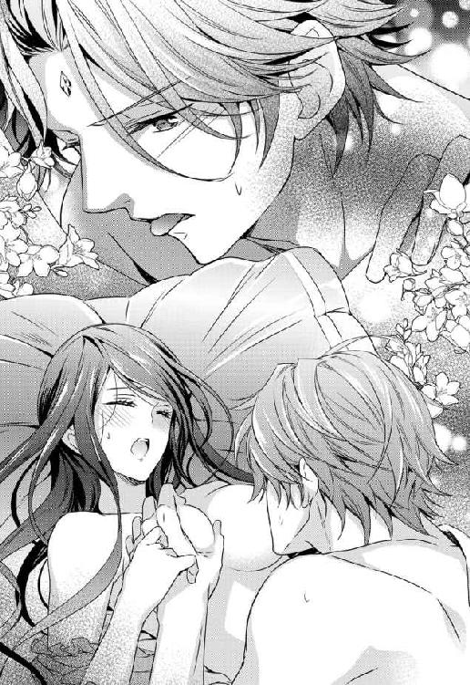

| 仮面伯爵は黒水晶の花嫁に恋をする【SS付】【イラスト付】 (フェアリーキス) | |
| 小桜けい | |
| (2016) | |
この物語はフィクションであり、実在の人物・団体・事件等とは、いっさい関係ありません。
イラスト：氷堂れん
プロローグ
秋の川原に、一粒の宝石が転がっている。
小指の爪ほどの大きさをしたそれが、秋の陽光を反射して煌く。青に、深紅に、紫に、緑に......これ程までに美しいものが、世界中に幾つあろうか。
──だが。
石の傍らには、三人の人間が倒れていた。この美しい宝石が、一瞬で巻き起こした惨劇の結末だ。
首を細身のダガーに刺し貫かれた大柄な男の死体と、額から血を流して呻く少年......それから、手足を縛られて口に布を嚙ませられた幼い男の子だ。
縛られた男の子の額には、傍らに転がる宝石と寸分たがわぬものが、燦然と輝いていた。飾りではなく、まるで美しく小さな角のように、その肌から浮き出ているのだ。
『ジェラルド様......早く、仮面を......』
重傷の少年が、よろめきながら身を起こした。少年もまだ幼く、十歳に満たないだろう。割れた額からはドクドクと血が流れ、上等のシャツを真っ赤に染めている。
少年が動くたび、川原の石に鮮血が点々と滴り落ちた。
苦痛に顔を歪めつつ、少年は傍に落ちていた銀の仮面を拾い上げると、男の子の顔へ被せた。
美しく忌まわしい宝石の燿きが、銀の仮面にしっかりと覆い隠される。
仮面の留め金が小さな金属音をたてて閉じると、真っ赤な少年は安堵するように微笑み──そのまま倒れた。
１ 全て奪われた
──未婚の異母妹が、身篭った。
フェルミ子爵家の長女クリスタは、自宅の応接間にて、渡された医師の診断書を凝視した。
内心はともかく、感情を押し殺すことに慣れたクリスタは、細面の怜悧な顔を大きく歪めはしなかった。軽く眉をひそめただけで、診断書をローテーブルに戻す。
それでも良く見れば、黒水晶のような瞳はいつになく揺れ動き、動揺を完全に隠しきれていない。
長い真っ直ぐな黒髪に着けた飾りも、僅かに震えていた。
日頃は忙しく働き詰めで、お洒落をする余裕もないクリスタだが、今日は精一杯の範囲で身綺麗にしている。着ているデイドレスも、手持ちで状態が一番良い物だ。
ただ、髪飾りもドレスも上質だが、亡き母の遺品なので、流行遅れなのは否めない。
クリスタが自分の身を飾る品を買うなど、今はとても出来なかった。
無言のまま、クリスタはテーブルを挟んだ向かいの長椅子へと視線を移す。
そこへ腰をかけている二人のうち、少女の方は、異母妹であるステファニアだ。
年齢は、クリスタより二つ年下の十九歳。手入れを欠かさぬ蜂蜜色の髪は艶やかに輝き、ぱっちりした瞳は大粒のサファイアのように美しい。長い睫毛にふっくらした唇と、文句の付けようのない美少女だ。
王都の有名店で仕立てた、最新流行の型のドレスと、それに相応しい華やかで高価なアクセサリー類が、彼女の美貌をいっそう引き立てていた。
社交界でも評判の美少女である異母妹は、恋人も多く奔放で享楽的な性格だ。正直に言えば、いつこんな事になっても驚くまいと思っていた。
異母妹の妊娠に、内心では激しく動揺したのは、別の理由。
先月に二十一歳となったクリスタ自身も、未婚ではあるものの、幼い頃から決められた婚約者がいた。
ミケーレという、コスタッツォ伯爵家の次男だ。彼は見目麗しく物腰も紳士的で、優しい誠実な人だと思っていた。
──しかし、大間違いだったようだ。
異母妹を孕ませたのは、彼女の隣に座っている青年......自分の婚約者ミケーレだったからだ。
フェルミ子爵家は、王都に近い農牧領地を有する田舎貴族だ。
敷地には領主の住居である城館を中心に、物置や穀物倉など、幾つかの離れがある。
大きな機織小屋と脱穀小屋もあり、領民達が共有で使いに来る。こうしてフェルミ家は、古くから領民達と苦楽を共にしてきたのだ。
クリスタはフェルミ家の長女であり、次期領主の継承権を持っている。そして現在は病床の父に代わり、若いながら領主代理を務めていた。
妊娠の診断書がテーブルに置かれると、応接間にしばし沈黙が流れた。
「──ごめんなさい、お姉様」
その静寂を打ち破ったのは、ステファニアだ。
「でも、お姉様がいつまでも領地経営に夢中で、ちっとも結婚する気がないから。ミケーレ様はすごく寂しかったのよ。だから、私がお話し相手になっているうちに、つい......」
ステファニアはいつになく殊勝な態度でうな垂れるが、つまり事態の原因は、クリスタが婚約期間を引き延ばしたからだと言っている。
「ねぇ、ミケーレ様だって、そうでしょう？ お姉様が予定通りに結婚されていたら、こんな事には決してならなかったわよね？」
隣で気まずそうに視線を泳がせているもう一人の当事者へ、ステファニアが上目遣いで同意を求める。
「うん、まぁ......」
ミケーレはためらいがちに頷いた。
「クリスタにはすまないが、何年も放っておかれているうちに、僕と本当は結婚したくないのかと......自信がなくなってしまったんだ」
二人の主張を、クリスタは無表情のまま黙って聞いていた。
今日はよく晴れていて、初夏なのに真夏なみの気温だ。それでもこの城館は、風通しの良い造りになっているので、普段なら暑さにまいってしまうことはない。
しかし、応接間の扉を閉めているせいか、やけに暑いような気がする。クリスタの背や手の平に、じっとりと嫌な汗が滲む。
そのくせ、ひどく寒いような気もして、気を抜けば震えそうになる両手を、しっかりと膝の上で握り込んだ。
本来ならクリスタは、十八歳の誕生日と共にミケーレと結婚するはずだった。
次男である彼は家督を継げないので、二人が幼い頃に両家の親が話し合い、フェルミ子爵家を継ぐクリスタのもとへ、婿入りする予定だったのだ。
──しかし、クリスタが婚姻を延ばさざるを得なかったのは、当時のフェルミ家が破産寸前だったからだ。
その原因は、父の後妻であるデボラと、その娘ステファニアの散財である。
クリスタの父は子沢山な貴族の末子で、フェルミ子爵家の一人娘であった母のもとへ、やはり婿入りに来た。
病弱だった母を良く支え、領地を滞りなく管理した。少なくとも母の前では、最後まで良き夫だったと思う。
クリスタが十歳の時に、母は持病の悪化で亡くなった。
すると、妻から爵位を継いだ父は、喪が明けるやいな、デボラを後妻に迎え入れたのだ。
二つしか歳が離れていないステファニアは、母が違ってもお前の妹だと父から言われた。父が随分と前から、密かにデボラを愛人として囲っていたのが明らかだった。
何年も日陰の身にしていたという負い目もあったのだろうか。父は後妻のいいなりだった。
デボラが自分の娘だけを可愛がり、何かにつけクリスタを虐げても、強くは止められず見て見ぬふりだ。
彼女が毎日のように、新しいドレスや宝石を買っては王都で豪遊するのも、黙って許容する。
フェルミ家は歴史こそ古いが、領地も狭く過去に目立った功績もない小貴族。そこまでの浪費をする余裕はないのに。
そして次第に父は、増え続ける借金という現実から逃避するように、酒へ溺れるようになっていった。
領地の管理も怠るようになった。以前ならこまめに領地を回っては、困っていないかと民へきさくに声をかけていたのに、農地が水害にやられても見舞うことすらしない。
それどころか、金が足りなければ税を上げれば良いとデボラに言われるがまま、領民から税を搾り取るようになった。
自分達の贅沢のために領民から過度な搾取など、とんでもない話だ。
過度な重税に苦しむ領民の心は、フェルミ家からどんどん離れていく。耕地や牧場を捨てて夜逃げをする農家も出てきた。
放置された土地は荒れ、税を納める領民は減る。減った金額を補うために、残った領民にはさらに重税が課せられていく......悪循環だ。
このままでは父の身体も領地の行く末も、無残な結果になるのは明らか。
税を上げても、デボラが自分とステファニアのために浪費を続けるので、借金も相変わらず増えている。
クリスタは父に、酒を控えて領地へ目を向けて欲しいと何度も頼んだが、かえって疎まれるようになってしまった。
酔った父へ必死に追い縋ったあげく、煩いと殴られた時は、ぶたれた頰の痛みよりも心の方が遥かに傷ついた。
デボラから折檻をされた事は数え切れなかったけれど、父から直接に手を上げられたのは初めて。声を殺して部屋で一晩中泣いた。
そしてクリスタが十五歳になったある日、父はついに酒毒で倒れてしまった。一命は取り留めたものの、意識もはっきりしない。
もちろん、衝撃を受けたし悲しかったけれど、もう涙は出なかった。
泣くよりも、やらなければいけない事がある。父の代理となり、領地を立て直す事だ。
デボラは、妻である自分が領主代理を務めるべきだと言い張ったが、クリスタもこの時ばかりは死に物狂いで抵抗した。
彼女に任せたら、ますます悪化することが目に見えている。
しかし幸いにも、フェルミ家本来の血を引くのは、父ではなくクリスタの母だったから、デボラは歯軋りしながらも引き下がったのだ。
それから、領主代理としてクリスタは奮闘を始める。
まずは領内の農家や牧場を回り、今まで不当に高い税を課した事を謝罪した。
領民の不満は爆発寸前だったが、クリスタが誠意を込めて頼むと溜飲を下げ、捨てられて荒れた耕地の再建に力を貸してくれた。
ずっと苦しい思いをさせられたのに、もう一度フェルミ家を信じるという彼らに、言葉では表現しつくせないほど感謝した。
農家や牧場はどこも人手が足りず、クリスタは毎日あちこちへ手伝いに行った。種まきに草むしり、刈入れや家畜の世話もやった。オリーブ油や羊毛の取引きを増やすべく、王都の商店や工房へも駆け回った。
経済状況の建て直しには、デボラとステファニアが浪費を止めてくれるのが一番だが、彼女達はクリスタを守銭奴や意地悪と罵るだけで、なかなか散財をやめない。
それでも借金の金額や利息、領民の数までを全て紙に解りやすく記して見せると、自分達が楽観していたよりも、状況は遥かに深刻だったと、ようやく理解したようだ。
どれほど税を上げても、浪費を続ければ近いうちに破綻すると知った二人は、使う金額に年間の上限を決める事を、渋々と了解した。それはクリスタの希望より、かなり高額になってしまったが、無制限に使われるよりはましだ。
もちろん、自身の出費は極力抑えた。新しい服も装飾品も買わず、古着を繕ったり亡き母のドレスを手直ししたりしている。
父はほどなく意識を回復し、床から起きられるようになったが、力になってはくれない。隠れて酒を飲んでは、また寝込むのを繰り返すだけ。
娘が自分の代理を務めていると召使達から聞かされても、それを恥じて立ち直る気はないらしい。
......もしかしたら、恥じ入ったからこそ、余計に酒へ逃避したのか。クリスタが寝室を見舞うのすら、頑なに拒否する。
悲しくても、嘆く暇はない。いつか父が立ち直ってくれるのを祈りつつ、それまでは自分が頑張るのだと歯を食いしばった。
懸命に領主代理を務め続けるうちに、飛ぶように時間は過ぎていく。
気づけばクリスタは十八歳。ミケーレと結婚を約束した年齢になっていた。
けれど、彼との婚約を双方の両親が結んだのは、まだクリスタが幼く実母も健在で、家もそこそこ裕福だった頃の話。
まだ家の借金は半分以上も残っており、領地の状態も完全に持ち直せたとは言い難い。傾いた家へ婿に来てくれとは、さすがに言い辛かった。
だからミケーレに、家と領地を立て直せるまであと数年間、結婚を待ってくれと頼んだ。
彼は、是が非でもすぐ結婚して苦労を共にしよう......とは言わなかった。けれど、結婚の延期を快諾してくれた。
一日も早く、胸を張って彼の花嫁になるのだと、いっそう熱心に領地の再建へ励んだ。
領民達との頑張りは、豊作の畑と元気な多くの家畜となって報われた。高利の借金もやっと返済が出来た。
今年の春は特に気候が良く、種まきも上手くいったし、家畜も子を多く産んだ。
秋の収穫次第では、ようやくミケーレと婚礼式を挙げられそうだと考えていた矢先に、彼から重要な話で訪問をしたいと、やけに改まった手紙が来た。
──そして、このとんでもない裏切りを告白されたのだ。
「召使や領民から尊敬されている、優しいお姉様なら、まさかこの子から父親を取り上げはしないと思うけれど......ねぇ、私とミケーレ様を祝福してくれるわよね？」
ステファニアに縋るような上目遣いで見上げられ、クリスタは深く息をはく。
婚約は親同士が決めたとはいえ、幼い頃からいずれ彼と結ばれるものだと、疑いもせずに信じていたし、彼の方でもそうだと思い込んでいた。
領地の再建に疲れきっている中、時おり彼が訪ねて来ては、優しい言葉をかけてくれるのが、とても嬉しかった。
ミケーレから花束やお菓子のお土産を貰うたび、ステファニアも同じ物を貰っているのを知っていたけれど、それすら彼の優しい気遣いだとばかり思っていたのだ。
しかし......悔しさと情けなさと憤りが渦巻くものの、それを二人にぶちまけたところで、何が実るというのだ。
いくら泣き叫んでもやり直せるものではなく、生まれて来る子にも罪はない。
「私の婚約は解消するから、安心して。......ミケーレ様も、異論はございませんね？」
こみ上げてくるやり場のない感情を押し込め、婚約指輪を外してテーブルに乗せた。
「ああ」
ようやくクリスタへ視線を向けたミケーレは、安堵したような笑みを浮べて、テーブルから指輪を摘みあげる。
すると、すぐさまステファニアが隣から手を伸ばして、彼の手から指輪を取りあげた。
「捨てられてもあっさり許すなんて、さすがはお姉様ね。これは頂くわ」
そう言った異母妹は、クリスタにだけ見える位置で、ぷっくりした愛らしい唇を思い切り皮肉そうに歪めた。さっきの殊勝さがまるきり噓のような笑みだが、クリスタは嫌がらせをやり過ごす時と同じく、気づかないふりをした。
「そんな古い指輪で良いのか？ 新しく、もっと良い物を買ってあげるのに」
ミケーレが驚いたように言う。
もう何年も前からクリスタが持っていたその指輪は、畑や牧場を手伝う時には外したし、大切に手入れしていたものの、細かな傷はどうしても付いた。新品同様とは言い難い。
ドレスや宝飾品にこだわるステファニアは、普段なら誰かの中古品など、絶対に拒否するはずだ。
「ううん、これでいいわ。お姉様がくださったのだから、大切にしなくちゃね」
しかし、ステファニアは異母姉の物だった指輪をためらいなく着け、しなやかな手を見せつけるように高くかざす。
クリスタは表情を変えないまま、自分の手をそっとスカートの影にしまいこんだ。胃の辺りが、石でも飲み込んだかのように重苦しい。
ステファニアの、透けるような白い指に着けられた金の指輪は、自分の日焼けして荒れた指に着いていた時よりも遥かに耀いて見えた。
指輪だけでなく、幸せの絶頂にある異母妹も、いっそう美しく輝いて見える。
半分血が繫がっていても、まるで美しくない自分とは大違いだと、心の隅でひっそり嘆息した。
実のところ、クリスタも滅多にいないほど美しい顔立ちをしているのだ。可愛らしいステファニアとは方向性が違う、しっとりと落ち着いた気品をまとう美女だ。
しかし多感な少女時代に、継母から散々に容姿を貶されて育てば、全く自信を持てなくなるというもの。切れ長の瞳が美しい大人びた顔は『目つきが悪くて老けている』、無駄のないスラリとした肢体は『棒切れみたいで色気がない』......と、いうように。
召使達はそんな事ないと言ってくれたし、気にしないように努めてはいたものの、毎日のように可愛らしい異母妹の容姿と比較され、あらゆる言葉を尽くして詰られた傷は、いつのまにかクリスタの心に深い爪痕となって刻み込まれてしまった。
だからクリスタは、いくら鏡をじっくり見ても、召使達が言ってくれるほど自分の容姿が上等だとは、どうしても思えない。
「クリスタに気を遣ってそれで良いだなんて。ステファニアは可愛いうえに優しいな」
ミケーレが蕩けそうな笑みをステファニアへ向け、それからクリスタへ視線を向けた。
「本当にすまなかったけれど、君が心の広い女性で良かった。ステファニアと子どもは幸せにすると、責任持って約束するよ」
元・婚約者の言葉に、クリスタはもはや言葉を発する気力もなく、曖昧な微笑だけで答えた。
──たった今、これ以上ない形で不誠実さを知らしめた男の、責任持った約束......か。
ミケーレはそそくさと帰り、ステファニアも二階の自室に引き上げる。
クリスタは書類の続きに取り掛かろうと書斎に入ったが、文字は目を滑って素通りしていくだけで、ちっとも頭に入らない。
しばらく虚ろに書類を眺めていると、不意に背後の扉がノックされた。
「......お義母様」
扉を開けると、豪奢なドレスを着た継母のデボラが立っていた。
化粧は厚いが、もう四十過ぎとは思えぬほど若々しく見える。
彼女の肉感的な身体を包む最先端デザインのドレスと、首にかかっている大粒ルビーのネックレスは、見覚えのない品だった。
年間の使用額をきっちり決めたはずなのに、喉元すぎればなんとやらで、借金を返せたと知ったデボラは、また浪費をはじめていた。
今年の上限額は、夏のドレスとそれに合わせたアクセサリーを作ると言って、もうとっくに使い切っている。こんなドレスや豪華な宝石を買うお金はないはずだ。
また勝手にツケで買いだしたのかと、思わず眉をひそめてしまったが、デボラは気にするようでもなく悠然と赤い唇を吊り上げる。
「今、ステファニアと話をしてきたの。あの子が世話をかけたようね」
「いえ......もう、済んだ事ですわ」
クリスタは用心深く答えた。デボラが自分の娘の非を詫びるなど、なんだか薄気味悪い。
「クリスタ。お前ほど狭量な娘はいないと思っていたけれど、少し見直してあげるわ。可愛い妹を祝福して、爵位の継承権と、婚約者を譲ってくれたのだからね」
上機嫌に放たれた言葉に、クリスタは眼を見開いた。
「どういう意味ですかっ!?」
婚約者を寝取られたのは事実でも、爵位の継承権まで譲ると言った覚えは断じてない。
フェルミ家の爵位と領主の権限は、クリスタの母が亡くなった後、婿だった父が継いだが、その次は母の娘たるクリスタが継承する事になっている。
父が倒れた時、領主代理の座をデボラと争った時も、王都の裁判所でこれが認められたために、クリスタが代理となれたのだ。
「あら？ だって『ミケーレ様との結婚』が、フェルミ家を継ぐ条件になっているのよ。先日、お父様が書類もきちんと作られたの。知らなかったかしら？」
デボラは高笑いし、一枚の書類を突き出す。
『フェルミ子爵家の爵位及び領地の継承は、ミケーレ・コスタッツォと婚姻を結ぶ事を条件とする』
そこには、確かに彼女の言った通りの内容が記され、父のサインとフェルミ領主の印が押されていた。
「領主印が、どうして......っ！ 書斎を荒らしたのは、貴女だったのですか!?」
髪が逆立つ思いでクリスタは叫んだ。
重要な書類に押される領主印は、クリスタが書斎の戸棚に入れて厳重に保管している。
しかし......先日に城館へ泥棒が入り、この書斎が荒らされるという事件があったのだ。
戸棚の鍵も壊されたが、幸いにも盗まれたのはいくらかの現金のみで、領主印は残っていた。
大理石の立派なものとはいえ、どこの古物商でも領主印など買い取ってはくれない。盗難届けを出されてしまえば、すぐに無効となるし、盗品の足がつくからだ。
だから安心したのだが、犯人の目的が『たった一枚の書類に印を押すだけ』だったというのなら、話の重大性は全く変わってくる。
領主印のみならず、現領主のサインまで記された書類は、正式なものとして通用してしまう。
今のフェルミ領はクリスタが取り仕切っているとはいえ、それはあくまでも領主代理としてである。領主の地位と、継承者を正式決定する権限を有するのは、相変わらず父なのだ。
領主代理を争った裁判の時、クリスタの血筋による継承権が認められたのは、父が継承権を他に移すというような書類を、一切作っていなかったが故だ。
しかし新たなこの書類の指名は、血筋よりも優先されるだろう。
また、やり方が巧妙で汚い。
単純にステファニアを新たな継承者と定め、一度は王都の法律所で認められたクリスタの継承権を一方的に剝奪するのであれば、何かと問題になる。
ところが、クリスタは書類の存在を知らなかったとはいえ、自分からミケーレとの婚約を破棄すると言い、ステファニアに彼を譲った。
だから、真相がどうであれ状況は『クリスタが自ら望んで継承権を放棄した』という形になるのだ。
青ざめ震えているクリスタを、デボラが勝ち誇った声で嘲笑う。
「私が書斎を荒らす？ あの時は茶会に出ていたじゃないの。人聞きの悪い事を言わないでちょうだい。そもそも、あの領主印はお父様のもの。どうやったかは知らないけれど、ご自分で取ったんでしょうよ」
「お父様がなさるわけがないわ！」
思わずそう叫んだが、正確に言えば『領主印を盗むのだけは、出来るわけがない』だ。
サインは確かに父のもので、ひどくショックだった。父に疎まれている事は痛いほど知っていても、亡き母からクリスタへ渡るべきだった継承権だけは、決して取りあげまいと思ったのに......。
だが、今の父は、歩くのさえやっとの身。
頑丈な戸棚の鍵をこじ開けるなど考えられない。
「どう思おうと勝手になさい。書類はこうしてきちんとあるのですからね」
デボラは切り札の書類を素早く引っ込め、領地の収益報告書を机から摘み上げた。
「ステファニアは謙虚な子だから、さっき爵位と領地も継げると知ったら驚いて遠慮していたけれど、大丈夫。この順調さなら、後は誰だろうと十分やっていけるわ。ミケーレ様も、そうおっしゃっていたしね」
満足そうに報告書を眺め、ヒラリと床に落としてつま先で踏みにじる。
「お前はもう用済みよ」
「全部、貴女が彼と......ミケーレと企んだのね」
狡猾な表情に全てを察し、クリスタはよろめきそうになった足を必死で踏ん張る。
今の言葉からして、ステファニアは領地の騙し取りまでは知らなかったようだ。
異母妹はそもそも、深く物事を考えるのが好きではない、興味を持つのは、着飾って遊ぶ事と、男の人にチヤホヤされる事だけだ。
ミケーレを誘惑したのも、母親に言われるがまま従ったのだろう。口煩い異母姉に一泡吹かせて、なおかつ見目の良い結婚相手を得られると......。
この女がミケーレと組み、悪辣な手段で家を乗っ取ったのだ。
怒りに身を震わせるクリスタを、デボラが満足そうに眺めた。
「ようやくこれで、その憎らしい顔を見なくて済むわ」
「私に、ここを出て行けとおっしゃるのですか」
「ええ。娼館にでも売り払ってやりたいところだけれど、それでは家の名前に傷が付くものね。だから、哀れなお前には、新しい結婚相手を用意してあげたのよ。感謝なさい」
「新しい......？ どなたですか......？」
ゾワリと、嫌な予感が背筋に走る。
「お前は、ベルヴェルク辺境伯の下に嫁ぐのよ。向こうはすでにお待ちしているのだから、早く荷物をまとめて、明日の朝には出ておいき」
「なんですって!?」
ベルヴェルク辺境伯といえば、人嫌いの変わり者と名高い国内貴族だ。クリスタは噂を聞いただけだが、彼に会った事もない。
この国の貴族の娘なら、だいたい十三歳くらいで保護者に付き添われて、社交デビューをする。王都の社交場や他家の領地で開かれる宴に出かけ、新しく見知った人達と親睦を深めたり、有望な結婚相手を探すものだ。
しかしデボラは、クリスタには婚約者がいるのだから社交界で浮つくのは良くないと、もっともらしい事を言い、正式な社交デビューをさせなかった。
貴族の家では特に、十五歳に満たない娘が一人で出歩くのは好ましくないとされる。外出にも交友関係についても、いちいち親の許可が要る。
この点で、デボラは継母という己の立場を、最大限に利用した。
フェルミ家の縁戚や旧知の者など、クリスタに好意的だった相手は、露骨に失礼な態度で家から遠ざけ、自分とステファニアだけの新しい交流仲間をせっせと作り上げた。
客を家に招く時は、クリスタに私室から出ないように命じ、ステファニアだけを娘と紹介した。
だからもはや、フェルミ家にクリスタというもう一人の娘がいる事すら、貴族社会ではあまり知られていないはず。
「そんな......私はあの方について、殆ど何も知りませんし、向こうも私をご存知ないはず......なぜ......」
「私が紹介してあげたのよ。ベルヴェルク卿が、跡継ぎを産む道具が欲しいとおっしゃっているのを聞いてね」
「っ!?」
あまりの言い方に、またもや耳を疑った。子を産む道具なんて......ひどすぎる。
結婚した女性は、どこの家でも跡継ぎを産むのを求められるものだ。
そういう言い方をする男性も多いとは知っていたが、改めて我が身に言われると、これほど胸に突き刺さる暴言だったか。
「あの方は噂通り、たいそう偏屈で人嫌いのようね。お前がくだらない事を企まないよう、侍女を連れずに単身で来る事と、待遇に一切の文句を言わない事を条件に、娶ると決めたわ。婚礼式も挙げないそうよ。その代わりに、この領地へ毎年の資金援助を約束なさったわ。これくらい、幾つも好きに買えるほどの金額をね」
デボラが見せ付けるように、豪奢なネックレスを指で触れる。
もう言葉も出ず、クリスタは壁にもたれかかった。
自分が領地を奔走している間も、デボラは相変わらず夜会や観劇に園遊会と、毎日のように出かけていた。
それを単なる遊興とみなし、何も用心をしなかったのが敗因だ。
おそらくデボラは社交界を渡り歩きつつ、クリスタから領地の継承権を奪う計画を練り上げ、その機会を虎視眈々と狙っていたのだ。
ミケーレが、いつからデボラと手を組んでいたのかも知らないが、彼が帳簿をやけに見たがるのにも、今思えば注意するべきだった。
彼が領地経営の状態を知りたいのは、早く結婚を待ち望んでくれているのだと、都合よく解釈していたが、考えてみれば本当に誠実な男が、手は全く貸さずに利益だけを知りたがるだろうか。
してやられた、と思うものの、迂闊な自分に歯嚙みをした。
「厄介払いができたうえに、大金をもらえるなんてね。それに、お前がさっさと嫁いでしまえば、姉の婚約者を奪ったなどと、ステファニアにも悪い噂が立たないわ」
嘲笑を聞きながら、クリスタは震える唇を引き結んで涙を堪えた。
この女の前でだけは、絶対に泣くものか。
無言で机に向かい、引き出しから証書用の紙を取り出してサラサラとペンを走らせる。
「......私がこの城を去った後、召使達に理不尽な仕打ちをしない事と、領地の税率を上げない事をお約束下さいませ。この証書にサインを頂ければ、大人しくベルヴェルク卿の言う事を聞きます。頂けなければ、貴女が勝手に約束した事だと、全てを明かして契約は無効だと、卿に直訴いたします」
悪辣な女に、精一杯の抵抗を突き付けた。
この家に古くから仕えている召使達は、デボラが家で権勢を振りかざすようになっても、クリスタを慕い大切にしてくれた。
彼らがいたからこそ、幼く無力な頃は、継母の辛い仕打ちに耐えられた。
そして成長してからは、いよいよ本格的に古参の召使を疎み始めたデボラから、彼らを守れるようになった。
ここの召使達は、フェルミ家の経済状況が悪くなってからは、相場よりずっと安い賃金で働いてくれている。彼らを解雇したり、非道な扱いをして辞められたら、もうこんなに良い召使は見つからない。自分も領地の事で精一杯だから、家事までは出来ない。そうなれば、料理の一つも作れない貴女達こそが困るのだと、継母に立ち向かえた。
それでもここまで家が盛り返し、なおかつクリスタもいなくなれば、デボラはすぐに皆をクビにして新しい者を雇いかねない。
召使は一家揃って住み込みで働いている者も多く、彼らが路頭に迷うような事だけは避けたかった。
「フン、良いでしょう」
デボラは顔をしかめたが、羽根ペンをひったくってインク壷に浸し、サインを書き込んだ。
「これで文句は言わせないわ。その代わりに、お前がベルヴェルク卿を怒らせでもして、援助を打ち切られたら、即座に召使達全員を鞭打ちにして、放り出してやるからね。税も限界まで搾り取ってやるわ」
そう吐き捨てて書斎を出ようとしたデボラの背に、クリスタは呟いた。
「ステファニアの......貴女の娘の幸せを犠牲にしても良いと思う程、お金が欲しかったのですか？」
デボラがピタリと足を止め、柳眉を吊り上げて振り返った。
「どういう意味かしら？」
「ミケーレがステファニアへ、本当に惹かれたのなら祝福しようと思っておりました。しかし彼は貴女と組んで、領地と私を売った金銭を手に入れるために、ステファニアを利用しただけ......婚約者を陥れ、その異母妹と平気で通じる男性が、この先も妻へ誠実に接するとは思えませんが」
言い終わった途端、乾いた音と共に焼け付くような痛みがクリスタの頰に走った。
クリスタの頰を平手で打ったデボラが、フンと嘲った。
「きっかけがどうであれ、ステファニアならどんな男も夢中になるわ。お前のような、何の魅力もない捨てられて当然の娘と違ってね」
書斎の扉が、大きな音をたてて閉まる。クリスタはため息をついた。
デボラは自分の娘ステファニアを、昔から溺愛していた。それは甘やかしてばかりで、本当は娘のためにはならないやり方だったかもしれない。
それでも早くに母を亡くし、父からも疎遠に扱われてしまった身としては、ほんの少し羨ましく思えたものだ。
だからこそ、デボラが家を乗っ取るために、ステファニアと身篭った子すら利用したと知り衝撃を受けた。しかし、余計なお世話だったようだ。
確かに、輝くような美貌も可愛げもない自分と違い、美しく甘え上手なステファニアなら、ミケーレのように不実な男すら繫ぎ止めるかもしれない。
──翌朝。
フェルミ家の召使達は、クリスタの突然の出立に驚き、事情を聞くとあんまりだと憤ってくれた。
クリスタを送る御者にいたっては、まるで自分がひどい仕打ちをしているというように、申し訳なさそうな顔で、少量の荷物を積み込んでいる。
だが、彼らにもどうする事も出来ない。
せめてもと、朝も早いのに総出で見送りに出てくれた。
「身を粉にして家を救ったクリスタ様に、なんてひどい仕打ちを！ しかも、一人で嫁げだなどと......誰か付き添えれば、少しはお力になれますでしょうに」
メイド頭が悔しそうに言い、ハンカチを目に押し当てながら鼻を啜った。
クリスタが生まれる前からここに勤めているメイド頭は、ふくよかで大らかそうな外見通り、滅多なことでは動じないどっしりした性格だ。
しかし、今回はさすがに許容範囲を超えていたようで、目を赤く泣き腫らしている。
「仕方ないわ。それがベルヴェルク卿の出した条件なんですもの。それに私は、身の回りの事も自分でちゃんと出来るって、知っているでしょう？ 心配しないで」
クリスタは平静を装って、無理に笑みを浮かべた。
貴族の娘が他家に嫁ぐ際は、向こうでの暮らしを手助けするように、実家から有能で信頼のおける侍女を伴うのが一般的だ。
クリスタとて、誰も知らない土地に一人で嫁ぐのは不安だったが、どのみちこんなに急な話なら、一緒に他領地へ移り住んでくれる者は探せなかっただろう。
召使や領民にも、それぞれ住み慣れた家や家族があるのだし、彼らにはそれを大切にして欲しい。それが、クリスタの一番守りたかったものだ。
「それより、皆や領民にひどい事をしないよう、証書だけは書いてもらったから。何かあれば連絡をちょうだいね......できる限りの事をするわ」
明るく言ったつもりだが、言葉の最後は、やや自信なさげな小声になってしまった。
なにしろ、この状況はデボラ達にまんまと陥れられた結果だし、嫁いだ先にどんな運命が待っているかもわからない。
──私は無力だ。結局は何も守れず、全てを奪われた......。
クリスタは誰にも見られないように唇を嚙み、馬車に乗り込む。ようやく笑顔を作れてから、窓の方を向いて皆に手を振った。
初夏の花が両脇に咲くあぜ道を、一頭の老馬が古い箱馬車を引いてゆっくりと歩き出す。
家にはもっと新しく乗り心地の良い二頭立ての馬車もあり、それを引く逞しい若駒もいたが、そちらはデボラが、自分とステファニアにしか使用することを許さない。
そんな事で争うのも馬鹿馬鹿しいので、クリスタは特に文句も言わず、用がある時は自分で馬を駆るか、この古い馬車を使っていた。
老馬の歩みはとてもゆっくりだが、今はかえってそれがありがたい。できれば、永遠に着いて欲しくないと思う。
窓から外を覗けば、見送る召使達と、住み慣れた城館の姿が段々と遠ざかり、胸が締め付けられた。
もう、ここに戻る事はないだろう。
（っ......それより重要なのは、これからの事よ）
クリスタは視線を馬車の中に移し、思考の方も、新たな結婚相手の事へ移した。
ベルヴェルク辺境伯は、幾つもの鉱山を有する富裕な貴族だ。
かの領地と、フェルミ子爵領との間には王領地を挟むものの、距離としてはそう離れていない。
だが、この領地からは王都の方がずっと近いし、ベルヴェルクの側から王都へも、もっと賑やかな港町を通過する広くて近い街道がある。
よって互いの領地に、接点や交流は皆無だった。
もっとも、クリスタが夜会など貴族の集まりへ頻繁に顔を見せていれば、一度くらいはベルヴェルク辺境伯と会う機会もあったかもしれない。十五歳を過ぎればもう、保護者なしで社交場に出かけたり、他家の招待を受けるのも自由だ。
しかし、正式な社交デビューをさせられなかったクリスタには、招待状など全く来ないし、領地の建て直しに手一杯な中では、社交場へ遊びに行く余裕もなかった。
それでも、貴族に関する噂話だけなら、庶民的な定食屋や職人が集まる工房街にも舞い込んでくる。
領地の農作物の取引で工房や食堂を訪れた際、ベルヴェルク辺境伯に関する噂を、クリスタも時おり聞いていた。
現在の当主ジェラルド・ベルヴェルクは、クリスタより幾つか年上の青年だという。早くに両親が亡くなったため、まだ少年といって良い年齢から領地を継いだそうだ。
非常に若くして爵位を継承したというだけで、何かと話題に上りやすいものだが、ジェラルドがあちこちで噂をされるのは、その風変わりさ故だ。
『仮面伯爵』と、彼はあだ名されている。
常に銀の仮面をつけて顔の上半分を隠し、決して誰にも素顔を見せない所以だ。
その頑なさといったら筋金入りで、自分の城から近場に出かける時でさえも、常日頃から仮面をつけているらしい。
かなり偏屈で人嫌いらしく、社交の場にも必要最低限しか出ないそうだが、その異様な姿は格好の噂の的となった。直接彼を見た事がなくても、仮面伯爵のあだ名なら大抵の人が知っているほど有名である。
ジェラルドの素顔に興味を持った貴族達は、仮面を剝げるか面白半分に賭けまで始めたが、あの手この手で仮面を剝ごうと企んでも、いつも上手くかわされてしまう。
それどころかなんと、王宮の夜会に招かれた時は、国王夫妻の御前ですら仮面を取らなかったらしい。
仮面舞踏会でもないのに、王の前で帽子を脱がない事と同じくらいな無作法だ。
さすがに王が理由を尋ねると、ジェラルドは王に無礼を謝罪はしたものの、生まれつきの病ゆえに決して顔を見せられないと返答をし、あくまでも仮面は脱がなかった。
たまたまその場には、ベルヴェルク家と昔なじみの老貴族も居合わせ、ジェラルドの両親は息子が奇病に冒されていると言っており、幼い頃から常に仮面をつけさせていたと証言してくれた。
国王は寛大な人柄だし、王妃も熱心に病院を慰問して回るような、心優しい女性だ。
なので国王夫妻は、それ以上は深く追求をせずに、今後も王宮で仮面をつけたままで良いとさえ、許可してくれたという。
この出来事は、国王夫妻の寛容さを示すものとして、その場にいた人々によって大いに語られたし、城の召使から市井にも広まった。
そして話を聞いた人々は同時に、仮面伯爵の決して見せられない素顔とは、どんなものかという想像を膨らませ、口々に語り合ったのだ。
痣で真っ黒になっているとか、空気に触れると顔が崩れてしまう病だとか、実は病というのは噓で、二目と見れぬ醜い顔立ちに両親が絶望したからだとか......ひどい憶測まで飛び交っている。
もっともクリスタとしては、外観をどうこう言う気はない。病で苦労したというなら気の毒だと思うし、人間として大切なのは性格だと思うが......。
──妻を金で買い、跡継ぎを産む道具と言い切るなど、どう好意的に考えても性格の良い者の行いとは思えない。
それに、ジェラルドの代になってから、ベルヴェルク領の鉱山では、採石量が飛躍的に増えているそうだ。元から採掘されていた銀と鉄鉱石の他に、明かりとして重宝される、希少な発光石の鉱脈まで、新たに掘り当てたらしい。
しかしそれは、ジェラルドが利益を増やすために、鉱夫達に過度な重労働を強いているからだという噂もある。
これも仮面の中身と同じく、風評にすぎないのだが、クリスタに提示された結婚条件を考えると、あまり楽観的にはなれない。
（ベルヴェルク卿は、私をどう扱われる気なのかしら......）
クリスタの背筋を冷たいものが這う。
婚礼式を挙げないという点だけでも、すでにかなりひどいものだ。
式を挙げなくても、役所でしかるべき手続きを踏めば婚姻は成立するし、平民階級ならば、経済的な理由でそうする者も多い。
だが、体裁にこだわる貴族階級では、そうもいかない。
貴族の婚礼式とは、これから夫婦となる誓いを神へ立てるという神聖な儀式という意味の他に、自分の結婚相手を貴族社会へ披露する場でもある。
それをしないという事は、妻となる女性を、他所様にはとても見せられない相手と言う意味となる。
そんな扱いを受けた妻は、その後いつまでも、何かと面白おかしく揶揄されるものだ。
つまり、『婚礼式を挙げない』という条件は、貴族社会で一生蔑まれろと言うも同然。
そのうえに、『待遇に一切の文句を言わせない』とは、一体どういう扱いをする気なのか......。
クリスタはため息をついて首を振る。
そんな男に嫁ぐより、どこかの農家の下働きでもした方がよっぽどましだけれど、自分が逃げたらフェルミ領の人々はひどい目に遭うのだ。
すっかり暗くなってしまった気分を和らげるべく、傍らに置いた手提げを探って一冊の絵本を取り出した。
随分と読み込まれた絵本は、見送りに来たメイド頭の末娘がくれたものだ。宝物だと聞いたので、本当に良いのかと尋ねたが、幼い少女はどうしてもあげたいと渡してくれた。
（絵本なんて、久しぶりね）
可愛らしい絵のついたページを開き、クリスタは口元を綻ばせる。ここ数年は、経済学や農業、畜産に関する本しか読む余裕がなかったが、絵本は大好きだ。
絵本は、この周辺諸国に伝わる伝説、宝石人の話だった。
伝説とはいえ、数百年前まで宝石人は実際にいた。
大昔はごく稀に、額に小さな宝石を持つ赤子が生まれたらしく、その者たちを『宝石人』と呼ぶのだ。
宝石人が生まれるのに、家柄や血筋は関係ない。農民からも貴族からも、生まれる可能性があった。
額に宝石がある以外、彼らは普通の人間だったという。そして宝石の特徴も、一代限りのもの。宝石人の男女が結ばれても、子どもに宝石はなかったらしい。
しかし、王侯貴族はこぞって宝石人を探し求め、非情な手段を使っても、その身を手に入れようとした。
宝石人の額にある宝石は五年に一度剝がれ落ちて、新たな宝石がまた出来るからだ。
その宝石は、他のどんな宝石よりも美しく、高価で取引をされた。
絵本も、宝石人として生まれた少年が、宝石を目当てに襲ってくる盗賊や悪党商人から、さまざまな知恵を振り絞って逃げ延び、最後には宝石人と知らずに恋に落ちた王女と結婚して、幸せで平穏な日々を手に入れるというものだった。
すぐに読み終わってしまう短い本だったが、クリスタは何度もページを捲っては挿絵を眺めた。
特に最後のページに描かれた、幸せそうに愛を誓い合う少年と王女の絵からは、いつまでも目が離せなかった。
クリスタを乗せた馬車がようやくベルヴェルク辺境伯の城に着いたのは、陽が傾く頃だった。
夕陽の中にそびえ立つ灰色の岩で造られた城は、高い尖塔や鉄門を備え、重々しい雰囲気をかもし出していた。
この領地はかつて、盗賊や魔獣の類が跳梁跋扈する荒れ果てた土地だったという。
ベルヴェルク家の祖先が王命を受け、数々の外敵を打ち払いながら開拓したと歴史には記されている。要塞そのものの外観が、激戦の名残を物語っていた。
同じ貴族の城といっても、半分農家の屋敷のようだったフェルミ家の城館とは大違いだ。
──この恐ろしげな城と、無慈悲な条件を突きつける仮面伯爵の元で無事にやっていける......いや、生き延びられるのだろうか？
クリスタは緊張に息を呑む。
万が一にも御者に被害を及ばせないために、門から少し離れた所で、荷物と共に降ろして貰った。
そして馬車を帰らせてから、こちらへ不審そうな視線を向けている門兵に恐る恐る近づき、自分の名と用件を伝えたのだが......。
「大変な失礼をいたしました！ 貴女様でしたか！」
厳しそうな顔をしていた門兵達は、クリスタがジェラルドのもとへ輿入れに来たと知るやいなや、たちまち相好を崩した。
「おいっ、すぐジェラルド様とダンテさんに報告しろ！」
「お荷物をどうぞ！ ささっ、ご案内いたします！」
「あ、ありがとう......」
報告に駆けていったり、荷物を持ってくれたりと、何やら大興奮の彼らに驚きつつ、クリスタは重厚な城内へと足を踏み入れる。
──そして。
「奥様！ ようこそいらっしゃいました！」
城の玄関ホールでも、大喜びする召使達に出迎えられた。
メイドからコック、馬番や庭師らしい者達までが吹き抜けの広いホールに並び、ニッコニコの笑顔。提示された条件からして、とても温かな歓迎は期待出来ないと思っていたのだが......。
「フェルミ領から参りました。クリスタ・フェルミと申します。至らぬところもございますでしょうが、どうぞ宜しくお願いいたします」
予想との違いにたじろぎつつ、クリスタはスカートの裾を摘んで挨拶をした。着くなりすでに『奥様』となっていたのにも驚いたが、考えてみれば式を挙げない約束だ。
すでに婚姻済みと扱われるとしても、何ら不思議ではない。
「勿体ないお言葉を......こちらこそ、心を込めてお仕えさせて頂きます」
召使達の先頭にいた男性が、丁重に腰を折る。
「申し遅れました。私はベルヴェルク家の執事を務めさせて頂いております、ダンテ・シュナイトでございます。何か御用がございましたら、いつでもお申し付け下さいませ」
ダンテはとても落ち着いた優雅な物腰だったが、まだせいぜい三十歳といったところだろうか。執事という重役にしては随分若い。
赤茶色の髪は前髪の一部がやや長く、スラリとした体軀に黒い背広の上下を隙なく着こなしている。それでも堅苦しすぎると感じさせないのは、彼の柔和な微笑みのせいだろうか。髪と同色の瞳は穏やかな光をたたえ、優しい頼れるお兄様といった雰囲気だ。
不意に、ダンテが視線だけを僅かに上へ動かし、眉をひそめた。
クリスタもつい、つられて視線を上げてしまう。
吹き抜けホールの高い部分には、手すりがついており、二階からホールを見下ろせる造りのようだ。
天井からは豪奢なシャンデリアが下がり、ホールを囲む二階の通路には、装飾品らしい古風な全身甲冑が幾つか飾られているが、特に不審なものは見えない。
執事が何を見捕らえたのか解らなかったが、彼はすぐに視線を戻し、深々と頭を下げた。
「ジェラルド様はご多忙でして......奥様には後ほどお会いになると存じます。遠いところをお疲れでしょう。まずはお部屋でお寛ぎ下さい」
ダンテがサラリと促して僅かに身を傾けると、品の良いお仕着せを着たメイドが二人、さっと進み出る。
いかにも人の良さそうなふっくらした中年のメイドと、新人らしい小柄な若いメイドだ。
「彼女たちが奥様の部屋付きになります」
ダンテがメイドの名前を一人ずつ紹介し、彼女達は深々と頭を下げた。年かさのメイドがアンバー。若いメイドが、ルチルだという。
「奥様、お部屋に御案内いたします」
落ち着いた声でそう言ったアンバーは、実家のメイド頭に雰囲気が良く似ており、クリスタは自然と微笑みを浮かべていた。
「それでは、お言葉に甘えさせて頂きます」
思いがけない歓待に、強張っていた心がとても軽くなっていく。
外観から厳めしい印象を受けていた城は、一歩中に入ると柔らかな空気に満ちていたし、召使達の顔に暗い影も見えない。
それはつまり、ここの主人たるジェラルドが、彼らを常日頃から脅かすような、残忍な暴君でないという証拠だ。
メイド達に案内されて、綺麗に掃除された廊下を歩きながら、クリスタは胸中で安堵する。
デボラに話を聞かされた時は、気が動転してつい鵜呑みにしてしまったが、考えてみれば、輿入れに対する無慈悲な宣告はジェラルド本人から聞かされたわけでも、直筆の手紙で示されたわけでもない。
継母や異母妹が『使用人たちは陰でクリスタの悪口を言っている』等、嫌がらせでデタラメを吹き込むのだって、以前は良くあったものだ。
変わり者と名高い仮面伯爵だが、彼について何も知らない自分が、憶測であれこれ言うのは公平でなかった。
実際に会ってみれば、もしかしたら少しずつでも、打ち解けられるかもしれない。
昨夜から真っ暗だった心に、微かな希望の灯が見えた気がした。
２ 人間不信の仮面伯爵
クリスタに用意された私室は、寝室と二間続きの立派なもので、専用の浴室や日当たりの良いバルコニーまでもついていた。
塵一つなく掃除され、置かれている調度品も上質な物ばかりだ。部屋の照明や、広い寝台の脇に置かれたランプは、発光石を使用した高価な品で、紐を引くだけで明かりが簡単に灯けられるし、油の臭いが部屋に篭る事もない。
書き物机の横には揃いのチェストと大きな衣装棚。本棚には、若い女性の好みそうな詩や恋愛小説が数冊置かれていた。
「お荷物は、お食事の間に片付けますが......あの、まだこれから残りが届くのでしょうか？」
荷物を運んでくれたルチルが、思わずといった調子で尋ねてきた。
無理もない。クリスタの持参した荷物は、肌着からドレスまで旅行鞄二つで納まってしまう量だ。貴族の娘の輿入れ荷物にしては、幾らなんでも少なすぎると思ったのだろう。
「これっ、ルチル！ 余計なことを言うんじゃありません！」
途端にアンバーから小声で叱責され、ルチルは慌てて首を竦める。
「いいのよ、気にしないで。荷物はそれだけなの。あまり多くはないけれど、不自由はしていないわ」
恐縮した様子のルチルへ、クリスタは気楽に笑いかけた。
亡き母は過度な贅沢を好む人ではなかったが、夜会などでそれなりに体裁を保てるくらいには、ドレスや宝飾品を持っていた。
だが、デボラの散財が家を圧迫しはじめると、召使達に給料を払うのも難しくなってきた。当時はまだ少女だったクリスタが、継母に彼らを解雇させず給料を支払うためには、涙を呑んでそれらを売るしかなかったのだ。
領主代理となり、ようやく収入から給料を支払えるようになった時には、母の遺品も大半がなくなっていた。
それでも普段着が数着に、今も着ている外出用のドレスなど、最低限はなんとか残っているから、不自由していないというのも本当だ。
アンバーはいかにも熟練のメイドらしく、てきぱきとお茶の支度をし、ルチルがそれを手伝う。彼女達の淹れてくれた温かい茶が、長時間の馬車旅で疲れていた身体に、じんわりと染み渡った。
ちょうど良く一息つけたところで、夕食が整ったと食堂へ案内された。
ジェラルドはまだ忙しいそうで、食卓にも姿を見せなかった。
しかし、テーブルには綺麗な花が飾られ、親切で丁寧な給仕もされる。山鳥や山菜を使った、心尽くしの料理もとても美味しくて、歓迎されているのが十分に伝わってきた。
食事の後、クリスタはアンバー達に手伝って貰い、部屋の浴室で身を清めた。
部屋の浴室も、驚くほど立派だった。広い浴槽は乳白色の大理石で、外側に敷かれたモザイク模様のタイルも美しい。
火石や水道パイプが設置されているので、蛇口をひねるだけで湯が使えるし、温風で髪を乾かす装置まであった。
王宮や、とりわけ富裕な貴族の城には、こういう設備もあるとは聞いていたが、中程度の貴族ではまずお目にかかれない。クリスタも実際に目にするのは初めてだ。
しかし、普段なら一人で済ませる入浴を、わざわざ手伝って貰ったのは、慣れない設備に戸惑ったからではない。
仮面伯爵と顔を合わせる前に、彼女達から見て彼がどのような人物かを聞きたかったからだ。
アンバー達は、この城の事を聞けばとても愛想良く答えてくれたが、浴室で女だけ数人になると、さらに気分もほぐれるものだ。仮面伯爵の事に関しても、気軽に良く話してくれた。
ところが彼女達も、主の素顔は一度も見た事がないのだという。
ジェラルドはなんと城内でも、常に仮面をつけて生活しているそうだ。素顔を見せるのは、幼馴染でもある執事のダンテのみという徹底ぶり。
せめて城内では普通に生活をしていると思ったから、さすがに驚いた。
それでもジェラルドは領主として立派に務めているし、少し無愛想にも見えるが思いやりのある主人だと、彼女たちは話す。
アンバーも、息子が難病にかかった時、ジェラルドに良い医者を手配して貰ったおかげで、子を失わずに済んだそうだ。
だから城の召使達は皆、ジェラルドを好いており、同時に少し心配もしていた。
身分のある男性が、いつまでも独身でいるのは体裁が悪いとされるし、跡継ぎも必要だ。
しかし、すでに貴族の間でジェラルドは変人で人嫌いな仮面伯爵と、あまり良くない意味で有名だし、彼自身も結婚相手を探す気は全くなさそうだ。
現在、彼は二十六歳で結婚適齢期ではあるが、まだそう焦る年齢でもない......とはいえ、果たしてこのままで嫁が来るものだろうか？
召使達が、密かにそんな話をしだしていた矢先、ジェラルドから突然に、婚約が決まったと知らされたそうなのだ。
だがジェラルドは、婚約相手がどこの誰なのか、名前も年齢も一切告げない。
しかも婚礼式を挙げない事を含め、彼女が自分の提示した条件を全て呑んだうえで一ヶ月以内に来なかったら婚約破棄だ、などと妙な事を言う。
なので召使達は、花嫁がいつ来ても良いようにと部屋を整えたものの、果たして本当に来るのかと、ヒヤヒヤしながら待っていたそうだ。
そして、期限もあと三日となった今日。ようやくクリスタが現れたので、城の人間は大騒ぎ......と、いうわけだった。
「どなたがいらっしゃるのかと思っておりましたが、まさかこんなにお美しい方だとは......ジェラルド様も照れずに教えて下されば宜しいのに」
アンバーは、脱衣所に設置された鏡台の前にクリスタを座らせ、上から吹き付ける温風で手際良く髪を乾かしながら、嬉しそうに言う。
その後ろで衣類やタオルの片付けをしているルチルも、同意するように頷いた。
「門兵をしている兄も、吃驚したそうです。すごい美女が歩いて来たと思ったら、奥様だったって。皆へ知らせる時も、大騒ぎだったんですよ」
鏡越しに、彼女達から屈託ない笑みを向けられ、クリスタは困惑しつつ何とか微笑み返した。
褒めてくれる彼女達の気遣いは嬉しいけれど、鏡に映る自分の顔は、やっぱりそれほど好きになれない。
それに、ジェラルドはそもそもクリスタの顔を知らないのだから、照れたとかそういう理由では絶対にないと思う。
だが、とにかくこれで不思議な大歓迎の理由は解ったというものだ。
「それでは私達はこれで......まもなくジェラルド様が参られると思います。何か御用がありましたら、呼び紐でお知らせ下さい」
そう言ってメイド達が退室した後、クリスタは一人で使うには広すぎる寝台の端に腰をかけた。
部屋の照明は落とされ、寝台脇のランプだけが、発光石独特の青白い柔らかな光を放っている。
花嫁が初夜に着ける、白い造花の髪飾りを、やはりこれも風習の白手袋をはめた手で、落ち着かない気分のまま弄る。
ジェラルドはやはり、来る時に思っていたほど悪くない人間のようだが、これからついに夫となる相手に対面するのだと思うと、途端に緊張が迫り上がってきた。
しかも顔を合わせた後、夫婦の秘め事をするのだろうと思えば、余計に身体が強張るというものだ。
婚約者もいた身だったし、二十一歳ともなれば貴族の娘ではとうに結婚適齢期だ。
男女の睦言については、家庭教師から知識として少々教わったが、結婚するまでそういった事は控えたかったから、口づけをした事もない。
最近では、結婚前に恋人と関係を持つ娘も多いどころか、条件の良い相手へ積極的に誘いかけるよう、娘をけしかける親もいるという。
だから、ステファニアのように孕んだのがきっかけで婚姻するケースも増えているそうだ。
もちろん体裁が悪いと、そういった事はあまり公には歓迎されていないものの、花嫁は生娘というのが暗黙の了解だった時代は、とうに過ぎて久しい。
クリスタのような考えは時代遅れで頭が固いと、ミケーレには文句を言われた。
もっとも、彼がどんな人間かを知った今は、流されて身を任せなくて良かったが。
（......ジェラルド様と、上手くやっていけると良いけれど）
着せられた絹の寝衣は、上質だが頼りないほど薄い。夏なので寒くはないが、なんとも言えない心細さに、クリスタが身震いをした時、寝室の扉が開いた。
「ぁ......」
戸口に立つ男性の姿に、弾かれたようにクリスタは立ち上がった。
きっちりとタイを締め、ワイン色の上着を身に着けた背の高い男性は、銀色の仮面で顔の上半分を隠していた。すっきりと整えられた髪は鳶色。仮面は目の部分がそれぞれ形よく刳り抜かれ、暗い影の中に鋭い瞳が薄っすらと見えた。
仮面は醜い顔を隠すためでは......とも噂されているらしいが、顎のラインや口元は非常に整っている。薄い唇は、不機嫌そうに固く引き結ばれていた。
「ジェラルド様ですね？ 初めまして、クリスタと申します。このたびは......」
しっかり服を着込んでいる彼に対し、自分が寝衣なのがやけに恥ずかしく、クリスタは胸元をぎゅっと手で搔き合わせ、慌てて挨拶を始める。
しかしジェラルドは、片手を振ってそれを制した。
「長々しい挨拶は結構だ。率直に言おう。俺に必要なのは妻ではなく跡継ぎだ。君と必要以上に親しくする気はない」
ジェラルドが扉を閉めて、ツカツカと近づいてきた。背の高い彼がクリスタの正面に立つと、頭一つくらいは身長が違う。
仮面の奥から、胡散臭いものでも見るような視線が放たれているのを感じた。
「妻など必要ないから、婚姻の式も挙げない。俺が君を信用して愛せるとは期待しないでくれ。これは君に限らず、誰が相手でも変わらない事だ」
クリスタをじっと見下ろしながら、ジェラルドが愛想のない声を放った。
「跡継ぎを作るのにさえ協力してくれれば、君にも俺を夫と扱えとは要求しない。他の男の子を孕まれるのは困るが、節度さえ守ればここで好きに暮らして良い。辺境伯夫人としての仕事は一切させないし、子爵領への援助も含めて金銭面での不自由もさせない」
「......」
まるで書類でも読み上げるように、事務的に告げられ、クリスタは声を失う。
真っ暗闇の中で、明かりの灯った部屋へ続く扉が開きかけたと思ったら、鼻先で手酷く閉められたような気分になった。
どうやら、楽観的すぎたらしい。ジェラルドが城の人間には優しいようだから、自分もひどい扱いはされないだろうなんて、とんだ自惚れだった。
大きく目を見開いたまま震えていると、彼の鋭い視線がクリスタへ突き刺さる。
「どうした？ これらの条件は、事前に提示してあるはずだ。君はそれを全て了解のうえで来たと思ったが。何か手違いでもあったなら、早く言ってくれ」
仮面をつけているので、彼の表情は解りにくいが、その声は明らかな苛立ちを含んでいた。
「......いいえ。お聞きしたうえで参りました」
クリスタは小さな声で返答をした。強制的に受けさせられたものではあるが、それらを聞かされていたのは事実だ。
するとジェラルドはなぜか、とても失望したように深く息をついた。
「そうか......では、遠慮は無用だな。両手を揃えて出してくれ」
「え？ こうでしょうか？」
クリスタは、胸元を押さえていた両手をおずおずと差し出す。
次の瞬間、彼の動作は素早かった。上着のポケットから細長い布を取り出し、クリスタの両手首をひとまとめに縛り上げてしまう。
「きゃぁっ!? 何をなさるのですかっ！」
反射的に後ずさろうとしたが、ジェラルドに軽々と抱え上げられてしまった。そのまま手首を戒める布の端を、寝台の上部に括り付けられてしまう。
寝台へ仰向けに拘束されたクリスタを、ジェラルドが冷ややかに眺める。
「顔を絶対に見られたくない。閨ではどうしても隙が出来るし、君に仮面を剝がれては堪らないからな」
「そんなことしません！」
「君を信用する気はないと言ったはずだ。用心は幾重にもするに越したことはない」
抗議は、あっさりと仮面の表面を滑り落ちた。
ジェラルドは、今度は少し幅広の黒い布を取り出すと、それでクリスタに目隠しをしてしまった。頭の横で布が結ばれ、厚い布に視界を完全に閉ざされる。
「いやぁっ」
恐ろしさに悲鳴をあげると、暗闇の中で彼のため息が聞えた。
「すまないが、これだけは辛抱してくれ。他に手荒な真似はしない。まぁ、婚約者がいたなら、抱かれるのも初めてではないだろう？ そんなに脅え......」
ジェラルドの声が途切れたのは、必死にクリスタが首を振っているのに気づいたからだろうか。彼が息を呑んで後ずさるのを感じた。
「──は？ まさか......」
引き攣ったような彼の声に、クリスタは恥を忍んで訴える。
「頭が固いと思われるでしょうが......そういった事は、正式に結婚するまではと......ですから......」
閨の事に慣れていない身で、仮面を剝ぎ取る余裕などない。手を外してと言いたかったのだが、ジェラルドが急いで寝台を下りる気配がした。
「っ！ すぐに戻る」
ひどく焦ったような声で彼が言い、部屋を出て行く音が聞える。ついでに鈍い音がしたのは、どこかにぶつかりでもしたのだろうか......？
唐突な展開に、クリスタはしばしポカンとしていたが、ジェラルドはすぐ戻ってきた。
部屋の鍵がかけられる音と、何度か深呼吸するのが聞こえる。
寝台が重みでギシリと軋み、間近になった人の気配と肌に触れる硬い上着の感触に、クリスタは我に返った。
「お、お願いです、離して......お顔を見ようなどと、絶対に、誓って......」
動揺と羞恥に、心臓が壊れそうなほど早く打つ。
しかし、懸命な訴えはすげなく無視された。
返答のないまま、ジェラルドの指が耳元を掠めた。髪飾りが外される気配がする。
一応、初夜のしきたりを行う程度の気遣いはしてくれるのだろうか。続けて手袋を外されると、驚きに息を呑むような音が聞こえた。
「随分と手が荒れているな」
意外そうな声で呟かれ、クリスタの頰にカッと血が上る。同時に、目の奥が痛くなってじわりと熱い水が滲みだすのを感じた。
こんな、なんでもない一言で、と思うのに。大切に守ってきた領地を奪われ、子を産むための道具に売られても、泣くまいと耐えていたはずなのに......。
飽和状態だった感情は、思わぬ最後の一滴を加えられて零れてしまった。
貴族令嬢とは思えぬ手だなどと、自分でもとっくに承知だ。
毎日、領地の牧場や農場を手伝いに回るから、クリスタの手は日焼けして皮膚が硬くなって荒れている。爪は色を付けることもなく常に短く切り、書類を書き続けた指にはペンダコが出来ている。
ステファニアやデボラにはたびたび荒れた手を揶揄されたし、彼女たちの綺麗な手が羨ましく見える時もあったけど、この程度で領地を立て直せるのなら結構だと思っていた。
しかし......昨日からずっと考えていた。
もしも、自分が異母妹のように可愛らしい容姿で、手肌も綺麗に保っていたら、ミケーレも裏切るのを思いとどまってくれたのでは......？
元婚約者が悪辣な男だったと思いつつ、彼がデボラと組んであんな裏切りを働いたのは、クリスタが女性としての魅力に欠けているのも原因だったのではないか......？
悔し涙が溢れてきて、目隠しの布を濡らす。
ジェラルドの声が明らかな嘲笑や罵倒ならば、怒りや相手への嫌悪感の方が先立っただろう。
貴方こそ、私が大切に手入れされた箱入り娘などではないと承知だから、デボラから品物も同然に買ったのではないかと、いっそ開き直れたかもしれない。
けれど彼の声は、本当にただ驚いているようだった。まるで、クリスタが綺麗な手をしているのは当然だと、心底から思っていたようで......だから、余計に悔しかった。
ジェラルドからも改めて、魅力なしの粗悪品と烙印を押されたような気がした。
「っ......綺麗でなくて......ご期待に添えられなくて、申し訳ございません」
嗚咽を呑み込んでようやく言うと、彼の声がした。
「そうじゃない。意外に思っただけで......」
ようやく聞き取れるほど小さくなったその声は、なぜか困惑しているように聞こえた。そして、さらに慎重な様子で、もう片方の手袋も外される。
「......クリスタ。君は一体......」
ジェラルドは何か言いかけたが、そこで言葉を切ってしまった。指先に微かに吐息を感じ、柔らかな感触が触れた。
それが何か、良く考える間もなく、寝衣の帯がシュルリと解かれる。
裸身が空気に晒され、クリスタは反射的に身を硬くする。寝衣の下に着けているのは、陰部を覆う小さな下着だけだ。
視覚が阻まれた分、他の感覚が鋭くなったのか、ジェラルドの視線を肌がチリチリと感じ取る。羞恥に体温が上昇し、胸の先端が妙にむずむずする。
視線から逃れたくて思わず身をよじると、乳房がみっともなく揺れてしまうのが解る。
居たたまれなさにクリスタは目隠しの下で強く目を瞑った。
「やはり、君の言葉は信用ならないな」
低い男の声が、クリスタの鼓膜に冷たく刺さる。
「触れてもいないのに、もうここが尖ってきた」
次の瞬間、片方の胸の先端を摘まれて、クリスタの身体にビリリと強い刺激が走る。思わず喉を反らし、小さく悲鳴をあげた。
「っ！ あっ！」
「初めてと言い張るが、その割には随分と感じやすいじゃないか」
嬲るような言葉を吐きつつ、ジェラルドは片手で左胸の膨らみを摑む。大きくて硬い男の手が、掬い上げるように膨らみを寄せて揉みながら、指先で先端を弾いた。
「あっ！ ほ、本当にっ......ん、ぁっ！」
軽く弾かれるだけで、胸の奥へ突き刺さるような刺激が走り、クリスタの喉から自分でも驚くほど甘ったるい声が漏れる。
慣れない感覚から逃れたくて頭を左右に振るが、もう片方の手で顎を摑まれ固定されてしまった。
「口づけはどうなんだ？」
不機嫌そうな声で尋ねられ、とっさにクリスタは意味を摑みそこねる。
「......え？」
「こうされるのも初めてなのかと尋ねている」
唇が柔らかいもので塞がれた。何か生ぬるいものが唇を這い、すぐに口内へ侵入する。
「んっ!? んんーっ！」
驚きのあまり、ジタバタと脚で敷布を蹴るが、重い身体にのしかかられて動きを阻まれる。
口内を嬲る柔らかいものは、徐々に温度を増し、それと同じ程クリスタの口も熱く火照っていく。歯列や頰の裏側を丁寧になぞられ、舌に絡み付いて吸い上げられる。混乱しきった頭の中で、それがジェラルドの舌だと何とか気づいた。
気づいた途端、羞恥も倍増したが、逃げられはしなかった。ジェラルドはクリスタを組み敷いたまま、なおも口内を蹂躙し続ける。
胸を弄る手も休まず、強く握りこまれて先端を指の腹で押しつぶされると、身体の奥から、ざわりとした感覚が呼び覚まされる。
飲み下せない唾液が口端から零れ落ち、クリスタは塞がれた喉奥で何度もくぐもった悲鳴をあげた。
「ん......っは......」
酸欠で朦朧とし始めたころ、ようやく唇を解放された。大きく開かされていた口も舌も痺れきって、小さく痙攣している。
名残惜しそうに唇をチロリと舐められ、クリスタはびくりと肩を戦慄かせた。
「ひっ」
「そんなに怯えなくても、嚙みつきはしない。......もっとも、俺についてはろくでもない噂しか聞いていないだろうから、無理もないが」
どことなく自嘲めいた笑い声をたて、ジェラルドはすっかり熱くなった舌をクリスタの首筋に滑らせていく。
嚙みつきはしないものの、首筋を何度も痛いほど吸われた。
首筋から肩、鎖骨へと舌は這い、やがて乳房に到達する。散々に指で弄られてじんじんと熱を持っている胸の先端を舐め上げられ、クリスタは大きく身体を震わせた。
「あっ！ い、やぁっ！」
ぬるりと舐めた後、咥えて吸い上げられる。指で弄られる時とはまた違う感覚に背骨が震え、さっきの悲しみとは別の涙が浮かんでくる。
ジェラルドは両手で左右の胸を寄せ、先端を指と舌で交互に弄り続ける。
執拗に舐めしゃぶられ、指で摘まれるうちに、下腹部の奥がじんわりと熱を帯びてくるのを感じた。
ガクガクと手足が震えるのを止められず、胸から離れた彼の手に脇腹をするりと撫でられると、ビクンと勝手に腰が跳ねた。
「本当に、感じやすいな」
胸の先端を口に含んだままジェラルドが笑い、微妙な振動が堪らない刺激となってクリスタを襲う。
「う、ぁ......違......っ ああっ！」
とっさに言い返してしまうと、両胸の先端を指できゅっと摘まれた。
頭からつま先まで駆け抜けた強い刺激に、高い声を放って喉を反らすと、そのまま喉首を軽く咥えられる。
ぬめる舌が首筋を辿って上り、耳の後ろを舐め上げる。耳朶を甘く嚙まれ、濡れた音が大きく鼓膜を打った。
「違わない。少なくとも俺には、気持ち良くなっているように見える。君は噓つきだな」
「あっ、そんなこと、なっ......やめ......や、あぁっ」
否定したいのに、耳の形を舌でなぞりながら吐息を吹き付けて喋られると、経験した事のない感覚がゾクゾクと身体中に湧き上がってくる。
悔しくて堪らず、目隠しの下で痛いほど目を瞑って顔をしかめた。
（勝手な事を言わないで！）
道具と扱われるのを耐えるのは、フェルミ領の人々を守るため。不甲斐ない私に残された最後の手段だからだ。
喜んで抱かれているわけじゃない！
「クリスタ」
戦慄く唇を必死に嚙み締めていると、不意に押し殺すようなやけに低い声で呼ばれた。
「は、い......？」
「君を信じられはしないが......綺麗だとは思う。期待外れどころか、想像していたより遥かに綺麗で驚いた」
苛立ちを堪えているようにも聞こえる声で、唐突にそんな事を言われ、クリスタは耳を疑う。
彼の手がそっと額に触れた。汗で張り付いた前髪が、優しく除けられる。まるで、とても綺麗な宝石でも扱うような、慎重で丁寧な手つきで。
「え......？ ぁ......っ、あ！」
うろたえているうちに、また胸と耳を弄られて高い声が漏れた。
下腹部の熱さが一気に増し、閉じた脚の付け根から何かぬるりと染み出すものを感じて戦慄する。
両脚に力を入れて必死に閉じたが、かえってその反応を見咎められたらしい。
ジェラルドの手が膝裏にかかり、くるんと持ち上げられてしまった。下着の紐も素早く解かれ、大きく左右に広げさせられる。
脚の間には、ジェラルドが自分の身体を挟ませているので、閉じる事も出来ない。
「やっ!?」
子を成すには、その場所を使うくらい知っているが、秘所を曝け出すあまりに恥ずかしい体勢に、思わず悲痛な声をあげてしまう。
しかも自分は目隠しをされたまま、相手に一方的に全てを見られているのだ。
屈辱と羞恥に耐えられず、クリスタがしゃくりあげそうになった時、箱の蓋を開けるような音が聞こえた。
続けて太腿の付け根近くに、ぬりゅりと冷たい感触が触れる。
「っ!?」
ビクンと身体を震わせると、ジェラルドが少し冷ややかに聞こえる声を発した。
「ここの山で採れる薬草で作った軟膏だ。痛み止めと止血の効果がある。君の主張が噓だったら不要だが......まぁ、念のためにだ」
ぬちゅ......と、小さな音をたてて、ぬめる指が秘所に触れた。とたんに湧き上がった強すぎる衝撃に、クリスタは大きく背中を仰け反らせる。
「あああっ」
「最初からこんなに濡らしているなら、やはり必要なかったかもしれないな」
嘲るように、彼は喉を鳴らした。
軟膏は、すぐにクリスタの体温で温められ溶けてきた。
ほとんど粘液になった薬を擦り付けるように、割れ目を丹念になぞられると、クリスタ自身から染み出した蜜と混ざってグチュグチュと卑猥な音が立つ。
ゆっくりと割れ目にそって指を上下され、ゾクゾクと愉悦が全身を駆ける。初めて知る甘い感覚に、脳髄まで痺れてしまいそうで、クリスタの背が敷布から浮く。
何か縋るものが欲しくて、戒められた両手を、爪の先が食い込むほど強く握った。
こんな辱めを受けて、何も反応などしたくないのに。いつも嫌がらせを無視していたように、無感情に振る舞えない。
（っ......だいたい、信用出来ないが綺麗だなんて......）
褒めているのか、貶しているのかも解らない。
それでも、その良く解らない彼の言葉が、さっきから頭を離れなかった。耳の奥にこびりついて、心臓が鷲摑みにされたようにキュウと収縮する。
じっとりと全身に汗が浮き、開かされた太腿にも汗が流れる。
視界の阻まれた真っ暗な中でも、ジェラルドの視線を痛いほど感じて、いっそう感覚が鋭敏になる。身体中の神経が剝きだしにされているようだ。
上下に秘所をなぞっていた指が、やがてゆるゆると小さな円を描くように、花弁を搔き分ける動きに変わった。
つぷり、と体内に指を差し込まれ、全身が粟立った。違和感と身体をこじ開けられる恐怖から、反射的にクリスタは、ぎゅっと指を締め付けてしまう。
「狭いな......」
ジェラルドが小さく呟き、指が引き抜かれた。ほっとしたが、すぐに軟膏を足してまた指が体内へ進入してくる。
「っ、うう......」
さっきより深く押し込まれ、クリスタは歯を喰いしばって呻いた。
内粘膜に薬を擦り込むように蠢かされると、そこから甘ったるい熱がこみ上げて、全身へ伝わっていく。
指を埋め込まれている場所のもっと奥が、ヒクヒクと震えては熱い蜜を溢れさせる。
呆れるほど丹念に、執拗に、ジェラルドは軟膏を塗り込み続けた。指を増やされ、ぐちゅぐちゅと音をたてて搔き回されると、秘所から薬と蜜の合わさったものが零れて尻の合間を伝い落ちる。
「あっ！ あっ！ や、だめぇっ！ そこ、いやぁ！」
膣口の少し上にある敏感な粒も、とろりと液状になった薬にまみれた指でくちくちと弄られ、クリスタは身悶えた。
鮮烈な快楽に、頭の中までグチャグチャに搔き回されているようだ。
身体の中で荒れ狂う熱を、どう逃して良いのか解らず、ビクビクと水揚げされた魚のように身体を跳ねさせる。
体内の指が膣肉をグニグニと揉み、敏感な粒も別の指で弄られる。
「ひっ、あ、ぁ......や、あぁ......やめ......」
高まり続ける熱に、自分がどうなってしまうのか解らず、恐怖と快楽がないまぜになる。涙を流しながら、クリスタは必死で頭を振った。
敏感な花芽を弄りながら、胸の先端を強く吸われた瞬間、腹の奥底がドクンと大きく鼓動した。つま先から頭の先端までを、凄まじいまでの快楽が駆け抜ける。
目隠しの中の真っ暗な視界が、白く光って見えた。
「っ......はぁ......は......ぁ、あ......」
無意識のうちに大きく仰け反らせていた背が、力なく敷布に落ちる。全身から汗が吹き出て、心臓が壊れそうなほど早く動悸を繰り返していた。膣孔からズルリと指が抜かれ、その感触にも打ち震える。
ふわふわとした感覚に包まれて、呆然としたまま大きく呼吸を繰り返していると、衣擦れの音がした。濡れそぼって解れた秘所に、熱い塊のようなものが押し当てられる。
「う、あっ......」
見えなくても、本能的にこれから起こる事を予感し、クリスタは喉を引き攣らせた。
とっさに身を引こうともがいたものの、ジェラルドはあっさりと腰を摑んで引き戻す。
硬い切っ先が、ゆっくりと柔肉を押し広げ始めた。じゅく、と秘所を潤す粘液が音を立て、ぬめりが雄の侵入を手助けする。
「あ、あぁ......っ、く、ぅ......」
狭い隘路を一杯に押し広げられる圧迫感は凄まじく、クリスタはきつく眉根を寄せる。
しかし、痛み止めと言っていた軟膏のおかげか、覚悟していたような痛みはなかった。
それどころか、さっき大きく鼓動した身体の奥底がじくじく疼いて、埋め込まれていく熱い楔を喜んでいる。
もどかしいほど慎重に腰を進められ、膣襞がヒクヒクと勝手に蠢いては、誘い込むように雄へ絡みつく。
やがて下腹部が密着し、ジェラルドが大きく息をはくのが聞えた。彼の手が結合部を探り、低い呻きが聞える。
「......悪かった。本当に初めてだったんだな」
最初から何度もそう言ったと、思い切り抗議したいのに、ハクハクと口が戦慄くだけで、上手く声が出ない。
腰を抱え直され、さらに深い場所を押し上げられた。最奥へ響く衝撃に呼吸が詰まる。少し引き抜かれ、また突き上げられる。
薬で十分に蕩けさせられて痛みはなくても、まだ経験の足りない身体が驚きに悲鳴をあげる。
気持ち良いのに苦しい。太腿がビクビクと引き攣れ、つま先で宙を蹴った。
「ふっ......あ、う、ああっ......待っ......あ、あ......んんっ」
両手を拘束されたまま、上体をくねらせて喘ぐと、唐突に唇を塞がれた。
先ほどされたように激しいものではなく、一度しっかり合わせた後、啄ばむように表面を幾度も軽く吸われる。
まるで愛しいものを宥めるように、頰をそっと撫でられて、また心臓の奥が切なく収縮した。
腰から背筋にかけてゾクゾクと愉悦が這い登り、膣襞が快楽に震える。
「あ......ぁ......」
喉が震えて、熱い息が出た。
その首筋や鎖骨にも口づけながら、抽挿を再開される。最初はゆっくりと単調な動きだったそれが、徐々に激しさを増していくが、もうあまり苦しくはなかった。
奥からさらに蜜が溢れてクリスタの中を潤し、襞が蠢いて雄を愛撫する。
抜けてしまいそうなほど引かれ、一息に突き込まれると、耳を塞ぎたくなる淫らな粘液の音があがる。
「く......っ」
やがてジェラルドが呻き、一際深く突き上げられた。
奥に熱い飛沫があびせられ、衝撃に悶える身体をしっかりとジェラルドが抱きしめる。
最後まで注がれてから、ようやく解放され、クリスタはぐったりと脱力した身体を震わせる。
ジェラルドもしばし、荒い呼吸を繰り返していたが、やがて身を起こす気配がした。
身体にのしかかっていた彼の重みが消え、手首の戒めと、涙でぐっしょりと濡れた目隠しが外される。
クリスタは半ば放心したまま、人形のように身じろぎもせずそれを受け入れていた。
涙で歪んだ視界に、ランプの光を反射する銀色の無機質な仮面が映った。
顔も身体もひどくベタついていたが、ジェラルドは浴室から湯に浸したタオルを持って来ると、丁寧な手つきでそっと拭ってくれた。寝衣も衣装箱から新しいものを出して着せつけられる。
頭の中が麻痺しきってしまったように痺れ、夢の中にいるような気がする。
喘ぎ疲れた喉からは一声も出ず、ジェラルドの方でも口を開かない。
彼はクリスタに掛け布をかけ、ランプを消すと部屋を出て行った。
パタンと小さな音を立てて扉が閉まると、真っ暗な部屋は物音一つしない静寂に包まれる。
また、真っ暗になった......と、クリスタは思いながら、腫れぼったい瞼が自然と閉じていくのを感じた。
──翌朝。
ジェラルドは書斎で頭を抱え込み、執務机の向かいに立つ執事が発する、恐ろしく冷たい視線に耐えていた。
いつも朝食の前に、ダンテと一日の予定を確認するのだが、本日はそれどころではない。
「なるほど......つまり、彼女の様子をいぶかしく思いながら、真偽を問いただしもせず、ご自分の欲求だけはちゃっかり満たしたと。そういう事ですね」
ダンテの声と目つきは氷よりも冷たいのに、口元の笑みは崩れていないのが、余計に怖く見える。
昨夜、ジェラルドが彼の部屋に飛び込んで、今すぐ痛み止めの軟膏を用意してくれと動揺しまくった様子で要求した時から、何か厄介がありそうだとは思っていたらしい。
そして今朝、クリスタとのやり取りをかい摘んで聞き、笑顔のままこめかみにピキピキと青筋を浮かべ始めたのだ。
「いくらなんでも、その言い方は酷いだろ！」
ジェラルドは悲痛な声で叫んだ。
ダンテと二人きりの時は、鬱陶しい仮面を外せるのだが、今はつけたまま。
この怒らせると超怖い執事の視線から、少しでも身を守るためだ。......とはいえ、ダンテの鋭い視線は仮面などたやすく突き抜け、さらに頭や背中にもグサグサと突き刺さる。
何か間違っているなら反論してみろと、無言で責められてジェラルドは降伏した。
「.........ああ。その通りだ」
呻きながら己の非を認め、頭をさらに抱え込む。
（っ......いったい、どうなっているんだ!?）
頭を抱えたまま、ジェラルドは涙目で苦悩する。
──そもそもの始まりは先月、王都にあるコスタッツォ伯爵の街屋敷にての事だった。
伯爵と発光石の取引をした後、彼の息子達を交えての昼食に誘われたのだが、その席で伯爵が不意に切り出したのだ。
『ベルヴェルク卿、そろそろ花嫁を迎える気は？ 何かと話題を攫う貴殿なら、妻になりたがる女性は引く手数多でしょうに。仮面伯爵の愛を勝ち取り、その素顔を拝める幸運な女性が誰になるか、あちこちで話題となっておりますよ』
伯爵の発言は、もちろん嫌みである。若造と侮っていた相手に、取引を有利に進められてしまった腹いせだろう。
ジェラルドの素顔に興味を持つ女性は多くても、妻になりたがる者はいないはずだ。
自分が変人と嘲笑されていることは承知しているから、特に腹も立てずに切り返した。
『さぁ？ 我ながら、これほど妙な男を本気で愛せる女性がいるとは信用できませんね。顔を見せろと言わず、妻としての愛も信頼も要求せず、跡継ぎだけ産んでくれる女性なら歓迎しますが』
『ハハ......これはまた手厳しい。しかし、裕福なベルヴェルク家に嫁げるだけでも、非常に魅力的と思う女性もいるでしょうな。少しばかり、夫が風変わりでも』
しつこく嫌みを続ける伯爵に、ジェラルドはげんなりしつつも切り札を使う。
『ああ、金銭は良い手段ですね。もちろん、こちらには妻として接する気がない以上、辺境伯夫人の務めも課しません。金銭と自由時間だけを欲してくれる、身元のしっかりした貴族女性なら、幾ら払っても惜しくないと思います。どなたか心当たりがございますか？』
わざわざ貴族、と限定して言ったのは、それ以上この話を続けさせないためだ。
これで特定の名を出そうものなら、体裁に拘る貴族階級において、金銭で身売りをする女と評価するのと等しく、非常な侮辱になってしまう。
期待通り、伯爵は苦笑して言葉を濁すと、すぐ話題を変えた。
ところが食事の後、ジェラルドが帰宅の馬車に乗り込もうとした時、食事に同席していた伯爵の次男に呼び止められたのだ。
ミケーレというその青年から、貴方にぜひ紹介したい人がいると言われ、フェルミ子爵夫人と引き合わせられた。
フェルミ家とは領地は近くても交流はなく、ジェラルドは夜会にも必要最小限しか出なかったから、子爵夫人と顔を合わせたのはこの時が初めてだ。
そして夫人から、長女クリスタをぜひ娶って欲しいと頼まれて面食らった。
聞けば、クリスタはミケーレと結婚して子爵家を継ぐ予定だったが、父が倒れて領地経営が思わしくなくなると、貧乏領地を背負ってあくせく働くよりも、富裕な相手に嫁ぎたいと言い出したそうだ。
自分が裕福な夫を得れば領地への資金援助も請えると豪語し、子爵家は妹がミケーレと結婚して継げば良いのだと、わがままを言って家族を困らせているという。
贅沢と悠々自適な暮らしをさせてくれる相手なら、容姿や年齢は問わないし、いっそ妾でも構わないとまで言っていると、子爵夫人は心底情けなさそうに話した。
ミケーレも、沈痛な面持ちで夫人に同調する。
『私はクリスタを支えて領地を立て直したかったのですが、ああまで拒否されては諦めるしか......せめて、彼女の希望を叶えたいと思っていた時、貴方と父の会話を聞いたのです。彼女の希望はベルヴェルク卿の条件にぴったりではないかと思ったのですが、如何でしょうか？』
......如何と言われても。
まさか、本気で紹介されるとは思わなかったし、そんなプライド皆無のわがまま女は御免だと、心の中で呆れた。
傍らに控えていたダンテも、賛成しかねるといった様子だ。
しかし結局、その話を受けてしまったのは、ジェラルドが結婚に対して半ば自棄になっていたせいだろう。
実際、どんな女性と結婚しても顔を見せる気はないし、信用して心から愛せる自信もない。かといって、こんな自分にも好意を向け、それでも良いと受け入れてくれる女性がいたとしたら、それこそ彼女に申し訳なくて娶る事など出来ない。
ジェラルドとて、罪悪感くらいは持っている。
だから件のわがまま子爵令嬢クリスタには、最初から欠片も好印象を与えない条件を提示する事にした。
夫婦となっても実際に子が授かるかは運次第だが、跡継ぎを産む協力の姿勢さえ見せてくれれば他に一切の仕事は課さず、金銭面でも不自由させぬと約束した。
代わりに、妻として愛されないなど、他の面での待遇に一切の文句は言わぬ事。婚礼式も挙げない事。城の召使はこちらで厳選しているので、侍女は連れずに単身で嫁ぐ事......これらを条件とした。
貴族令嬢としての矜持を根こそぎ剝ぎ取るようなこの条件でも、まっとうに働くよりマシと言うなら、こちらも遠慮する必要はない。
領地の援助資金として子爵夫人に提示された額は、かなり足元を見られた大金だったが、ジェラルドはそれを一キュルも値切らずに契約書へサインをした。
ただし、クリスタが一ヶ月以内にこちらの城に来なければ契約破棄と見なすと、最後に付け加えるのも忘れなかった。
わがまま娘も、金銭と有閑の代償にここまで冷酷な条件を突き付けられれば、自分が思うほど世の中は甘くないと頭を冷やし、婚約者とやり直そうと思うかもしれないからだ。
むしろ、そうして欲しいと期待していた。
彼女が自分と同じように、若くして領地を継ぐ立場のせいか、こんな話を聞かされるとどうにも歯がゆくて仕方ない。
ジェラルドは、領主である事に誇りを持っている。
早くに亡くした父は、盗族の襲撃や飢饉からも領地を守り抜いた尊敬に値する領主だった。母とは見合い結婚だったそうだが、会ってすぐ互いに恋に落ちたと常々ノロケていたほど夫婦仲は良かった。
領主の地位は、責任も重圧も非常に大きい。民の生活や安全という重荷を背負うのだから。まして、ベルヴェルク領ほど大きければ、それだけ重みも増すものだ。
自分を信頼して支えてくれる妻がいるからこそ、ベルヴェルク領を背負っていられるのだというのを、父は口癖にしていた。
残念ながら、自分は仲むつまじい伴侶を得る事は出来そうにないが、せめて一人身でも両親の名に恥じぬ領主でありたいと思う。
父の病や領地の経営不振で、クリスタが不安を抱えるのも無理はないが、目先の安楽に逃げるよりも、自身を案じてくれる婚約者や家族の大切さに気づくべきだ。本気で取り組む姿勢を見せれば、夫の実家からだって多少の支援は得られるだろう。
まず彼女は来ないと思っていたから、ジェラルドは約束を取り交わした後、クリスタについてあえて詳しい調査をしなかったし、ダンテにもしないように命じた。
下手に探りをいれて、こんな人騒がせを起こしたとうっかり世間に広まれば、たとえジェラルドとの契約を無効にした後でも、クリスタの名誉をひどく傷つけてしまう。
一方で、もし彼女が来たらそれこそ軽蔑ものだと、必要最低限しか接するつもりもなかったからだ。
だから念のために、召使達にも婚約の事を一応は告げたが、彼女の名前は告げなかった。
しかし......あと三日で期限が切れるという時、彼女はやって来た。
詳しい事情を聞かされていない召使達は、クリスタがジェラルドへ熱烈な恋をし、婚礼式を挙げないと覚悟を試すような事を言われても、めげずに嫁いできたのだと、なぜか非常に都合の良い解釈をしたらしい。
純粋に大喜びする召使達には悪いが、ジェラルドとしては非常に落胆した気分だった。
しかも先日、夜会でたまたま小耳に挟んだ、フェルミ子爵令嬢に関する評判は『稀に見る美しさだが、わがままで浪費家。容姿を鼻にかけて同性は見下し、男には既婚者でも媚を売る。頭も尻も軽い女』と、夢も希望もないものだった。
噂というのはいい加減だという事も、もてる美女には悪意のあるデマが横行しやすいとも知っているから、あまり気にしないようにしていた......が、あの条件で来るような女ならば、どうやら彼女に関する評判は、あながち間違いでもなさそうだ。
『たまげたよ。すごい美女だ』と、クリスタの来訪を告げた兵が、廊下で召使達へ興奮気味に話しているのが聞えて、ひどくげんなりしたものだ。
たまげるほどの美女......それはそうだろう。
容姿だけは文句なしに素晴らしいし、チヤホヤしてやればすぐ上機嫌になる単純娘だから、遊び相手には最高だと、口を揃えて言われていたものな。
余りにがっくりきて出迎える気もせず、ダンテだけを行かせたものの、やはりどれほどひどい女か気になって、こっそり様子を見に行くことにした。
そして、二階の廊下から吹き抜けの玄関ホールを見下ろし......不覚にも、兵士の言った通りたまげてしまった。本っっ当に、たまげた。
──あの清楚で上品そうな美女、誰だ？
すごい美女には違いないが、想像と全然違う。違いすぎる!!
ホールには、さぞかし派手に着飾った軽薄そうな美女が、偉そうに参上していると思っていたのに。
召使達へ丁寧な挨拶を述べているのは、少々時代遅れだが品の良いドレスをまとった、見るからに気品溢れる美女。
夜を溶かしたような美しい漆黒の髪は簡素に纏められ、アーモンド型の黒い瞳が印象的な、秀麗な顔立ちは、浮ついた軽薄さなど微塵も感じさせない。落ち着いた涼やかな声音も、耳へ沁み込むように心地良い。
彼女が柔らかい微笑を浮かべた瞬間、心臓を射抜かれたような感覚がした。
うろたえているとダンテに目ざとく気づかれたので、慌てて甲冑の陰に隠れた。
──いやいや！ ちょっと......どころか、もの凄く見た目が良いからって騙されるな！ あの条件で来るなど、ろくでもない女のはずだ！
書斎に駆け戻り、必死に自分へ言い聞かせたが、彼女の世話係になったアンバーからも『美しいうえに、とてもお優しい奥様ですわね！ 私どもにも、本当に気持ち良く接して下さります』などと感激した声で言われ、さらに混乱した。
アンバーは実に優秀な古参のメイドだし、正直で親切な性格だ。余計な陰口などは決して言わないが、同時に心にもないお世辞だって言わないのは良く知っている。
......何か、色々とおかしい。
本当に、彼女はクリスタ・フェルミなのか？ いや、そう名乗ってはいたが......。
たとえば同姓同名の女が、やはりたまたま同姓同名の男に嫁ぐところで、うっかり家を間違え......そんなわけがあるか！ ベルヴェルクを名乗れるのは、この国で我が家だけ！
アンバーが退室して一人になった途端、机を拳でドンドンと叩きつつ苦悩してしまった。
とにかく一度、本人と話そうと思ったものの、動揺が収まらなくて夕食も取れない。
夜も更けて、ようやく腹を括り彼女を訪ねた時は、緊張しすぎてノックを忘れたくらいだ。
寝室に入った自分は多分......いや間違いなくひどい顔つきだったと思うが、仕方ないだろう。
花嫁の寝衣姿で、寝台の脇に立っていたクリスタは、ホールで遠目に見た時よりもはるかに魅力的だった。
緊張からか、やや青ざめている顔は、化粧を落としていても美貌が損なわれることなく、むしろ清楚な雰囲気が増していた。
ランプの明かりを反射する漆黒の瞳は、クリスタという名前に相応しい、最上級の黒水晶のごとく煌いている。
だらしなく脂下がってしまいそうになるのを堪えようとすると、顔の筋肉が変に強張るし、加えてこの妙な仮面をつけているのだから、我ながら見た目の怪しさ満点だ。
それでもクリスタはひるむことなく、健気に微笑んで丁寧な挨拶をしようとしてきたから、いっそう慌てた。
──やめてくれ！ 返答次第では、君をすぐ解放しなければいけないのに、引き止めたくなるじゃないか！
しかし、動揺しつつ確認をしたところ、あの条件を全て承知で来たと頷かれてしまい、自分でも驚くほど落胆した。
やはり人間というのは、ぱっと見た程度では信用ならないものだ。上品にネコを被っていようとも、所詮は自分の義務を放棄して、矜持を金銭で売り飛ばす女だったか......。
見た目だけは非常に好みなのは、まぁ幸いだったのかも知れないと思い、好きに扱わせて貰うと拘束したところ、処女だなどと真っ青な顔で言われてひっくり返りそうになった。
こら待て！ 婚約者がいたうえに、外でもさんざん遊び回っていたはずだろうが！ フェルミ子爵令嬢と遊んだと言っていた男たちは、片手の指を軽く超えていたぞ！ ......と、喉元まで危うく出かかったのを、必死で呑み込んだ。
ジェラルドが跡継ぎの作り方──女の抱き方を教わったのは、王都にある信用のおける娼館で、つまり手馴れた女だ。
以前、面白半分にジェラルドの仮面を剝ごうと、娼婦を使って色仕掛けまでしてきた者もいたから、そういう対処も考えて娼館の女将に相談し、縛って目隠しをする方法を教わった。
褒められたやり方でないのは重々承知だが、情事に慣れた相手だったら、目隠しと拘束を強いてもそれなりに楽しませる手段はある。
だが、処女なんて抱いたことはない。
初めてはとても痛いし、ヘタをすると一生心に深い傷を負うと、前に女将から聞かされた脅し文句が頭に蘇る。
どうせ、貞淑ぶってこの場を逃れようとついた噓だと思いつつ、気がついたら軟膏を取りに部屋を飛び出していた。
......慌てたあまり、扉に顔を仮面ごと強打したのは、この際関係ない。
動揺を押し隠しつつ、新婚初夜の装いをしている彼女へせめてもの礼儀として、しきたり通りに髪飾りを外し、手袋を脱がせたところで......何度、彼女は自分を驚かせれば気が済むのだと、心の中で叫んだ。
手袋から出てきたのは、苦労知らずの甘やかされた白い手ではない。爪は短く切られ、労働をし続けた証拠に、手の平にはマメの潰れた痕が多数。書類を大量に扱う者に特有のペンダコもある。
（っ......まさか、他の女を身代わりに寄越したなんてオチではないだろう......な？）
考えただけでも恐ろしい想像が湧きあがった。
何しろ領地を継ぐのが嫌で、妹へ自分の婚約者と代わりに結婚しろなんて言い出す女だ。
突き付けられた条件が気に食わなかったら、召使でも身代わりにして仮面伯爵へ寄越し、領地の援助金という甘い汁だけ吸おうと企んだとしても、一向に不思議ではない。
──クリスタ......そう名乗る君は、何者なんだ......？
思わず尋ねそうになった時、唇を嚙んで静かに涙を流し始めた彼女に驚いた。自分の何気ない言葉が、彼女をひどく傷つけてしまったと理解した。
本当なら、そこで拘束を解くべきだった。そして、あまりに不可解な彼女の正体がはっきりするまで、全て保留にするのが最善だったはず。
だが......敷布に美しい黒髪を散らし、はだけかけた寝衣から白い肌を覗かせている媚態に、理性が崩れた。
ゾクゾクと背筋が粟立ち、彼女を自分のものにしたいという強烈な欲求がこみあげた。今まで、どんな女性にだってこれほど強い渇望を抱いたことはない。
聞いた話と全く様子の違う彼女が、本当は何者なのか、どうしてここへ来たのか......事実がどうであれ、彼女は自分の妻となるべく来たのだ。
そんな言い訳をして夢中で彼女を貪り、愛撫に戸惑いつつも敏感な反応をしめす艶めかしい姿態へ、さらに溺れた。
行為の最中、何度となく目隠しを取ってしまいたい欲求に駆られた。
彼女の黒水晶のような瞳は、官能に潤んでどれほど艶めかしさを増している事か。きっと、世界中のどんな宝石よりも綺麗だろう。
その瞳を見たいと渇望しつつ、怖くて外せなかった。
自分を信用出来ないと突っぱねてこんな抱き方をする男へ、彼女は間違いなく嫌悪と不審の視線を向けるだろうから。
それに......拘束まで強いて、万が一にも彼女に仮面を外される心配はないというのに、それでも安心出来ない。
どんなに優しげに見える彼女も、完全に信用は出来ない。
信じられないほど澄んでいた美しい黒水晶の瞳も、ジェラルドの素顔を見た瞬間に、欲で曇ってしまうかもしれないのだ。
それくらいなら、こちらからも彼女を見れず、信用もされないままで......。
「──ジェラルド様。結婚という人生の一大事に、賭け事も同然の舐めた扱いをしますから、このような目に遭うのです」
切ない回想に浸っていたジェラルドを、ダンテの容赦ない追撃が現実に引き戻した。
「くっ......十分に思い知って、反省している......」
「反省だけで許されるなら、法も憲兵もいりません」
ダンテが激怒するのも無理はない。

そもそも、彼はこの結婚に最初から乗り気でなく、クリスタについても事前にきちんと調査するべきだと言ったのに、止められてしまったのだから。
しかし、机にへばりついて落ち込んでしまったジェラルドを見て、ようやく気が済んだのか、軽いため息をついてからダンテは声音を和らげた。
「肝心なのは、ジェラルド様がこれから奥様に、どう接するおつもりかという事です」
ジェラルドが予想と全く違っていた彼女へ、割り切った冷ややかな待遇を出来るはずがないと、ダンテの方が十分に承知している。
「......すまないが、大急ぎでフェルミ領から、クリスタについての正確な情報を仕入れてきてくれ」
申し訳ない気分いっぱいで、ジェラルドはダンテに、一度は止めさせた事を命じる。
昨夜自分が抱いた女性は、クリスタの身代わりをさせられた別人なのか、それともクリスタについて聞かされた事全てが間違いだったのか......。
どちらにしても、彼女が結婚相手のために守ってきた純潔を、ジェラルドが奪った事には違いない。
また、その卑怯な考えが頭の奥にあったからこそ、事実を突き詰めることなく彼女を抱いた。
事実上に結ばれることで、一目で見惚れてしまった彼女が実際には誰であろうと、自分の元に縛り付けておけるように......。
「かしこまりました。すぐに手配いたします。ところで......」
一礼したダンテが、顔を上げて尋ねた。
「本日の朝食は、奥方様とご一緒なさいますか？」
「......いや、俺は部屋で取る。簡単なものにしてくれ」
ジェラルドは力なく首を振った。
「はい。かしこまりました」
再び冷ややかな声で発された丁重な返答が、『この、腰抜け仮面』と変換されて聞こえたのは、きっと気のせいではない。
ダンテの痛烈な視線がグサグサ刺さるが、ジェラルドも意見を変えるつもりはなかった。
──一緒の朝食の席について、彼女に嫌悪の表情を向けられたら......いや絶対に向けられるから、朝飯などどうせ喉を通らなくなる。
カーテンの隙間から差し込む朝日に、クリスタは目を覚ました。
見慣れぬ部屋に、昨夜の出来事を思い出す。そっと胸元を見れば、普段は服に隠されている乳白色の肌に、赤い花びらのような痣がいくつも出来ていた。
あの時は目隠しをされてよく解らなかったが、胸元に与えられた小さな痛みはこれか。
手首を見たが、動きを制限しても強くは縛りすぎなかったようで、痕や擦り傷は特にない。
「奥様、お目覚めでしょうか？」
扉をノックする音とアンバーの声が聞こえ、クリスタはとっさに寝衣の胸元を合わせて握りしめた。
「ええ。どうぞ」
身を起こした途端、身体の奥に溜まっていた残滓がドロリと零れ、その生々しい感触に思わず顔を強張らせる。
「まぁ、お顔の色がすぐれないようですね。薬湯をお持ちいたしましょうか？」
アンバーは部屋に入るなり、目を見開いた。クリスタの表情の暗さに驚いたようだ。
「あ......いえ、大丈夫よ」
無理やりに笑みを作って誤魔化すと、アンバーはホッとしたように微笑んだ。そして手の平に乗る大きさの、丸く平たい木箱を差し出す。
「旦那様から、これをお預かりしてきました」
「え......？」
綺麗な草花の模様が浮き彫りされた木箱には、折りたたまれた手紙が添えられていた。
『手が痛むようなら付けろ。重ねて言うが、働き者の手を侮辱するつもりはない』
紙にはそう書かれていた。木箱を開けると、塗り薬らしい黄緑色のクリームが入っている。
（ジェラルド様が、わざわざこれを......？）
驚くと同時に、あの時に指先へ感じた柔らかな感触も思い出す。もしやあれは、唇を付けられていたのだろうかと、頰がカアァと熱くなっていく。
アンバーが湯浴みの支度を整えてくれたので、今日は手伝いを断り一人で浴室に入った。
浴室設備の使い方は昨夜覚えたし、情事の痕が残る身体を見られるのは、さすがに恥ずかしい。
手桶に湯を汲んでから、秘所へ恐る恐る指を這わせると、血と白濁が混ざり合った色の液でヌルヌルになっていた。
クリスタはなるべく見ないようにしながら、湯と石鹼で手早くぬるつきを洗い流す。
身体の他の部分や、涙の乾いた後が残る頰も温かい湯で洗うと、じんわりと気分がほぐれてくる。
それでも脳裏には、どうしても冷たい銀色の仮面がちらつき続ける。
あの酷い条件は全て、本当にジェラルドから出されたものだった。会うなり、冷たい態度で突き放す言葉を投げてきた人だ。
しかし、こちらの言い分も聞かず一方的に縛り上げたくせに、生娘だと聞いたら慌てふためいて薬を取りに行ったり、クリスタが本当に処女だったと知ったら素直に謝ったり、丁寧に身繕いをしてくれたり......。
信じないし愛さないと言いつつ、優しく扱うような真似もされるから、冷酷非道な男だともはっきり言い切れず、もやもやしてしまう。
クリスタは浴室から出て着替えると、ジェラルドのくれた薬を手肌に塗り込んだ。爽やかな香りのする塗り薬が、かさついた肌にスゥッと染み込み、幾分か滑らかにしてくれる。
髪を結ってもらい身支度を整えた後、朝食の準備が出来ていると食堂に案内されたが、夕べと同じくジェラルドは食卓に姿を現さなかった。
城の人々は今日も変わらず親切で、朝食が済むとルチルに城内を案内して貰うことになった。
「このお城、本当に広いんです！ 私、お勤めを始めた頃は良く迷子になっちゃいました」
そう笑った小鹿のように元気な少女メイドは、とても張りきっていた。クリスタをあちこち連れて行き、明るい声で各所の説明してくれる。
元は要塞だった古い城は、この地が安定してから幾度も改装を重ねられたそうだ。
有事の際にはまだ十分に戦用の城として機能するというが、居住場所は窓を広げて数も増やし、開放的で明るい雰囲気になっている。
滅多に使われないというが、客を招く宴のために舞踏ホールや大食堂などもあった。
クリスタは絵画の飾られた回廊や図書室を覗き、手入れされた庭園を散策した。
ジェラルドは城内にいるらしいが、昼食にも夕食にも姿を見せず、広い食堂でクリスタは一人食事を済ませた。
「旦那様は、お忙しいようで......今日もお食事は私室でなさるそうです」
と、困り顔で言うアンバーに、クリスタは気にしない素振りで頷いた。
彼が自分の前に姿を見せたがらないのは、何も不思議でない。親しくなる気はなく、跡継ぎを作るだけの関係だと、はっきり言っていたのだから。
──ジェラルドがクリスタを必要とするのは夜、寝台の上でのみだ。
湯浴みを済ませた後、重苦しい気分で寝台に座っていたクリスタは、扉を叩く音にビクリと肩を震わせた。
「はい......」
立ち上がって返事をしたが、声は情けないほど上擦った小さなものになってしまった。
扉が開き、思った通りにジェラルドが姿を現す。
今夜も彼は口元を固く引き結んでいて、とても不機嫌そうに見えた。
せめて軟膏のお礼はきちんと言おうと思ったのに、クリスタは反射的に顔を強張らせてしまう。
しかし、ジェラルドは部屋に一歩入って扉を閉めたものの、それ以上は進もうとせず、身を硬くしているクリスタをじっと眺める。ややあって、彼の引き結ばれていた口元が開き、落胆めいた声が漏れた。
「......無理もないが、そう警戒しなくても良い。しばらく君に触れないと、今夜はそれを言いに来ただけだ」
意外な言葉に、クリスタは耳を疑う。
「それは、どういう......？」
驚きのあまり尋ねてしまうと、仮面の下にある口元が皮肉そうに歪んだ。
「言葉通りの意味だ。君は、さぞ喜ぶだろうと思ったんだが。もしかして抱かれるのを期待されていたか？」
とんでもない事を言われ、クリスタの頰が瞬時に赤く染まる。
「そ、そのような......っ！ しておりません！」
焦りと憤りに、思わず声を荒げてしまったが、ジェラルドは気を悪くするでもなく、愉快そうに喉を鳴らす。
「なら、問題はないな。その代わりといっては何だが......」
銀色の仮面に映りこんだランプの灯りが、ゆらりと不気味に揺らぐ。
一体、何を要求されるのかと、クリスタは無意識のうちに両手を後に隠して、ゴクリと唾を呑んだ。
「代わりに......明日から......食事を、一緒に取っても良いだろうか？」
「え？」
間抜けな声を発した自分は、さぞかし怪訝そうな顔をしていたのだろう。
だって、なぜ彼が、そんな許可を自分に求める必要があるのか。
ジェラルドがたじろぐように一歩後ずさり、扉に背を付けてやたらに咳払いをする。
「いや、ゴホン......無理にとは言わない......ただ、君と食事をいちいち別に運ばせるのも、給仕の負担を無駄に増やすだけかと思ったからで......嫌なら断ってくれ」
彼はそう告げたきり顔を逸らしてしまい、クリスタは胸の中でああ、と納得した。
確かに給仕や配膳をする召使の立場からすれば、食堂で夫婦一緒に食事を取ってもらう方がありがたいに決まっている。
この城には、外門の警備兵などは十分にいるものの、メイドやコックに下男など、城内で日常的に仕事をする者は、必要最低限の数しか雇っていないのだという。
常に仮面で顔を隠しているジェラルドへ、妙な好奇心を持つ者が召使として志願することもあったので、入念な面接をして信頼のおける者しか雇わぬらしい。
『──ジェラルド様は、奥様に侍女を連れてくるのを禁じなさったそうですが、そういう事情ですので、どうかお許しください。私どもが精一杯にお世話をさせて頂きますので』
と、アンバーからも、昼間に聞かされたばかりだ。
ジェラルドは、クリスタを日常は出来る限り避けたいと思っていたものの、少ない人手で頑張る召使達へ負担の皺寄せがいくのは良くないと、考え直したのだろうか。
そう思うとクリスタの中で、彼への好感が少し上がった。
継母や異母妹が、薄給で仕えてくれる召使に感謝することなく、わがままを言い放題だったのに心を痛め続けていたから、余計にだ。
「ジェラルド様の宜しいようになさってください。私もそちらの方が嬉しいですわ」
クリスタが微笑んで答えると、そっぽを向いていたジェラルドが弾かれたように顔を向けた。
「そっ、そうか！ なら、そうしよう」
必要以上の交流など、彼の本意ではないはずなのに、その声はやけに嬉しそうに聞こえた。クリスタは仮面伯爵の内心が、ますます良く解らなくなる。
「用件はそれだけだ。邪魔をしたな」
ジェラルドは素早く踵を返すと、啞然としているクリスタを残して、さっさと出て行こうとする。
「......あっ」
大事な事を言っていなかったのを思い出して、クリスタは慌てて彼の背に声をかけた。
「ジェラルド様！ あの......軟膏を、ありがとうございました！」
ジェラルドが足を止め、ゆっくりと振り返った。
「ああ。なくなったらまた言ってくれ」
それだけ言うと、彼はすぐにまた前を向き、今度こそ寝室を出て行った。
扉が静かに閉まり、クリスタの全身から一気に力が抜ける。柔らかな絨毯の上にペタンと座り込み、激しく動悸している胸の内で、何度も今の短い会話を反芻するのだった。
３ 心に咲いた小さな花
その翌朝から本当に、ジェラルドは一緒に食事を取るようになった。
最初は、向かい合わせでテーブルに着きはしても、黙々と二人で食事を取るだけだった。
だが、次第に一言、二言とジェラルドから話しかけられるようになり、クリスタも緊張を解いて会話出来るようになってきた。
たわいないやり取りが弾み、両方から笑みが零れるのも珍しくなくなる。食事以外でも、顔を合わせればどちらともなしに自然と口を開く。
最初の夜からは、とても信じがたい光景だ。
戸惑いつつも、いつのまにかジェラルドの姿が見えると、自然と笑顔になってしまう。そんな自分にこそ、クリスタは一番驚いていた。
──そうして、小さな交流を積み重ねていくうちに、早くも一ヶ月が経とうとしていた。
どこまでも青い空から、真夏の陽が惜しみなく光を降りそそぐ。
クリスタは一人で城の庭園を散策していた。
広い庭園の一角は、リンゴ園になっていた。大きなリンゴの木が列をなし、力強く伸びた枝が強い陽射しを遮り、ひんやりと心地よい木陰を作り出している。
爽やかな風が木々の合間を吹き抜け、クリスタのドレスをはためかせた。
ミントグリーンの夏用ドレスは、素材も仕立ても一級品でとても着心地が良い。
縁に白いレースをあしらったスカートは動きに合わせて軽やかに揺れ、胸元は少し濃い緑色のリボンで品良く飾られている。
ここに来て少し経った頃、奥様のドレスを仕立てるよう依頼されたと、唐突に仕立て屋がやって来たのだ。
ジェラルドはその場におらず、代わりに執事のダンテが仕立て屋を紹介してくれた。
有能な執事は、嫌みにならない上手な表現をしてくれたが、どうやらクリスタの持ち物が非常に少ない事を、アンバーかルチルのどちらかから聞いたらしい。
初めての夜、待遇に文句を言わせない代わりに、金銭面での不自由はさせないとジェラルドは言っていた。彼は、その約束をきっちり守るつもりのようだ。
しかし、見るからに上等の生地をいっぱいに広げられ、好きなだけ衣類を作るように言われたものの、必要以上の贅沢はしたくない。
肌着や靴下を数点と普段着を一着だけお願いしたのが、後日に届いた品物を見て仰天した。
外出用の華やかなものから普段着まで、ドレスが十着も増えていた。その他にも、ドレスに合わせた髪飾りや帽子に靴など、装飾品も加えて多数が届けられた。
どうしてこんなに増えているのか......総額が幾らか、恐ろしくて計算出来ない。
クリスタは蒼白になって受け取り拒否しようとしたが、増えた分はジェラルドが頼んだのだとダンテに聞かされて、いっそう驚いた。
『奥様の注文された量を聞いて、足りないと思われたようですね。払える金額を超えて買い物をするほど愚かな方ではありませんので、どうぞお気に病まれませんように。ジェラルド様も、思い切り自分の好みで選び、楽しんでおられましたから』
しれっと言われてしまい、恐縮しつつ受け取る事になったのだった。
（......幸せ、と喜ぶべきなのよね）
クリスタは心の内でそっと自分に言い聞かせ、一番大きなリンゴの木の下で歩みを止めた。
周囲に誰もいないのを確認し、ひっそりとため息をつく。
宣言通り、ジェラルドは初夜以来、一度もクリスタと床を共にはしていない。
代わりとして一緒に取るようになった食事がきっかけで、彼と日々会話が弾むようになった。
月のものが来た時、言い辛くはあったものの黙っているのは公平でないから、クリスタはメイドに頼んで、さりげなくジェラルドに伝えて貰った。
だから、彼の目的であったはずの跡継ぎが出来ていないのも承知のはずだ。
それでも彼は、寝室は訪れずに食事を共にするだけだ。
しかも、親しくなる気はないと言っていたのが噓のように、とても好意的に接してくれる。
ドレスや装飾品の他にも、菓子や面白そうな本など、彼はしょっちゅう何かしらの贈り物をくれるのだが、クリスタの顔を見るたびに優しい声をかけてくれるのが、何よりも嬉しい。
最初の印象は最悪に近かったのに、今ではこんな風に思うなど、自分でも不思議だ。それでも、とても喜ばしいことだと思う。
ただ......ジェラルドは、他の条件まで変える気はないようだ。
どれだけ優しい声をかけても、幾ら高価な贈り物をしても、彼はクリスタの前で仮面を決して取らない。
城内で召使たちが奥様と呼ぶのは構わないらしいが、公には妻と扱いたくないのも変わらないようだ。
普通であれば、領地の慈善事業への顔出しや社交をしたりするのが、領主夫人の務めだ。
しかし、今のところクリスタに、領主夫人として仕事は一切回されない。
外出も買い物も自由にして良いと言われているが、社交の手紙一通すら書くようには言われず、夫婦出席が常識の夜会などにも同行しなくて良いと言われる。
もっとも、実質的にはこれほど安楽な生活もないだろう。
婚礼式も挙げられなかった妻として、知らない人達から好機の目で見られるのを喜ぶ程、クリスタは特殊な嗜好ではないのだ。
だから、用もないのに着飾って夜会に行きたいとも思わない。社交をしなくていいのは大変に助かる。
妻の務めを何もしないのはジェラルドが望むからだと、後ろめたい思いもせずに、自分の好きな事だけして暮らして良いのだ。
そう思いつつ、クリスタは罪悪感と戸惑いを拭えないでいた。
今まで毎日を多忙に飛び回っていたから、急に有り余る時間の中にポンと放り込まれても、どうして良いか解らない。
結局、図書室で本を読んだり、コックやメイドからこの地方の料理やお菓子の作り方を習ったり、庭師のおじいさんから栽培のコツを聞いたりして過ごしている。
それから一度だけ、ルチルに付き合ってもらい、近くの街に出かけた事もある。
ベルヴェルク領で一番大きな街は、とても活気に満ちていた。街並みは整備され、治安もいい。公園では幸せそうな子どもたちが遊んでいる。小規模だが劇場まであった。
街に家族を置いて出稼ぎに行く鉱山夫が多いので、食堂や店を切り盛りしているのは女性が目立った。夫の留守を預かる彼女たちは逞しく、悲壮な雰囲気や強がる様子も見えない。
鉱山の仕事は危険も多いが、それに見合った賃金をくれるし、故郷へ帰る休みも貰える。
何よりもベルヴェルク領の採掘場は、他の所よりも労働環境が格段に良いそうだ。
まとまった資金を稼ぐために、鉱山へ数年間だけ出稼ぎに行く者も多いらしい。
荷車の屋台で果物ジュースを売っていた女性も、来年には夫が出稼ぎから帰ってくるので、長年の夢だった店を表通りに開けると、嬉しそうに話してくれた。
ジェラルドが無理な採掘を強いているという噂は、この領の繁栄を嫉む輩が流した、根も葉もない噓だとも聞いた。
この街......いやここを含めた領地の人々を、ジェラルドは立派に守っているのだと、改めて思い知った。
彼は変わり者であるには間違いないけれど、尊敬すべき領主であることは確かだ。
......それに引き換え、まんまと領地を奪われ追い出された私は、やはり不甲斐ない領主代理だった。
回想から覚めたクリスタは、もう一つため息をつく。
先週に、実家のメイド頭から手紙が届いたのだ。
そこには、ミケーレがまだ正式に婚礼はしていないものの、ステファニアの婚約者として城館に住み始めたと書かれていた。
デボラはすぐにでも式を挙げて、娘に家を正式に継がせたかったようだが、肝心のステファニアが気まぐれを起こしているようだ。婚礼衣装や式場について、ああでもないこうでもないとゴネるだけではなく、時には結婚が嫌だとさえ言い出しては、泣きながら部屋に篭ってしまうという。
母の言う事だけは素直に聞いていた異母妹にしては珍しいが、妊娠中の女性は何かと心が不安定になると聞くから、その類かもしれない。
デボラはかなり苛々しているものの、婚礼式はしばらく挙げられなさそうで、爵位の継承もまだだという。
クリスタとデボラが交わした証書があるので、領民や召使達も、路頭に迷うような目には遭わされていないそうだ。
フェルミ家の召使達は皆、クリスタに感謝しつつも御身を案じていると、手紙は締めくくられていた。
クリスタは返信の手紙に、こちらでは勿体ないほどの厚遇をされているから安心するようにと記して送ったものの、完全に晴れやかな気分とは言いがたかった。
どれほどステファニアが気まぐれを言おうと、近いうちに婚礼式は遂行され、彼女は子爵家を継承する。もちろん、その影で実権を握るのはミケーレとデボラだ。
フェルミ領の人々が、その後も平穏な暮らしを続けられるならそれでもいいが......はたしてあの証書がいつまで守られるか、あまり楽観的には考えられなかった。
クリスタは俯き、自分の両手に視線を落とした。
荒れていた手は、貰った軟膏を一箱使い終わる頃には、すっかり綺麗になっていた。そして、それからは薬を塗らずとも綺麗なまま。
だって、何もしていないから。
好きなことだけして、好きな時に休む。何不自由のない有閑な生活を与えられているというのに、なぜか心に空虚な穴が開いているようだった。
（......あら？）
不意に、ピィピィと甲高い複数の鳴き声が聞え、クリスタは顔を上げた。
ちょうど頭上にある太い枝には青星鳥の巣がかかっており、クリスタは散策ついでにこの巣を眺めるのが、今では毎日の楽しみになっていた。
最初は目も開いていない産毛だけだったヒナ達も、そろそろ羽が生えてきていた。白い羽に混ざって、青い羽も見える。
巣立ちの頃には、その名の通りに綺麗な青い星模様になるだろう。
しかし、いっせいに鳴き声をあげているヒナ鳥達の声は、親鳥を迎える時のものとは違う、切羽詰ったものだった。
「あっ！」
ただならぬ鳴き声に、よくよく巣の付近を眺めたクリスタは、思わず声をあげる。一匹の太い蛇が、隣の木から枝伝いに巣へ近づこうとしているのだ。
毎日見守っていたヒナ達が食べられてしまう──そう思った瞬間、クリスタは木の枝に手をかけ、太い幹をよじ登っていた。
「駄目よ！ あっちへ行って！」
巣の近くまで登り、しっしと蛇の前で手を振って威嚇すると、蛇はすぐに向きを変えて姿を消してしまった。
リンゴの葉がさわさわと揺れて蛇が見えなくなると、クリスタは詰めていた息をつく。
途端に、ひどい自己嫌悪に襲われた。
「ごめんなさい......」
蛇の消えた先を見つめて、ポツリと呟いた。
フェルミ領の牧場や畑でもよく見た種類の蛇だ。毒も持たないし穀物を荒らしたりもしないから、農夫達は見かけても特に追い払いはしなかった。
あの蛇は、自分が生きるために鳥を狩ろうとしただけ。クリスタが鳥肉や卵を食べるのと同じだ。
それを承知しながら、親近感を覚えていた青星鳥の方を、えこひいきしたのだ。
多分、今までだって自覚もしないうちに、こういう事は何度もしていただろう。
けれど、今日はやけにそれが心に重くのしかかって、ひどく堪えた。
ヒナが食べられなかったのを嬉しいと思いつつ、自分は単に身勝手な自己満足をしたのかと、まともに巣を見ることが出来ない。
守るべきだった故郷を失ってからというもの、己の行動にも選択にも存在意義にも、全く自信を持てなくなっているのに気がついた。
足元はふわふわと常に頼りなくて、今にも沈んでしまいそうだ。
自分が弱音をはいたらフェルミ領はどうなるのだと、泣き言をいう暇もなく、がむしゃらに働き突っ走っていた頃の意気地は、一体どこに消えてしまったのだろうか。
「クリスタ、そんな所に登ってどうしたんだ？」
「っ!?」
唐突に足元から聞えた声に、クリスタは危うく木から落ちそうになった。
そーっと視線を下へ向ければ、やはりジェラルドが木の下にいて、こちらを見上げていた。銀色の仮面に陽光が反射し、キラキラと綺麗に輝いている。
「い、いえっ......少々、えこひいきを......っ」
一瞬、完全に頭が真っ白になったせいで、つい妙なことを口走りそうになって、慌てて口元を押さえる。
「は？」
当然ながらジェラルドは、わけがわからないと言うような声をあげ、首を傾げている。
貴族の女は普通、木登りなどしない。みっともないと、さぞかしジェラルドは呆れているだろう。
「失礼いたしました！ すぐに下ります！」
恥ずかしさに顔を赤くしてクリスタは木から下り始める。
「慌てなくても良いから気をつけ......っ！」
しかし、農牧地を駆け回っていた頃と違い、今は踵が高くて華奢な靴を履いている事を、すっかり失念していた。焦りながら枝にかけた左足がズルリと滑る。
「きゃああっ！」
足首がグキッと嫌な音をたてて鋭く痛み、クリスタは大きくバランスを崩してしまった。
「クリスタ！」
駆け寄ったジェラルドが手を伸ばし、クリスタの腰を支えるように抱きとめる。
だが、クリスタの方でもとっさに両手で枝を摑み、なんとか自分の身体を支えていた。
地面から数十センチ浮いたところで、深緑の靴を履いたつま先が、プラプラと揺れている。
「はぁっ、はぁ......大丈夫です......一人で下りられますから......」
額に汗を滲ませながら言うと、途端にジェラルドから怒鳴られた。
「俺の心臓は大丈夫じゃない！ 頼むから手を借りてくれ！」
切羽詰った悲壮な声に、クリスタはしゅんとうな垂れる。
「......お願いします」
ジェラルドに腰を支えられたまま、思い切って枝から手を離すと、彼の胸へ飛び込むように抱きとめられた。
彼は細身に見える程なのに、意外なくらい力強い腕がしっかりとクリスタを摑まえる。
鳶色の髪が頰をくすぐり、一ヶ月前に感じた彼の体温が瞬時に頭の中へ蘇る。
抱きとめられただけなのに、木から落ちそうになった時よりも、はるかに大きくクリスタの心臓が跳ねた。
「っ、ありがとうございました！」
湯気が出そうなほど顔が熱くなり、クリスタは急いでジェルドから離れようと身をよじる。
「はぁ......無事で良かった」
ジェラルドは息をはき、あっさりと腕を放してくれた。しかし......。
「ぅっ！」
地面に立った瞬間、左足首から頭の先まで突き抜けた痛みに、クリスタは顔を強張らせる。とっさに歯を食いしばったのに、小さな呻き声が漏れてしまった。
「足を痛めたのか？」
心配そうに尋ねるジェラルドへ、引き攣った笑みを作って向けた。
「っ......少しだけ。そうひどくはないので、平気です」
ただでさえ、木に登ったりして心配をさせたのだ。これ以上の面倒はかけたくない。
足首はジンジンと耐えがたく痛むが、時間なら幾らでもある。ゆっくり休みながら部屋まで戻れば良い。
そう思ったのだが、ジェラルドは誤魔化されてくれなかった。
「そんな真っ青な顔で言われても、説得力はないな」
彼の腕が再び腰にかかり、子どものように抱き上げられる。
「きゃ!?」
「医務室に運ぶから大人しくしてくれ。君だって噓をついたんだから、触らない約束も今だけは無効だ」
クリスタを抱えて、ジェラルドはスタスタと芝生の上を歩き始める。
「はい......」
彼の首に摑まりながら、クリスタは小さく頷いた。顔はいっそう赤くなり、胸の鼓動もさらに激しくなっている。恥ずかしさで消えてしまい程だ。
この煩い心臓の音が、どうかジェラルドに気づかれませんように。
「ところで、どうして急に木登りなんかしたんだ？」
不意に尋ねられ、クリスタはギクリと身を竦める。
「申し訳ございませんでした。以後は、あのような真似はいたしません」
うな垂れて謝罪すると、ジェラルドが軽く首を振った。
「責めているわけじゃない。ただ、いつもなら少し散歩をするだけなのに、急に焦った感じで登り始めたから、何かあったのかと......」
「いつも？」
不思議な言動に、思わず尋ね返してしまうと、今度はジェラルドがギクッとした様子で口元を引き攣らせた。
「いや、偶然だ！ 書斎の窓から偶然！ クリスタが散歩しているのが見える時があって......今日、この時間に窓の外を見ていたのも、本っ当に偶然だがな！」
「そ、そうですか」
強引に言い張る剣幕にたじろぎつつ、クリスタは木登りに至った理由を手短に話した。
「──なるほど、それで『えこひいき』か」
「ええ。私の間違った自己満足で、ジェラルド様にも迷惑をおかけしてしまいました」
気が重かったが正直に白状すると、ジェラルドは歩みを止めた。
「クリスタ。少しだけ、医務室に行くのを待てるか？」
「え？ はい......」
頷くと、ジェラルドはクリスタを膝に乗せたまま、手近な木の根元に座る。
膝の上で抱きかかえられたまま、彼の顔がすぐ間近にあるのが妙に気恥ずかしい。クリスタが落ち着かずに身じろぎすると、銀色の仮面に正面からしっかり見据えられた。
「えこひいきを自覚し、なるべく公平であろうとするのは大切だが、自分の大事な相手を守るためには、鬼にならなくてはいけない時もあるんじゃないか？ それは正解とか間違いとかで、割り切れるものではないと思うが」
彼の声は、ひどく真剣な思いが篭っているように聞こえて、クリスタは息を呑んだ。
「少なくとも、ヒナはクリスタに助けられたのだし、俺も迷惑をかけられたとは思っていない」
きっぱりと断言されても、クリスタは返答に窮してしまい、しばし沈黙が流れる。
「......クリスタは、昔のダンテに似ているな」
やがてジェラルドが、ぼそっと小さな声を発した。
「ダンテさんにですか？」
クリスタの頭の中に、常に冷静沈着な執事の顔が浮かぶ。
聞けば、ダンテの家は先祖代々からベルヴェルクへ執事として仕えており、彼もまた生まれた時から主家に仕える執事となるべく、徹底した教育を受けたという。
貴族の家のみならず、それに仕える執事の家も世襲制だなんて、随分と珍しい。
だが、血筋云々は別にしても、ダンテが超一流の執事であることは、疑う余地もなかった。統率力も判断力も気遣いの細やかさも、非の打ち所がない。
「君は自分に厳しいうえに、何でも一人で抱え込んで解決しようとする傾向があるからな。しかも、なまじ実力と根性があるばっかりに、どんどん自分に課す重荷が増えていく......今までずっと、そうだったんじゃないか？ 我慢しすぎて自滅しやすいタイプだ」
「......」
また返答ができず、クリスタはジェラルドから視線を逸らして唇を嚙んだ。
故郷でも、自分だけ頑張っているなんて自惚れたつもりはなかったけれど、他の人だって大変なのだからと、出来るだけ他人を頼らないように努めていたのも事実だ。
表情の変わらぬ銀色の仮面がクリスタを眺め、その下に覗く端正な口元から小さなため息が漏れた。
「ダンテもそうだった。......もっともアイツは、潰れる前にそれに気づいて、周囲を上手く使いこなす腹黒方面へ、上手く方向転換出来たがな。今ではまるで魔王だぞ」
「......え？」
やれやれと、打って変わったおどけた様子の語尾に、クリスタはポカンとしてしまった。
頭の中にある、優しげな執事の風貌に、悪魔の角と尻尾がくっついてドス黒いオーラが背景を覆う。
......しかし、妙に違和感なく思えるのは、クリスタもこの一ヶ月で、なんとなくそれに気づいていたからかもしれない。
ダンテは常に柔和な物腰と表情を崩さず、決して強引な物言いはしない。それでも、クリスタにドレス類を受け取らせた時のように、気づけば物事は彼のペースで進んでいくのだ。
若いながら執事として、城の使用人達を見事にまとめ上げているだけの事はある。
「アイツを見習えとは言わないが、もう少し、気楽に構えても良いんじゃないか？ ここの皆は、すっかり君を気に入っている。何か悩みがあれば、いつでも喜んで力になってくれるはずだ」
くっくとジェラルドが愉快そうに喉を鳴らし、クリスタをまたしっかりと抱き上げてから立ち上がる。
大切な宝物のように城へ運ばれながら、クリスタの胸中はざわつき続けていた。
ジェラルドは、自分の事を驚くほど気にかけてくれていた。
そう思うと、なんだか妙にくすぐったいような......幸せな気分になる。
それでも、チクンと胸に刺さるのは、自分でも筋違いだと思う小さな不満だった。
──貴方が唯一、心から信用して素顔を見せるダンテさんに、私が似ているとおっしゃるなら......いつか、私の事も信用して下さいますか？
医務室で診てもらったところ、足首はかなり腫れていたが、少しひねっただけだという。
医者は湿布の上から包帯を巻き、腫れが引くまであまり歩かないようにと言った。
ジェラルドは執務に戻り、クリスタは部屋で大人しく残りの半日を過ごすことになった。夕食も部屋へ運んでもらい、湯浴みも控えて身体を拭くだけで済ませる。
その甲斐あってか、夜アンバーに湿布と包帯を取り替えてもらう頃には、腫れと痛みもだいぶ引いていた。
しかし、ジェラルドの腕の感触と、数々の言葉が身体の奥に滲み込んでいて、胸のざわつきが静まらない。
とても眠れそうにないが、横になれば少しは落ち着くだろうかと、クリスタが灯りを消そうとした時だった。
寝室の扉が、控えめにノックをされた。
「はい？ どうぞ」
部屋付きメイドが、何か忘れて戻ってきたのかと思ったが、扉を開いて姿を現したのはジェラルドだった。
しかし、彼は扉を開けはしたものの、続き部屋の方から足を踏み入れようとはしない。開いた戸口に、まるで見えない壁があるとでもいうような雰囲気だ。
彼は戸口に立ったまま、やや気まずそうな声を発した。
「足の具合は？ 良くなってきたようだと、アンバーからも聞いたんだが......」
「ええ、おかげさまでもう腫れも殆ど引きました。ありがとうございます」
自身の言葉を証明すべく、クリスタは元気に立ち上がってみせる。
「そうか、良かった」
ジェラルドは相変わらず部屋へ足を踏み入れぬまま、ホッとしたように息をはく。
「ジェラルド様......宜しければ、お入りになりませんか？」
自分でも良く解らぬまま、とっさにクリスタはそう言ってしまった。もしかしたら、彼がすぐに帰ってしまう気配を感じたからかもしれない。
「良いのか？」
意外そうに聞かれ、クリスタはハッと我に返って赤面する。ここは夜の寝室で、自分は寝衣の上にガウンを羽織っているだけの姿だ。
これでは、床に誘っていると取られても仕方ない。
──違います！ 今のは決してそういう意味ではなくて!!
急いでそう弁明したかったが、羞恥で声も出せないままクリスタは立ち尽くし、プルプルと震える。
もう少しだけ一緒にいたいと、衝動的に思ってしまっただけなのだ。
しかし、そもそも夫婦であるのだし、自分は跡継ぎを作る目的で娶られたのだ。全く寝所を共にしていない今の状況の方が問題だろう。
この安楽なぬるま湯生活に罪悪感を覚えるくらいなら、いっその事、そちらの方面へ努力をするべきなのかもしれない。
そんな考えが浮かんだ途端に、心臓が壊れそうに動悸を始める。
（や、やっぱり......私から、お誘いした方が良いのかしら？）
故郷で農家や牧場の手伝いに行くと、休憩時間におかみさん達が集まり、際どい艶話に花を咲かせている事もあった。
最近、夜の生活が減って不満だとか、刺激が足りなくなってきたら、うちはこう解決したとか......。
彼女たちの話は濃厚すぎて、全く未経験者のクリスタには、いまいち良く理解出来なかったが、時に夫婦の性交渉には、女性からの積極性も必要らしいとは知った。
（あっ）
はたと思いつき、クリスタはあげそうになった声を呑み込む。
（もしかして、ジェラルドが『しばらく触れない』の期限を、一向に自分から終了させないのは......！）
考えてみれば、どんな待遇でも文句を言わない条件だったのに、初夜にクリスタは、視界と両手の自由を奪われただけで、思い切り文句を言ってしまった。
あげく、散々に泣きじゃくりながら抱かれて......あれではジェラルドも、約束が違うとうんざりしたに違いない。
だから、心の底は優しかった彼は、クリスタに気持ちの整理がつくまで待ってくれているのでは？
娶られた事で領地支援や城での厚遇を受けているクリスタの方から、真剣に跡継ぎを作ろうとする姿勢を見せろと、そういう事ではないのだろうか......？
──ここはむしろ、全力で子作りをお願いするべき!?
クリスタはしばし、混乱した頭を猛烈に整理した末────そそくさと、寝台脇にあるティーテーブルの傍へ行った。
椅子が二脚ついた小さなテーブルは、茶器や茶葉の缶が入った小さな引き出しがついている。夜中でもすぐお茶が飲めるようにと、保温石の湯入れも用意されていた。
「昼間のお話が、大変興味深かったので......ジェラルド様とダンテさんの子ども時代などを、もっと聞かせて頂ければと......」
しどろもどろで椅子を示す。
我ながら見苦しいと思いつつ、逃げてしまった。
結局のところ、ジェラルドが望むなら目隠しだろうと拘束だろうと、彼に買われたクリスタに断る権利はないのだ。
だが、彼はあの晩からは一度もそういう行為を強要せず、代わりに食事や会話をするようになってくれた。
身体ではなく心の交わりを重ねるうちに、いつのまにか自分の中で彼への好意が芽吹いていたのは自覚していた。
それでも、今になってようやく気づいた。
クリスタの心に咲いた小さく淡い想いの花は、驚くほど深く広く、心臓に根付いていたようだ。
単なる好意や厚遇に対する感謝というには、あまりに強くて切ない感情だ。恋愛に疎い自分には、育て方も解らぬこの気持ちを、下手な事をして枯らしたくなかった。
ジェラルドの優しさを良い事に、もう少し猶予を強請る事にしてしまった......。
「あ、ああ。それじゃ......」
ジェラルドが頷き、扉を閉めて部屋に入る。やけにぎくしゃくとした動きに見えたのは、気のせいだろうか。
それでも温かい飲み物を前に、二人で小さなテーブルにかけると、少々ぎこちなかった雰囲気も次第にほぐれてきた。
ジェラルドも子どもの頃、あのリンゴの木によく登って遊んだらしい。実が赤くなるのが待ちきれず青いまま齧ってお腹を壊したなどと、微笑ましい思い出話にクリスタの顔が自然と綻ぶ。
最近では、会話を日常的に交わすようになっていたものの、食堂にも城内にも周囲にはいつも誰かがいる。
こんな風に、二人きりの静かな部屋でテーブルにつき、和やかな会話をするのは初めてだった。
クリスタも、少しだけ自分の昔話をした。もちろん、実母がまだ健在だった頃の、幸せいっぱいの思い出だけだ。
後妻と異母妹が訪れてからの事はあまり思い出したくないし、領地の建て直しをしていたなども、ジェラルドは自分を娶る際にある程度は聞いていただろう。
思いがけずに始まった夜の茶会は楽しすぎて、あっという間に時間が経ってしまった。
遠くから深夜の鐘の音が聞こえ、ジェラルドが驚いたように席を立つ。
「もうこんな時間か。遅くまですまなかった」
「いえ、とても楽しかったです」
とても幸せな気持ちに浸りながら答えた。胸の内がほんわりと温かい。
ジェラルドは立ち上がったが、しばしクリスタを見つめたまま、何か言いたそうに立ち尽くしていた。そして、意を決したように口を開く。
「......明日の夜も来ていいか？ もちろん、雑談をするだけだ」
クリスタにその申し出を断る理由も感情も、何一つとしてなかった。
その夜を境に、寝室のティーテーブルは、ほぼ毎晩活用されるようになった。
ジェラルドは、何か用事で城を留守にしていない限りは必ず寝室を訪ねる。もっとも、床は共にせず、茶を飲みながら一時の和やかな会話を楽しむために。
来る事が解っているのだから、クリスタも寝衣ではなく普通の服で出迎えようと思ったが、彼が執務を終わらせる時間はそれなりに遅く、着替えていて良いと言われていた。
特に忙しいと、ジェラルドは「おやすみ」を告げるだけの時もあったが、それでもクリスタの心は十分に温かくなる。
だからその晩も、かなり時刻は遅くなっていたものの、クリスタは寝衣にショールを羽織り、寝室のテーブルについて本を読みながらジェラルドを待っていた。
夜の小さな交流が始まってから、そろそろ一ヶ月余り。
今年の夏はかなり暑さが厳しいが、虫除け網が貼ってある窓を開ければ、夜風がほど良い涼しさをくれる。
カーテンをはためかせた夜風が、クリスタの眺めていた絵本のページも勝手に捲った。ここに来る時の餞別に貰った、あの宝石人の絵本だ。
すっかり気に入ってしまったこの本は、もう数え切れないほど読み返している。どの挿絵も、決して上手とはいえないものなのに、不思議なほど心に滲み込んで忘れられない。
額に宝石を抱く少年が、数奇な運命に立ち向かう姿に魅入っていると、扉がノックされた。
急いで本を閉じ、クリスタは返事をしながらいそいそと扉に駆け寄る。
「遅くなってすまない。少し急用を処理して......」
そう言いながら入ってきたジェラルドが、仮面越しの視線をテーブルの上の絵本に止めた。彼はしばし黙ったまま本を眺めた末、椅子に腰かける。それからようやく口を開いた。
「この絵本を、どこで？」
彼の声はやや上擦っていつもより小さく、衝撃を呑み込みかねているようにも感じた。
「こちらに来る時に、使用人の子から餞別に貰ったのです。......ご存知なのですか？」
クリスタもつい、声をひそめて尋ね返すと、彼は小さく頷いた。
「これは、両親が書いたものだ」
「ジェラルド様のご両親が？」
馬車の事故で亡くなったという彼の両親は、城に飾られた肖像画で見た事がある。
先代の辺境伯である彼の父親は、整った顔立ちに穏かな笑みを浮かべ、優しげな美しい妻と並んで立っていた。
「ああ。父と母は、この......伝説に興味を持って色々と調べていた。そして二人で絵本を書き、百冊ほど刷ってあちこちへ配ったんだ。事故に遭う直前だから、もう十年も昔の話になるな」
ボロボロになってだいぶ色が褪せている表紙を、ジェラルドが指先でそっと撫でた。
その配られたうちの一冊が、巡り巡ってフェルミ家のメイド頭の家へ来たのだろう。何とも不思議な偶然だ。
「......クリスタ、この本が好きか？」
不意に尋ねられ、クリスタは頷いた。
「ええ。もう何十回も読み返しております。とても素敵なお話ですわ。特に......」
一瞬、言い澱んだが、ジェラルドの両親がこの本の著者だったというなら、ぜひとも告げたかった。
「この宝石人の少年が、王女様を信じて愛した勇気に感動しました。それまで、何度も何度も裏切られているのに......」
話しながら、クリスタは鼻の奥がツンと痛くなった。
自分は婚約者だった男に、たった一度手ひどい裏切りを受けただけでも深く傷ついた。未だに悔しさで夜中に目が覚め、憤りと悲しさに胸を詰まらせることもある。
お話の中とはいえ、絵本の少年は、信じた商家の主人や旅人達に次々と裏切られながら、最後までそれに潰れてねじける事がなかった。
自分がこの少年だったら、真摯な愛を向ける王女も、はたして信じる勇気が出たか......。
ジェラルドはじっとそれを聞いていたが、深い息をついた。
「そんな風に、考えた事はなかったな」
ボソリと呟く彼に、クリスタは小首を傾げた。
「では、ジェラルド様は、どうお考えに？」
「世の中は信用ならない奴が多いから十分に注意せよという、教訓話と思っていた」
「......そういうお考えもありますわね」
うん、ジェラルド様らしいと、クリスタは内心で付け加えて頷く。
それでも、世の中に好青年の皮を被った悪党がいると知った今では、あながちその取り方も間違いではないと思うが。
「だが......君の解釈の方がずっと良い」
ジェラルドは小さく笑い、自分の茶を一気に飲み干すと立ち上がった。
「明日が早いのでそろそろ失礼する。鉱山の一つから急な連絡が入って、しばらく出向く事になった。そうだな......一週間から十日ほど、留守にするだろう」
「まぁ......どうぞ、お気をつけて」
鉱山はベルヴェルク領を繁栄させる源ではあるが、なかなか危険も伴う場所と聞いている。もちろん、護衛は連れて行くのだろうが、王都や他領地へ商談に行くよりも格段に大変なはずだ。
ジェラルドを扉まで見送ろうと、クリスタも席を立って彼の方へ歩み寄った。
ドクンと、大きく心臓が鳴る。
毎晩、和やかな心の交流をして、それだけで十分に満足しているはずだった。
それなのに、いつから、彼がこうして寝室を出て行く時に、僅かな寂しさを覚えるようになったのだろうか......？
急に、ジェラルドがしばらく城を留守にすると聞かされたせいか、いつも以上に離れがたい気持ちがこみあげる。クリスタは黙って彼を見上げた。
にこやかに微笑んで『お帰りをお待ちしております』と言うべきなのだろうが、なぜか声が上手く出ない。
銀色の仮面の奥からジェラルドも、無言のクリスタを見つめ返す。
やけに重苦しい沈黙が部屋に満ちて、いたたまれずに顔を逸らそうとした瞬間、唐突に抱き寄せられた。
彼の腕が、しっかりとクリスタの背に回され、もう片手で顎を持ち上げられる。
驚きの声をあげる間もなく、唇を彼の唇で塞がれた。
クリスタは目を瞑ることさえ忘れていた。大きく見開いた瞳に、銀の仮面とその奥にある彼の瞳がいっぱいに映り込む。
しっかりと唇が合わさったのは、ほんの一瞬だったはずなのに、ひどく長いようにも感じた。
弾かれたように、ジェラルドがクリスタを離した。
「あっ」
クリスタがよろめくと、彼は慌てて支えてくれた。しかし、すぐに手を離して一歩後ずさる。
「クリスタ......」
絞り出すような声で、ジェラルドが呻いた。彼はもう一度、こちらへ手を伸ばしかけたが、固く拳を握って手を引っ込めてしまった。
「すまない......君は、俺をおかしくする」
代わりに、動揺と後悔の滲んだような声を残し、彼は素早く寝室を出て行った。
急いだあまりか、半開きになったままの扉を、クリスタは呆然と見つめる。
無意識のうちに、まだぬくもりの記憶が残る唇を指でなぞっていた。
──翌日。
まだ夜も明けない早朝に、ジェラルドはダンテと数人の護衛を連れて、鉱山へ出立していった。
こういう時の見送りもいらないとされているから、クリスタは表に出ようとはしなかったが、せめて窓から密かに彼を見送った。
昨夜は、あまり良く眠れなかった。
口づけをされた衝撃もさながら、何よりもその後の、悔いたような彼の声が耳から離れない。
あの言葉の意味も解らないし、そもそも最初からおかしい事だらけだ。
跡継ぎ作りを再開するのは、クリスタの覚悟が出来るまで待ってくれる気なのかとも思ったが......彼は、クリスタに限らず誰だろうと、信用しないし愛せないと言い切っていた。
大金を支払っているうえに、愛していない形だけの妻へ、どうしてそこまで遠慮をする必要があるのだろうか。
自分が望みさえすれば、クリスタに逆らう術はないと解っていながら、彼はもう性交をほのめかすことさえしない。夜の寝室で、二人きりの時間を過ごすようになってさえも。
もしや、興を削がれるほど、クリスタを女性として受け付けなかった......？
しかし、それならなぜ、ずっとここに置き続け、こんなにも厚遇するのかが解らない。忙しい身ながら毎晩、わざわざ時間を作って訪ねてくれる理由も。
そしてクリスタも、自分の胸の奥がヂクヂク痛む理由を明確にできずにいた。
（私......何を望むつもりだったの......？）
子を産むためだけの道具と扱われるなんて、酷い屈辱だと今でも思っている。
ジェラルドがそういう扱いをしないでくれるようになったからこそ、好意を抱き続けているはずだ。
それは解っているし、またあんな風に拘束されて抱かれたら、心が冷えつくだろうとも理解していた。
しかし、せっかく胸の中に咲いている彼への想いを枯らされなくて良かったはずなのに、触れるのを躊躇うような彼の仕草に、傷ついている自分も確かにいる。
──あれも嫌これも嫌なんて、私はなんてわがままなの。
遠ざかる騎馬の一団を見送りながら、クリスタはため息を呑み込んだ。
仮面の奥の素顔のように、彼の本音は見えない。クリスタ自身の心さえもはっきりしない。
けれど、無事に用事を済ませて早く帰ってきて欲しいと思う。
そして願わくば、また二人だけの和やかな時を過ごせますように......と。
４ ジェラルドの秘密
ベルヴェルク領は広く、また山岳地帯であるために、領内の交通には時間がかかる。
ジェラルド達は城から馬で三日をかけて、目的地の銀鉱山へと到達した。
この山からは多くの銀が採掘出来ていたのだが、急に採れる銀の量が減ってきた。掘る方向を何箇所か変えても、今ひとつ成果が上がらないそうだ。
何も出ないのにこのまま掘り続けても、大赤字になってしまう。
ここの責任者は、経験豊富で地質学にも長けているのだが、間の悪いことにちょうど落馬の骨折で麓に入院していた。
そこで困り果てたブロンセという副責任者から、廃坑にするかの判断を仰ぎたいと、ジェラルドに助けを求める手紙が来たのだ。
彼は王都の有名学院で地質学を学んだ青年だという。
ただ、責任者が健在な時は、卒なく補佐を務められたが、まだ自身で重要な決断を下すのは無理のようだ。
地質を見れば、まだここから銀の採れる可能性は高く、採掘を続けるべきかもしれない。しかし恥ずかしい話だが、まだ未熟な自分にはとても判断出来ないので、他の方にも意見を伺いたい......ジェラルドに届けられた手紙には、そのような内容が記されていた。
「領主様が自らお越し下さるとは......」
ジェラルドを見ると、ブロンセはたいそう驚いていた。てっきり、鉱山に経験豊富な者が寄越されると思っていたらしい。
恐れ入った様子の彼に案内され、ジェラルドはダンテだけを伴って坑道に入る。
ジェラルド達が坑道を見る間、護衛たちは鉱山周辺の安全を確認する事になっていた。
ブロンセは、護衛も一緒に坑道へ入らないのが意外そうだったが、こうして鉱山へ視察に赴く時は、いつもの役割分担だと説明した。
旅の道中で、大規模な盗賊団に襲われるならともかく、いざとなればジェラルドとダンテも、自分の身くらい守れる。
それよりも、人気のない山奥には、逃亡犯罪者の類が住み着いたり、禁止毒草の栽培を行う者もいる。こちらも重要な視察の一部なのだ......と、建前の理由をもっともらしく話す。
もちろん、鉱山付近の見回りが重要なのは本当で、まるきり噓というわけではない。だがやはり一番の目的は、坑道に同行する人数を減らす事だった。
ジェラルドがどうやって『鉱山を視る』か、出来るだけ隠したいがためだ。
ブロンセは特にいぶかしむでもなく、ジェラルドとダンテを坑道の一つへ案内する。
「では、こちらからご案内いたします」
山を掘り抜いた穴の中は、ひんやりと湿った空気が満ちていた。足元にはトロッコのレールが敷かれ、等間隔に発光石のランプが輝いている。
火事や空気の汚染を防ぐため、坑道には発光石のランプを使用するようにと、ジェラルドが命じているからだ。
もっとも、坑道の明かりを高価な発光石で賄うなど、領内から算出されていなければ、とても出来るものではなかった。
ジェラルドはブロンセに案内されながら、時おり坑道の壁に手を着いては足を止める。
「あの......お疲れでしたら、ご案内はまた明日にいたしましょうか？」
気がかりそうな様子で、ブロンセが尋ねてきた。彼から見れば、こういった現場に不慣れな貴族が、苦労して歩いているようにしか思えないのだろう。
「いや、大丈夫だ」
ジェラルドは首を振った。
城育ちとはいえ身体は鍛えているし、他の鉱山にもよく赴く。岩壁に触れるのは疲れているのではなく、別の理由だ。......とはいうものの、その理由を話す事は絶対に出来ない。
数ある坑道のうち、副責任者から視て採掘出来そうだと思われる数本を、時間をかけて見て回る。
ジェラルドは殆ど口をきかず、付き従うダンテも無言のままだ。
相変わらず、ジェラルドは坑道の壁にしょっちゅう手をついたが、その後で何箇所かを軽く拳で叩いた。
ブロンセは、そのおかしな動作を特に気にとめる様子もない。ダンテが小さく頷いて確認するのにも気づかなかった。
日暮れ近くになってから、ようやく三人は坑道巡りを終えた。
坑道の近くにはいくつかの丸太小屋が立てられ、鉱山夫達の住居や食堂、共同の水場などになっている。
ジェラルドたちは、責任者用の小屋に案内された。
「──遠方からご足労をかけましたうえ、おもてなしもできず、誠に申し訳ございませんでした」
小屋に戻ったブロンセは、やや疲れた口調だった。
不満こそ口にしないものの、質問の一つもせずに歩いているだけだったジェラルドとダンテに、何をしに来たんだと落胆しているようだ。
「いや、丁寧に案内をしてもらった。坑道の地図と、書き物机を貸してもらえるだろうか」
ジェラルドが言い、怪訝そうなブロンセから、ダンテが地図を受け取って机に広げた。
そして有能な執事は、今日通った道の中で、ジェラルドが叩いて示した箇所を正確にペンで記していく。
「領主様、これは......？」
地図を返されたブロンセが、驚愕の表情を浮かべた。
「この印部分を掘ってくれ。おそらく良い結果が出ると思う」
「は、はい......かしこまりました」
彼も途中からは、鉱山について詳しく述べるのをやめてしまい、ただ黙って歩いていただけだった。それなのに、自分が目を付けていた部分の何箇所かを記されて驚いたのだろう。
説明はなかったが、ジェラルドの示した坑内のうち大部分には、岩壁に印が貼られていた。おそらくこの青年が、次に掘る予定場所に付けていた印だろう。
「ところで、坑道の管理が良く出来ているのに感心した」
ジェラルドはあまり深く突っ込まれないうちに、急いで話題を変えた。
「水場の衛生状況も良いし、鉱山夫に規則を破る者もいない。副責任者の君が信頼されている証拠だ。責任者が戻るまで大変だろうが、皆と協力してくれ」
「はいっ！ ありがとうございます！」
大きな声で返事をしたブロンセは、目端に涙を滲ませていた。随分と老け込んでいた顔は一気に若返ったようで、ようやく年相応の青年に見えた。
この若さで鉱山の副責任者に抜擢されるのは、優秀な証であり名誉でもあるが、何しろ大役だ。重圧を抱え込んでいたのだろう。今まで優等生として順調に歩んできた自負もあれば、他人に助けを求めるのも、随分と勇気がいったに違いない。
責任者の小屋を出ると、ちょうど護衛達も周囲の探索を終えて戻ってきた。彼らからも異常がないことを確認し、ジェラルドは頷く。
採掘もまた順調になるだろうし、これで視察は問題なく終わったわけだ。
もう、陽が暮れる前に山を下りるのは不可能なので、ジェラルド達は鉱山に泊まることになった。
丸木作りの食堂には頑丈なテーブルがいくつか置かれ、男たちに負けず劣らず逞しい女将と手伝いの女給たちが、忙しく働いている。
近くに店もない鉱山では、給金の一部として食事や飲み物が提供される。あとは各自で欲しい分を購入する仕組みだ。
仕事を終えた鉱山夫達は数人ごとにテーブルを囲み、夕食と酒を楽しんでいる。ここが廃坑を免れたと、ブロンセから知らされた彼らの顔は明るかった。
ジェラルドも、ダンテや護衛たちと共にテーブルに着いた。
今日のメニューは、パンとチーズに豆と山羊のシチュー。肉体労働の現場であるから、かなり味付けは濃くされているものの、それなりに美味い。
仮面をつけたまま、黙々と食事を取っているジェラルドへ、鉱山夫達がチラチラと視線を向ける。奇妙な姿の領主へ、やはり興味が拭えないようだ。
好奇の視線には慣れているので、ジェラルドは特に気にしなかった。
だが、食べ終えた途端、一人の鉱山夫が待っていたかのように駆け寄ってきたのは、少々驚いた。
「なんとまぁ、めでたい！ もういっぺん、領主様にお目にかかれるとは！」
日焼けした顔をニコニコと緩ませているのは、もう老人といってもいいような、年配の鉱山夫だった。元の体格が逞しいせいか、髪は白くても屈強な体つきはまるで衰えて見えない。
「このおいぼれを覚えちゃおりませんでしょうな。しかし、わしの方は今でもはっきり覚えとります。十年前にわしは、別の鉱山を掘ってましたが、そこでこんな風に鉄鉱石が出なくなった時も、領主さまは来て下さった」
「......ああ。リッティンゲン山か」
十年前といえば両親が事故で急死し、まだ十五歳でジェラルドが領地を引き継いだ直後だ。そのとき、廃坑にしたほうが良いと報告を受けた鉄鉱山があった。
その山はまだ採掘を始めて間もなかったし、実際に見てみたら掘り場が悪かっただけで、鉱脈はまだまだあった。
ジェラルドはリッティンゲン鉱山の責任者に、鉱脈のある場所を告げたのだが、あそこの責任者はここと違って、ひどい頑固者だった。
いくらジェラルドが領主とはいえ、当時は両親の急逝で爵位を継いだだけの、まだ実績もない十五歳の若造だ。
そんな小僧に何が解るんだ、経験を積んだ自分が廃坑と判断したのに、いい加減な口を出すなと、けんもほろろに突っぱねる。
ジェラルドも腹が立ったが、権力を振りかざすような情けない真似はしたくなかったから、穏便に責任者を説き伏せるのに苦労したものだ。
そういえば目の前の老人は、あの時にジェラルドの味方をして仲裁に入ってくれた、鉱山夫達の親方分だと思い出した。
「思い出した。あの時は世話になったな」
ジェラルドはそう言ったあと、ふと心配になって尋ねた。
リッティンゲン山では、現在も順調に採掘が続けられている。なのに彼はどうして、あの山から遠く離れたこちらの鉱山に移ったのだろうか？
リッティンゲンの鉱山現場では、名目上の責任者よりも、彼の方が他の鉱山夫達から人望があるとはっきり見えたから、後の厄介は心配ないと思ったのだが......。
「もしかして俺の味方をしたせいで、リッティンゲンに居辛くなったのか？」
「カカッ、まさか！ そんな細い神経じゃ、元から鉱山夫は務まりませんぞ。こっちに移ったのは、一人娘がこの近くに嫁いだからでしてな。ここなら、休暇のたびに孫の顔も見に行けるんですわ」
老人は豪快な笑い声で、ジェラルドの不安を吹き飛ばした。
「いやしかし、正直に言うとリッティンゲンの時はわしも、もうここからは鉄鉱石なんぞ採れんと思ってたんですわ。だが領主様がそりゃぁ熱心に、まだ採れると言いなさるし、採掘場所もちゃーんと指してるんだから、こりゃ信じてみる価値はあると......」
いつのまにか食堂の鉱山夫たちが全員、老人の話に聞き入っていた。
食堂の女将や女給も、手を止めて話に夢中になっているが、誰も食事なんかしていないから文句も出ない。
老人も次第に熱が入り、もはやジェラルドに話しかけるというより、食堂全員に演説している。
彼は、リッティンゲン鉱山の成果が思わしくなくなった頃、ちょうど妻を亡くしたそうだ。麓の親戚に預けた娘を養うためにも、廃坑にならないでくれと祈り続けていた......などと、少年時代のジェラルドが鉱山にやって来た話と、自身の身の上話を織り交ぜて話す。
「──そんで、見事にまた鉄鉱石が採れるようになった時、わしは思った。山肌を撫でるだけで鉱脈を探し当てるなど、並みの人間に出来ることじゃない。ジェラルド様は地神に愛されておる。山の声を聞けるお方に違いないと！」
一際大きい声で話が締めくくられると同時に、割れんばかりの拍手が上がった。
ジェラルドは十年前にも思ったが、この鉱山夫は非常に演説上手というか......『ちょっと泣けるいい話』で、聴衆の心を摑むのが上手い。
「いや......ベルヴェルク領を継ぐ者として、幼少期から地質学を学ぶのは当然だ。それに、有能な執事手伝いもあって出来ることだしな......」
咳払いをしてジェラルドは言い、我も我もと酒を勧める鉱山夫たちから逃げるように、ダンテと共にあてがわれた小屋に飛び込んだ。
質素な山小屋には違いないが、おそらく一番良い小屋だろう。寝室が二つもあるし、部屋の隅には洗面台と水差しも用意されている。
ジェラルドは小屋の片隅にある洗面台に行き、仮面を外す。水差しの中身を陶器の洗面器に注ぎ、タオルを浸して汗ばんだ額を拭った。
壁には小さな鏡まで備え付けられており、ジェラルドの秀麗な顔立ちを映し出す。
もし仮面を取って生活していたら、誰からも口を揃えて『瞳の色は母親ゆずりだが、顔は若い頃の父親にそっくりだ』と、言われただろう。
──ただし、額の中央に耀く小さな宝石だけは、父にも母にもなかったものだ。
『宝石人』
生まれついて額に宝石を持つ、自分のような者をそう呼ぶのだとジェラルドが知ったのは、五歳の誕生日だった。
なぜ自分が仮面をつけなくてはならないのか、高い代償と共に思い知った、忌まわしい日でもあった。
ジェラルドが宝石人であることを知っているのは、ダンテの他にはもう誰もいない。
秘密を懸命に守り抜いて育ててくれた両親と、それを補佐した先代執事であるダンテの父は、同じ事故でこの世を去っている。
母は息子の秘密を守るため、乳母も子守りも雇わず自身の乳で育ててくれたし、ジェラルドの出産に立ち合った産婆と城医者も、随分前に老齢で亡くなった。
「......まさか、こっちの鉱山で古い事件を蒸し返されるなんてな」
ジェラルドは仮面を手に持ったまま椅子にかけて、ぐったりとうな垂れた。
「領民に慕われるのは、結構な事です。それに、あれだけ大げさに言ってくれた方が、かえって言葉通りの意味に受け取る者もいませんよ」
ダンテが室内をチェックしつつ、人の悪い笑みを浮かべた。
『山の声を聞く者』と、あの老人は言ったが、その通りだった。
正確に言えば、ジェラルドは地肌に触れるだけで、鉱物類の在り処を感知できるのだ。
この力を使い、各地の鉱山で採掘場所を示し、新たな鉱脈を発見しては、採掘量を飛躍的に上げた。
ジェラルド自身も、これに初めて気づいたのは両親が亡くなった後......リッティンゲンの鉱山でだった。
岩肌に触れた途端、額の宝石からチリリと疼くような感覚が伝わった。そして、この中にどんな金属が眠っているか、瞬時に感知出来たのだ。
もしかしたらこれは、宝石人に備わった能力なのかもしれないと、この十年でダンテと共に色々と試してみた。
ジェラルドが感知出来るのは、直接手を触れた地肌の周囲であること。地図を見ただけでは駄目だとも知った。
この力は、ベルヴェルク領を富ませるには十分に役立った。しかし、リッティンゲンの鉄鉱山では責任者の説得に熱くなるあまり、危うく力がばれそうだったから、坑道を視る時には細心の注意を払うようにもしている。
そして......こちらは幼い頃から知っていたが、加工された金属製品や宝石へ触れると、鉱脈を発見する時とは違う感覚も感知できた。
その金属や宝石の持つ感情が、ぼんやりと伝わってくるのだ。
大切に扱われているものからは、喜びや持ち主への好感が。ぞんざいに扱われていれば、悲しみや憤りが。
これは、その金属や宝石が古いものであるほど、よりはっきりと感じられるようだ。
何代も伝わる家宝のネックレスや、古い建物のドアノブや窓の蝶番、廃鉱に取り残された古い錆びたスプーンなど......金属達は、さまざまな想いをジェラルドに伝える。
ごく稀にだが、非常に強い感情を持つ金属からは、一言くらいはっきりと『声』を聞ける事もあった。
逆に、ジェラルドからも金属たちへ意思を伝えられた。
そればかりではなく、近くに手を触れている事で動かすことも出来る。
たとえば螺子の切れた古いオルゴールを棚に置き、その棚が付けられた壁を触れて念じれば、オルゴール自身に螺子を巻かせて鳴らすことが出来る......というような感じだ。
ただこれは、小さなものを動かすだけでも非常に疲れるから、どうしても必要でない限りはやらないようにしていた。
両親が調べた記録には、宝石以外に関する特殊な能力などなかったから、これらの能力はジェラルドだけが持つのか、それとも単に伝えられてないだけなのかは解らない。
「ま、今回は鉱脈もすぐ見つかったし、すんなりと話が済んだ。思ったより早く帰れるな」
やれやれと息を吐いたジェラルドに、ダンテがにこやかな表情で頷いた。
「ええ。非常に結構な事です。クリスタ様のもとへ、早く帰れますからね」
「ダンテ......そう責めないでくれ」
城に、と言わずにあえてクリスタの名を出した彼を、ジェラルドは情けなさそうな顔で見上げた。
もう二ヶ月も経つのに、いつになったら彼女にはっきり事情を告げるのかと、主人に業を煮やしているのだ、この執事は。
──クリスタが来て数日後には、ジェラルドへ彼女の正確な情報が届けられていた。
行商人を装ってフェルミ子爵領に赴いた諜者は、後妻のいいなりとなったクリスタの父......今は病床の現子爵が、無理な増税を課したせいで領地経営はガタガタになり、クリスタはそれを修復するべく奮闘していたと、現地から多数の証言を聞いてきた。
また、フェルミ家の召使達は、クリスタの元婚約者ミケーレと異母妹の不貞に加え、継母が汚い手段でクリスタから領地継承権を取り上げて、仮面伯爵のもとへ売り飛ばしたと、怒り心頭だという。
さらに、夜会で聞いた悪評は、フェルミ子爵令嬢といってもクリスタではなく、異母妹のステファニアを指していたとも解った。
夜会は単に、暇な貴族の遊興というだけでなく、事業を担う貴族達が集まって社交をし、商売を発展させるために必要な場でもある。
だから夜会が大嫌いなジェラルドも、しぶしぶ招待先へ出向いたり、時には自分の城で宴を開かなければいけないのだ。
しかし、フェルミ子爵領で採れる農畜産物は昔から、王都に多数ある個人工房や食堂などといった、小さな商店たちを相手に商売していた。
なのでクリスタは、金のかかる夜会へわざわざ行く必要も、そんな余裕もなかったのだ。
彼女が商談に赴いていた工房や飲食店の厨房などでは、クリスタへの好意的な評判が多数聞けたそうだ。
──聞かされていた事と、事実とのあまりの違いに、ジェラルドは報告書を見つめながら、しばらく放心してしまった程だ。
ミケーレや子爵夫人に激しい憤りは感じるものの、彼らの話を鵜呑みにした自分も悪い事は十分に承知だ。
この二ヶ月間。幾度となくクリスタに、真相を打ち明けようか悩んだ。
初めて顔を合わせた寝所で、ひどい言葉を投げつけてしまったことを謝り、なぜそうなったのか全てを話して弁解したかった。
しかし、そのたびに躊躇って口をつぐんでしまうのは、たとえクリスタが本当は素晴らしい女性だったからといって、ジェラルドが宝石人である事は変わらないからだ。
「早く帰って顔を合わせたところで......また俺は悩んで、クリスタに生殺しの生活をズルズルさせ続けるだけだ」
俯いて、膝の上で仮面を握りしめた。
初夜の翌晩。クリスタに触れない代わりに、食事を一緒にしても良いかと尋ねた時は、決死の覚悟だった。
自分にひどい仕打ちをした男と快く食事をしたい女など、いるはずがない。断固拒否されるか、遠慮して断らないにしても、渋々といった感じだろうと思っていた。
ところが、意外にもクリスタは嫌がる素振りを見せるどころか、むしろ喜んでいるような雰囲気だった。
しかもその理由は、ジェラルドが召使へ余計な負担をかけたくないと言ったのが嬉しかったそうだ。
それを後で聞いた時には余計に驚いたし、あれは単なる口実だったのに......と、さらに反省した。
召使を酷使するつもりはなくとも、あの時はやっぱり自分の事で頭がいっぱいで、周囲にまで深く気を遣う余裕などなかったのだ。
彼女と交流を深めるうち、さらに惹かれていった。
クリスタは、他人の話をとても気持ちよく聞く。そして、話の大切な部分はちゃんと自身の糧にするから、とても幅広く深い知識を持っている。
約束や決まり事をきちんと守るが、他の者にまでそれを過度に強いたりはしない、適度な柔軟さは持ち合わせている。
貴族の身分を笠にきて、召使や平民階級を見下す事もなく、相手の良い部分を見ようとする。
あんなにひどい事をしたジェラルドにさえも、領主の仕事ぶりを尊敬すると認めてくれ、次第に心を許してくれるようになった。
二人きりになっても警戒する様子は消え、ジェラルドが夜に寝室を訪れると、微笑みながら迎えてくれる。
もちろんそれは、ジェラルドが約束通りに触れないからこそかもしれないと、少し胸が痛かった。
しかし、視察に出る前の晩......両親の遺作を思わぬ形で目にして、ジェラルドはかなり動揺をしていた。
加えて、クリスタの語った絵本の感想は、さらにジェラルドの心を揺さぶり搔き乱した。
絵本の少年のように、ジェラルドはなれない。誰が相手だろうと、秘密を打ち明ける勇気はない。そうなれたら、どんなに素晴らしいかと思っても......。
耐え切れず、視察を口実に早々と退室をしようとした時、クリスタと視線が合った。
少し瞳を潤ませて眉を下げた彼女は、まるで離れがたいというような表情に見えた。
もしかしたら、ジェラルドの願望がそう見せたのかもしれないが、とにかく理性が切れ、気がついたら約束を破って彼女を抱きしめ唇を奪っていた。
あのまま押し倒したいと、どれほど切実に思ったことか。
恋愛事には全く無縁に生きてきたジェラルドでも、さすがにもう自覚している。城のホールで、彼女をこっそり遠目に見た時から一目惚れだった。そして今ではもう......。
「──クリスタに、今さら何を言えば良い......」
「愛していると、素直にお告げになれば宜しいのではないのですか？」
ダンテがきっぱりと言ってのける。
「クリスタ様も、最近のご様子ではジェラルド様に好意を抱いておられるようですし。何も問題ないと思いますが」
「問題は、ここにあるだろうが......っ」
つい、荒げそうになる声の大きさを懸命に抑えながら、ジェラルドは己の額を示す。
「クリスタを愛してる。もう手放すのは考えられない。だが、彼女にそれを告げた上で、それでも俺の顔を見ずに一生過ごしてくれなんて言えるか！」
息を荒げ、ジェラルドは頭を抱えた。
「......八つ当たりだな。すまない、ダンテ。お前は止めてくれたのに」
こうなるから、愛情を抱いてしまいそうな女性を娶るのは嫌だったはずだ。
クリスタと出会った晩、彼女が誰であろうと逃したくないと、不審な点から目を背けてまでして抱いたくせに......今さら、彼女に辛い思いをさせたくないなどと嘆いている。
もう十分すぎる程に辛い思いをさせ、これから手放す気もないのに、クリスタにそれを告げられない。
形の上では夫婦でも、気の合う話し相手という程度に接していれば、クリスタは中途半端な状態を戸惑いながらも、ジェラルドに好意的な笑みを向けてくれるから。
一秒でも長く、誤魔化し続けたくなる。
最愛の妻だと告げてしまい、それならなぜ普通の夫婦のように素顔で接してくれないのかと、嘆かれるのを恐れている。
ダンテが呆れるのも当然だ。
うな垂れるジェラルドを前に、ダンテはしばらく黙っていたが、やがて静かな声を発した。
「失礼ながら、私はこの二ヶ月というもの、クリスタ様のお人柄をかなり厳しい目で探っておりました。あのお方でしたら、ジェラルド様の秘密を迂闊に口外なさらないだろうと判断しての『問題なし』でございます」
「ダンテ！」
ジェラルドは弾かれたように顔を上げて叫び、険しい顔でダンテを睨んだ。
「それは駄目だ。いくら俺がクリスタを愛そうと、これとは別の話だ......俺はもう絶対に、誰にもこの額を見せないと......」
ギリ、と歯嚙みをしてジェラルドは、己の額に耀く宝石が招いた忌まわしい事件を思い出した。
──物心ついた時には、仮面を必ずつけるようにと、両親に固く言い聞かされていた。
遠い昔、宝石人がもっと多く生まれていた頃。その類稀な美しさの宝石が、いかに人々の欲望を集めたか。権力者達に狙われてきた宝石人が、いかに過酷な命運を辿ったか......両親は、事の深刻さを理解していたのだ。
ジェラルドは辺境伯の跡取り息子であり、ベルヴェルク家には十分な護衛を付けられるだけの財力もある。
だが護衛を固めても、常に宝石目当の輩から付け狙われては、心の休まる暇もない。
さらに、もっと恐ろしい事もある。
あまり公にはされていないが、貴族の家に生まれた宝石人の子を狙うため、他家の貴族たちや王族までもが結託し、その家を取り潰して子を奪ったという例も幾つかあったのだ。
それゆえジェラルドの両親は、息子が宝石人である事を徹底して隠そうと、知恵を振り絞った。
息子の顔に仮面を被せ、周囲には生まれつきに特殊な病で、薬草を常に貼り付かせるための医療器具だと誤魔化した。
額だけでなく、仮面で顔の上半分を覆ったのは、額だけを隠していると余計に疑わしく見えると考えたからだ。
そして、息子の額から宝石を除去して普通の人間にする方法がどこかにないかと、国内中はおろか近隣諸国からも、宝石人についての記録や伝説を搔き集めた。
その情報収集も、息子が宝石人と疑われるのを防ぐために、念を入れた。
忙しい日々の中で、両親は絵本までコツコツと書き始め、単に宝石人の伝説へ興味を持ったのだと周囲に見せかけたのだ。
しかし結局、両親が調べて得たのは絶望だけだった。
宝石は、五年ごとに自然に取れるが、手術などで無理に剝がせば死んでしまうそうだ。
昔、もっと多量の宝石を採ろうとした大国の王が、宝石人を入手しては様々な方法で剝離を試したが、いずれも死亡させてしまったという。
両親は嘆き、かくなる上は息子の秘密を生涯隠し通すしかないと、固く決心した。
ところが、子どもというものは、親の気苦労など知らないものだ。
幼いジェラルドは、仮面が嫌で仕方なかった。
その宝石を見せたら、怖い人に攫われてしまうと叱られても、大事に愛されて育ってきた子どもには、本格的な危機感など湧かない。
実感のない恐怖より、顔に張り付く仮面の鬱陶しさの方が、遥かに大きい。
幼い息子が、隙あらば仮面を外して出歩こうとするので、困った両親は自分で外せないように、仮面の留め金に鍵をかけた。
両親も、本当はそんな事をしたくなかったに違いない。辛かったのだろう。
それでも、当時まだ五歳に満たなかったジェラルドにそれを理解はできず、よく大泣きをして暴れた。
ダンテがジェラルドの目付け役に任命されて、毎日上手く遊んで宥めてくれていなければ、常に癇癪を起しっぱなしだったろう。
四つ年上のダンテは、ジェラルドと違って、昔から年齢よりもはるかに大人びた物分りの良い子どもだった。
彼の家は、ベルヴェルク家がこの地の領主となってより、代々にわたって執事を務めている。
陰日向なく忠実に仕え、いかなる時も主人を守る。それが『シュナイト家の忠誠義務』だと、ダンテの父であるローマン・シュナイトは口癖にしていた。
ジェラルドの祖父と父、二代の辺境伯へ熱心に仕えたローマン執事は、己の職務に人生をかけていたと言っても過言ではないだろう。
そのために自身はかなり晩婚となり、しかも数年も持たずに破局した。
仕事一辺倒の夫に愛想を尽かした妻は、産んだばかりの息子を残して、他の男と駆け落ちしてしまったのだ。
それでも老執事は、己の生き様を微塵も変えようとはしなかった。
残された息子のダンテを愛しつつも、シュナイト家の義務の一環として、次期執事とするべく厳しく躾けた。
ダンテは父の命令に大人しく従い、いつもジェラルドの傍にいて、優しく頼もしいお守り役となってくれた。
彼の九歳という年齢は、普通ならば街の学校に通い、友達と笑い会って呑気に過ごせるはずの年頃だ。
しかしダンテは城に住み込み、家庭教師と父から学問や執事の仕事を学び、他の時間はずっとジェラルドに付き添って過ごした。
仮面を外したいとジェラルドが泣くと、工夫して遊んでは気を逸らしてくれた。どんなに困らせても辛抱強く一緒にいてくれた。
だからあの日......五歳の誕生日を迎えたジェラルドが、城で開かれた祝いの宴をこっそり抜け出しても、ダンテは付いてきた。
『ジェラルド様、早く大広間に戻りましょう。美味しいケーキもありますから』
困り顔でダンテは言ったが、すごく腹を立てていたから、聞こえない振りをした。
招待客の一人が連れてきた男の子に、変な仮面だと笑われたからだ。
その子は親にすぐ叱られたし、仲直りの握手もしたけれど、もう溜まりに溜まっていた悔しさに火がついて消えなくなった。
たった一つ、小さな宝石が額にくっついているだけで、何が悪い!?
父上や母上も、宝石のタイピンや指輪を身に着けているじゃないか！ 招待客達だって、大粒の真珠やダイヤや、サファイアにルビー、色んな宝石で身を飾っていた！ お互いに、それを褒め合って！
なのに、どうしてこの額だけ、悪いものみたいに隠さなきゃいけないんだ!!
涙を堪えて、庭園の奥まで走った。
リンゴの木に高くまで登り、まだ採り残されている実を齧れば、少しは気分が良くなるかもしれない。ここは、ジェラルドのお気に入りの遊び場所だった。
ダンテも多分、ジェラルドの行き先はどうせここだと思ったから、宴を抜け出したのを強く咎めず、大人にも言わずに付いてきたのだろう。
正門にも裏門にも見張りの兵がいるから、城の外へ勝手に出られるはずはない。宴席で癇癪を起こされるより、少し落ち着かせてから戻った方が良いと判断して......。
だが、二人にとって予想外だったのは、リンゴの木に隠れるように、石塀の下に穴が開いていたことだ。地中で伸びた根っこが塀を押し上げて、古い石が割れたらしい。
穴は小さく、大人ならとても通れないだろうが、五歳の子どもなら通れそうな程には大きかった。
思わぬ抜け道の発見は、ジェラルドの心にムクムクと悪い考えを広げた。
『ジェラルド様！ いけません！』
主人の思惑に気づいてダンテが叫んだが、ジェラルドは彼の手をすり抜けて、素早く穴を潜り抜けてしまった。
穴の向こうは、背の高い雑草が生い茂る草地が広がっている。ジェラルドより身体の大きいダンテが苦戦しているうちに、雑草を搔き分けて草地の奥へと逃げ込んだ。
水の流れる音がすると思ったら、草地を抜けた先は、城の裏手にある川原だった。
もう冬に近いので、川で泳ぐ者はいなかったが、岩や小石の集まっている川原で、旅人らしい中年男が一人、焚き火をしていた。
枯れ枝を集めた焚き火で川魚を焼いていた旅人は、ジェラルドを見ると驚いたものの、すぐに気の良さそうな笑顔を向けてきた。
ジェラルドの絹服と仮面で、噂に聞く辺境伯の息子だと解ったという。そして、走り続けたせいですっかり息を切らせていたジェラルドへ、座って休むように勧めた。
追いついたダンテも、どうしたものかと悩んだようだが、ジェラルドが城に帰ろうとしないので、そのまま傍らに立っている。
『領主様のお坊ちゃんが、どうしてこんなとこに？』
そう尋ねた旅人は、仮面のせいで嫌な目にあったという子どもの愚痴を、うんうんと聞き、元気を出せと香ばしい焼き魚を一つくれた。
『街で聞いたんだが、その仮面は病気の治療だって言うじゃないか。金持ちも貧乏人も、思うようにならんことはあるんだなぁ。負けるんじゃないぞ、坊ちゃん』
旅人は励ますように言った後、少し苦笑してダンテにも焼き魚を差し出した。
『小さなお付きの兄ちゃんも、そんなに警戒しないで食いなよ。兄ちゃんだってまだ子どもなんだ。たまには息抜きもしなきゃな。その歳から苦労性じゃ先が思いやられるぞ』
『いえ。ジェラルド様をお守りするのが、父との約束ですし......』
ダンテは旅人を警戒するように、ジェラルドの傍らで立ったままだったが、困惑気味に呟いて串を受け取った。
『なぁ、坊ちゃん。将来は偉い領主様になるんなら、部下をあんまり困らせないでくれよ』
『......うん』
旅人に言われて、ジェラルドはギクリとした。
改めて自分の姿を見下ろす。腹ばいになって穴を通り抜けたから、服も靴も泥だらけだったし、草の実もいっぱいに付いている。
無理やりに穴を通り抜けたダンテの服は、もっとひどい有様だった。
これでは、もう宴に戻ることなんて出来ない。どうしてこんなに汚れたのかを聞かれ、城を抜け出したことがバレてしまうだろう。
父上や母上には、たっぷり叱られるに違いない。二人ともジェラルドに優しいが、むやみに甘やかしはしなかった。悪い事をすれば、叱られるのは当然だ。
──でも......ダンテは？
彼は、ジェラルドを心配して付いてきただけだ。それでも実父であり師でもあるローマン執事に、『主が城を抜け出すのを止められなかったなど、ベルヴェルク家の執事として失格だ』と、厳しく叱られるだろう。
『ごめん......ダンテ』
ダンテの方を向いて小声で謝ると、見上げた赤茶色の瞳がニコリと細められた。
『はい。私も魚を頂きます。食べ終わりましたら、すぐに戻って着替えましょう』
ダンテが隣の石に座り、優しく微笑んでくれたのでホッとした。
悪いのは全部自分だからダンテを叱らないでと、ローマン執事にもちゃんと話して謝ろう......。
細い枝に突き刺した丸ごとの焼き魚を、豪快にかぶりつくなんて初めてだったけど、塩を振っただけの魚はすごく美味しかった。
それに、魚を食べながら聞く旅人の話も面白かった。
彼は行く先々の街や村で、手品や芸を見せては暮らしている旅芸人だという。
ジェラルドとダンテが魚にかぶりついている前で、旅人は手の平に乗せたコインに大きなハンカチを被せ、ドングリに変えるなど、幾つかの手品を見せてくれた。
決して派手な芸ではないが、巧妙な口調とあいまって面白い。
最後の一口を飲み込んでから、ジェラルドは歓声をあげ、夢中で拍手をした。
『もう少し芸を見せてやろうか？』
そう尋ねた旅人に、ジェラルドは首を振った。
本当はもっと見たかったけれど、早く帰って父上達に謝らなくては。
『ありがとう。でも、もう帰らなくちゃ』
『ええ。ご馳走様でした』
ダンテも食べ終わった串を焚き火にくべ、立ち上がって礼儀正しく腰を折る。そして顔を上げてジェラルドを見ると、片手を優雅に動かして旅人を示した。
『ジェラルド様。旦那様と奥様のお許しが出ましたら、後日にでもこちらのお方を、城へお招きしては如何でしょうか？ 正式なお招きであれば十分に楽しませて頂けますし、きちんと謝礼もお支払いできます』
ジェラルドが芸に大喜びしていたから、内心ではもっと見たいと思っていたのを、ダンテはやっぱり見透かしていたらしい。
『おいおい、なに言い出すんだよ兄ちゃん。ありがてぇ話だが、あいにくと俺の芸は、領主様のお城で披露できるほどのもんじゃ......』
旅人はたじろいでいたが、とびきり素敵な提案に、ジェラルドは顔を輝かせて頷いた。
『うん！ お城を抜け出したのをちゃんと謝ってから、父上と母上にお願いする！ おじさん、お城に来て続きを見せ......う、あああっ!!!』
仮面に隠された額の宝石から、猛烈な痛みが襲ってきたのは、その時だった。
『ジェラルド様!?』
まるで額の内側から釘でも打たれているような痛みに泣き叫び、狼狽するダンテや旅人の手も払い除けて、川原をのたうちまわった。
仮面の表面を搔き毟って、鍵のかかった留め金をやたらに弄った。
──外れろ！ 外れろ!!
必死に心の中で叫んだ時、指先に触れる金具から何か温かいものが伝わった気がした。
そして次の瞬間、カチリという小さな音がしたかと思うと、鍵もなしに自然と留め具が開いたのだ。
痛みは噓のように消え、川原の石の上に小さな銀の仮面が落ちた。一瞬遅れて、キラリと光る小さなものが落ち、仮面の裏側に張られた絹の上に乗った。
見る角度によって様々な色に変化する、美しい小石は、どんなに擦っても取れなかった額の宝石だった。
驚いて自分の額に手を当ててみると、そこにはもう新たな宝石がある。
ジェラルドが生まれたのは、五年前の夜だったから、両親は今年の誕生祝いをいつもより早い時間に開いたのだ。
これなら夜には、客は全員帰っているし、召使達は後片付けに集中している。
初めて宝石の取れ替わる息子を、慎重に見守ろうと思っての配慮だった。
だが、両親の思惑とは違い、宝石が取れ替わるのは、正確に生まれた時間とは限らなかったようだ。
旅人は驚愕の顔で立ち尽くし、ジェラルドの額と落ちた宝石を見比べていた。
『......ははっ、なんとまぁ......宝石人だったのか、坊ちゃん。何にせよ、無事そうで良かったな。内緒にしとくから、安心してくれ』
旅人が少し上擦った声で笑い、ジェラルドも顔の汗を拭いながら笑った。
ほら、仮面なんていらない。額を見せたって、悪い人に攫われたりしないじゃないか。
『どうぞ、秘密にしてください。ありがとうございます』
深々と頭を下げるダンテへ、旅人は笑顔で頷いた。片方の手を、そっと後の焚き火に伸ばしながら。
次の瞬間。
旅人が、まだ火のついている太い枝を猛然と振り、ダンテの額を横殴りにした。
体格の良い男の腕力に、少年の身体は吹き飛ばされて川原に叩きつけられる。
旅人は素早く枝を放り捨て、ジェラルドが叫び声をあげる間もなく、自分のハンカチを口に突っ込んで声を封じてしまった。
『悪く思わんでくれよ。坊ちゃんに恨みはないし気の毒だとは思うが、俺みたいな貧乏人が大金を得る、一生に一度の機会なんだ。その日暮らしから抜け出して、人生をやり直せる』
しゃがみこんで、ジェラルドを地面に押さえ込みながら、旅人はギラギラと欲望に染まった顔を向けた。
さっきまでの、気の良さそうな男の顔はどこにもない。腰に着けた革紐を外し、手際よく獲物を縛り上げていく。
『この宝石一つでも、目の飛び出るような値が付くんだ。もう、宝石人は生まれなくなっちまったって言われてるしな。坊ちゃん自身は、幾らになるか検討もつか......』
興奮気味にまくし立てていた旅人が、突然目を剝いて、ゴポリと赤い血を大量に吐いた。その喉から、血に濡れた鋭い刃がわずかに飛び出ている。
『はぁ、はぁ......ジェラルド様を離せっ！』
額から流れる血で顔を真っ赤に染めたダンテが、いつのまにか起き上がり、いつも身に着けている護身用のダガーで、旅人の首を背後から突いたのだ。
『死ね!!』
ダンテが叫び、体重をかけて旅人の首へさらにダガーを押し込む。男の背にのしかかるように倒れ込み、痙攣する身体が動かなくなるまで押さえ続けた。
『早く、仮面を......ジェラルド様......』
ダンテがよろめきながら、真っ赤に濡れた手で仮面を摑んだ。騒ぎを聞きつけたのか、人のやって来る気配がする。
ジェラルドは息も出来ぬまま、血塗れになったダンテの手を凝視していた。
己の顔を血に濡れた仮面が隠し、ダンテが安堵したように微笑んで、そのまま砂利の上へと倒れ伏す......その光景を、記憶にしっかりと刻み込んだ。
その後すぐに、息子がどこにもいないことに気づいたジェラルドの両親とローマン執事が、兵を連れて駆けつけて二人は保護された。
ジェラルドは大した怪我を負っておらず、ダンテはしばらく入院となった。
ダンテはジェラルドを庇って怪我をしたとだけ公にされ、辺境伯の息子を誘拐しようとした男については、男の身元も死因も、全て曖昧なまま処理された。
零れ落ちた宝石は、ローマン執事がいち早く見つけ、素早く隠したので誰にも見られなかった。
仮面の留め具は壊れておらず、なぜか鍵だけが外れていたそうだ。
ジェラルドが初めて、金属製品を操ったのがこれだった。
半月経って退院したダンテは、頭の包帯こそまだ痛々しかったものの、事件など何もなかったかのように振る舞った。以前と変わらない、穏かで優しい彼が戻ってきた。
けれど、ジェラルドはしっかりと覚えている。
あの時、ダンテがジェラルドを守るため、鬼のような形相で刃を振るったことを。
ベルヴェルク領の歴史は、盗賊や魔獣との戦いなしでは語れず、今でもたまに大掛かりな戦闘がある。兵達は剣の訓練を欠かさない。
しかし、どんなに大人びていても、ダンテはまだたった九つの少年だった。その小さな手を、ジェラルドのせいで......考えなしの主を守るために、鬼になって血に染めた。
両親も、息子を巻き添えにされたローマン執事も、当事者のダンテさえも、あの事件のことでジェラルドを一度も責めはしなかったが、忌まわしい記憶を消すことは出来なかった。
──己の宝石が、血に染めてしまったあの手を、忘れる事など出来ない。
『宝石人』という存在が、どれほど人の欲望を刺激する危険なものか、両親の心配は過剰なんかではなかったのだとも思い知った。
自分が迂闊な真似をすれば、周囲まで災いに巻き込むのだと、心に刻み込んだ。
もう二度と、他人の前で仮面を取るまいと誓った。
「──ジェラルド様」
ジェラルドが黙りこくっていると、ダンテは深く息をはき、長めに伸ばしている前髪を片手でかきあげた。
赤茶色の前髪が避けられると、左の生え際に残る傷痕が見えた。火傷と裂傷で皮膚の引き攣れたその痕は、一生消えないだろう。
「クリスタ様へ顔を見せない言い訳に、私を使わないで下さいね」
きっぱりと言われ、ジェラルドは目を見開く。
ダンテが冷静な視線をこちらへ向けつつ、前髪を離した。細い髪がまたハラリと揺れて傷を覆い隠す。
「失礼ながらジェラルド様は、私が無条件に貴方と運命を共にするなどと、自惚れていらっしゃいませんか？ 私の祖先であるシュナイト家が代々、ベルヴェルク家に忠誠を誓い、仕えていたというだけで」
「え......？」
唐突に向けられた辛辣な言葉に、ジェラルドはギクリとした。指摘は正しく、ジェラルドはダンテがずっと共にいる事を、疑いもしなかった。
動揺を露にする主人へ、ダンテは微笑みを崩さぬまま静かに告げる。
「私は父に飽きるほど聞かされた『シュナイト家の忠誠義務』が非常に嫌いです。まだ父の庇護を受けて育つ間は、その代償として従っていましたが、自立した後まで続けるつもりはありませんでした」
穏かな声で言いながら、ダンテは昔を思い出すように目を細める。
「すぐに癇癪を起こす貴方の世話は、とても大変でした。憎らしい子だと、何度思ったか知れません。自立したらすぐに家を出て、貴方を捨てる気でいました。......ですが、ある日ふと気づいたのです。貴方はどんなにわがままを言っても、私が本当に困ればすぐに止めるし、目付け役として未熟な私が父に叱られれば、必ず庇ってくださると」
微かに眉を下げた彼は、懐かしさと共に、複雑な感情を思い起こしているようだった。
「ジェラルド様。私はすでに、誰の庇護もいらぬ大人となりました。私は自分がそうしたいから、未だに貴方へ仕えているだけで、嫌になればいつでも遠慮なく貴方を捨てます」
「ダンテ......」
「ですから、貴方が秘密を抱え込もうと国中に叫ぼうと、それによって私が被害を受けるなどと、気遣う必要は全くございません。全てを自分で決める代わりに、その結果に対する責任も自分で負うのは、当然のことでございます」
ダンテが静かに部屋を出ていくのを、ジェラルドは身じろぎもできず眺めた。扉が閉まると同時に、頰を二筋の水が伝う。
涙交じりの笑い声が、自然と口から漏れた。
「全く......ローマン執事が墓の下で怒るぞ。やっぱりダンテは、俺に甘すぎる」
「──まぁ、こうやって株分けするのね」
午後の陽射しの中、クリスタは花壇の脇にて、庭師の手つきを感心して眺めていた。
農家の手伝いは良くしていたから、野菜や鑑賞花の栽培には詳しいつもりでいたが、この城の熟練庭師にあっては、足元にも及ばない。
「ここは難しいとこでしてな。助手にはまだ任せられんのです」
老齢の庭師は、日に焼けた顔を笑い皺でいっぱいにした。彼は見習いだった少年時代を合わせれば、もう数十年もこの城の庭園を手入れしているという。
その矜持もあるのだろう。自分と助手以外に花壇を弄られるのをとても嫌い、クリスタとて例外ではなかった。暇な身として、雑草取りでも良いから手伝いたいと思ったのだが、丁寧にきっぱりと断られてしまったのだ。
とはいえ、クリスタが野菜や草花の栽培に興味を持っているのを、庭師はとても喜んだ。栽培のコツや品種についても色々と教えてくれ、次はクリスタの好きな花をたくさん植えようと約束してくれた。
眩しい太陽の下、夏の花々が元気に美しく咲き誇っている。この鑑賞花たちは、食べられないし何かの薬になるわけでもないけれど、その美しさで人々の心に小さな喜びをくれるのだ。
小さな花ですら、ちゃんと誰かの役に立って喜ばれている......ふと、そんなことを思ってしまい、チクンと胸が痛んだ。
フェルミ家を追い出されてから、クリスタの心にはポッカリと空虚な穴が開いているが、ジェラルドの視察から、さらにもう一つの穴が開いたような気がしていた。
クリスタは顔を上げ、城からはるか遠くに見える山々へと視線を移した。
ジェラルドが城を発ってから、今日で六日になる。
あの山の一つに向った彼は、早ければそろそろ帰って来る頃だろう。
しかし、早く帰って来て欲しいと思うものの、彼の留守中にとある事件が起きた事で、今やその気持ちにすら不安の陰が落ちている。
（......勝手な真似をしたと、ジェラルド様はお怒りになるかしら）
昨日、街の教会から城へ、急な報せが入ったのだ。
ベルヴェルク家の墓が、何者かに荒らされたのだという。
これほど大きな城ならば、一族の霊廟も城内にありそうなものだが、ベルヴェルク家の墓は、近くの街の墓地にあった。
ベルヴェルク家がこの地を安定させようとしていた頃、共に荒地を開墾し敵と戦ってくれた領民達と、同じ場所へ骨を埋めるという意向らしい。
なので、今でもベルヴェルク家の者は亡くなると、街の墓地に葬られる慣習になっている。ベルヴェルク家に仕えるシュナイト家の者も、そこに葬られる。
広い墓地とそれに隣接する教会は、ベルヴェルク家からの支援で十分に手入れされ、真面目な墓守が夕食後に、毎晩の見回りを務めていた。
教会に住み込みで勤める者は、墓守を含め全員が揃って夕食を取る。
いつも通り、司祭が食前の祈りを捧げて食べ始めたのだが、気がつけば皆、テーブルに突っ伏してぐっすり寝込んでしまっていた。
どうやら夕食に、眠り薬が混入されていたらしい。
起きてから異変に気づいた彼らが、慌てて礼拝堂や墓地を見回ると、ジェラルドの両親と、ダンテの父ローマン・シュナイトの墓が掘り起こされて、棺が荒らされていたという。
辺境伯夫妻と、それに仕えていた執事の棺なら、金目の物が入っていると思ったのだろうか。
実際のところ、棺に入れて埋葬されたのは、故人の思い入れが深い小物程度で、特に高価な品はないそうだ。
だが、こじ開けられた棺には、萎れた花と遺骨の他は何も残っていなかった。
クリスタは、平身低頭で謝罪する司祭から、これらの事情を聞かされた。
ベルヴェルク辺境伯の妻として、司祭から話を聞いた事になるのだが、何しろジェラルドは視察中なのだし、非常事態でもある。
幸いにも、遺骨にまで損傷は加えられておらず、棺も鍵が壊れただけなので、すぐ直せたと司祭は話した。
あとは死者を再び安らかに眠らせるため、早急に慰霊の儀を執り行うだけだという。
痛ましい事件ではあるものの、そこまでならクリスタも特に困ることなく、ジェラルドへ報告しておくと司祭に告げて済ませられただろう。
だが司祭からベルヴェルク家の方に、慰霊の儀式へ来て欲しいと頼まれてしまったのだ。
ジェラルドの血縁は、もう随分前から縁を切っている伯父が一人だけだという。
だから、ジェラルドが不在なのであれば、出席できるのは彼の妻であるクリスタのみ。
『誠に申し訳ございませんが、奥様にご足労願えませんでしょうか』
恐縮しきった司祭から、縋るように言われて困った。
一応はジェラルドの妻とはいえ、彼は辺境伯夫人として公に動いて欲しくはないようだし......しかもよりによって、彼の大切な人たちの慰霊に関する事だ。
報告を聞くだけならともかく、自分がベルヴェルク家の一員として振る舞い、慰霊の儀にまで出たりすれば、ジェラルドを不快にさせてしまうのでは......？
そうは思うものの、夫は自分に妻として振る舞って欲しくないようだ、などと無闇に言いふらす訳にもいかない。
結局、クリスタは迷いつつも礼拝堂へ行き、祈りを捧げてきたのだ。
暴かれた棺の持ち主と面識はないが、ジェラルドの両親と、親切にしてくれるダンテの父なのだ。そう思えば、祈りには自然と気持ちが篭る。
こうして慰霊式は滞りなく行われ、墓も綺麗に修復された。
とにかく、一番迷惑をこうむったのは、眠りを妨げられた死者なのだ。その魂が安らかに眠れる事が、何より重要だろう。
そう思ったものの......城に帰った途端、また不安に襲われ始めた。
果たして、本当に良かったのか？ いわく付の婚姻で娶られた自分よりも、昔からベルヴェルク家と親しい司祭に事情をひっそり話し、全て任せた方が良かったのでは？
──近頃は、迷ってばかりだ。
つい、暗い顔になってしまうと、庭師が振り返った。
「お疲れですかな？ 今日は暑いですから、無理せん方が良いですぞ。花瓶に生けるお花を見繕って、あとで奥様のお部屋にお届けしますわい」
「え、ええ......そうするわ。ありがとう」
慌てて笑顔を作った時、誰かの怒鳴り声が届いてきた。
植え込みの向こうを覗くと、正門の前に箱馬車が一台止まっており、一人の紳士が困り顔の門番を怒鳴りつけていた。
「門番ごときが、偉そうに私の馬車を止めおって！」
口髭を震わせて怒鳴る壮年の紳士は、洒落た衣服に身を包み、高価そうな銀の握りがついたステッキを持っていた。
しかし、いかにも裕福な貴族といった身なりなのに、なぜか妙に下卑た印象を受ける。
「出入りを禁じたと言っても、あの時はジェラルドも、物の解らない子どもだった！ 調子づいた子どもが、その場の勢いでなんと言おうと、私は奴と血の繫がった伯父だぞ！ ここへ来て何が悪い！」
ガラガラした太い声は、クリスタの耳にもしっかり届いた。
（あの方が、ジェラルド様の伯父上......？）
「おや、厄介なお方が来おった」
渋面となった庭師が、声をひそめて囁いた。
「フィリポ様は先代の兄上で、本来ならこの家を継ぐ方でしたがな。身分を笠にきて召使にむごい扱いをするわ、賭け事で借金をこさえるわで、お父上からついに勘当を言い渡されてしまったんですわい」
「まぁ......」
「厚顔にも、父上が亡くなって弟のアルフォンソ様が爵位を継ぐと、たびたび城に来ては金をせびっていたようで......ジェラルド様が爵位を継ぐ時にも、若すぎるから自分が後見人になると、街中そこかしこへ勝手に触れ回っておりました」
そう言う庭師は、まるで花壇を荒らす害虫でも見るような顔で紳士を睨んでいる。
「しかも、弟夫妻の死を悼むどころか、葬儀の合間に宝飾品や絵画をくすねているのを見つかりましてな。ジェラルド様はたいそうお怒りになり、改めて絶縁を言い渡した上、城への出入りを一切禁じたのですが......」
クリスタは無言で頷いた。こちらがどう接して何と言おうと、厚顔無恥な人間は聞き入れなどしないのだ。
「しかしフィリポ様。大変申し訳ございませんが、ジェラルド様に取り次ごうにも、ただいまは不在ですので......」
困惑しきった声で言う門番の青年は、確かメイドのルチルの兄だった。
ルチルは幼い頃に両親を亡くした。だが、兄がここへ雇われたので、ルチルも学校を卒業するまでは兵宿舎で兄と住まわせてもらえたという。
だからルチルの兄にとって、目の前の男性は勘当されたとはいえ、恩人である主の血縁者だと、そんな遠慮もあるのだろう。
通常、門番は二人一組で任務に当たるのだが、もう一人の門番は馬車の傍でいななく二頭の馬を必死で宥めていた。
よく見れば、なぜか御者台には誰も乗っておらず、門番が馬の手綱を押さえていなければ、馬達は勝手に動きだしかねない。
フィリポが、馬を押さえている門番にジロリと視線を向けた。
「馬車を止めたのはお前たちだからな。私の従者が所用を済ませてくるまで、お前たちが責任を持って押さえていろ。無論、すぐ城内に案内すると言うなら、御者席で手綱を取らせてやっても良いぞ」
とんでもない言葉に、門番たちが慌てて首を振る。
「い、いえ。ですから、ジェラルド様はご不在でして......」
「ジェラルドが留守なのは、さっきも聞いた！ だが、奥方はいるだろうが！ 伯父が結婚祝いに来てやったというのに、奥方にも会わせず門前払いする気か!?」
「お、奥様......ですか？」
ルチルの兄は驚いたようだったし、木陰から覗いているクリスタも驚いた。
甥と関係が良好ならともかく、ここまで不仲なのに、全く面識もないその妻に無理やり会って、一体どうするつもりなのだろう。
「そうだ。今すぐ、奥方に取り次いで来い。夫の伯父が親睦を深めに来たとな」
「いえ、しかし......奥様には......」
しどろもどろで言葉を濁す門番に、フィリポが苛々とステッキの先で地面を突く。
「親睦？ どうせまた何か、ろくでもない事を企んでおるんですな。奥様、隠れてなすった方が宜しいですぞ」
庭師のおじいさんは鼻を鳴らし、ますます顔をしかめた。護衛をしてくれるつもりか、草刈鎌を両手で構え、クリスタを隠すように下がらせた。
クリスタは頷き、そっと身を隠したまま木の葉の合間から様子を伺うことにした。
あっさり帰る男には見えないものの、ここで下手に自分が出ても、余計に門番を困らせるだけだ。
「もういい！ 案内などなくても生まれ育った城だ。奥方は自分で捜す！ 退け！」
しばらく押し問答した末、業を煮やしたらしいフィリポは、門番の肩を押しのけて強引に通ろうとする。
「あっ、お待ちを！」
さすがにルチルの兄が、フィリポの腕を摑んで止めると、厚顔な男はひるむどころかステッキを振り上げて自分を阻む手を打った。金属の篭手が、ガキンと派手な音をたてる。
篭手の上からでは痛みもさほどなかっただろうが、その大きな音にクリスタは木陰で思わず身を竦めてしまった。
「汚い手で私に触れるな！ ベルヴェルク家の者に向かって、何様のつもりだ！」
主君の家名を出して威圧され、ルチルの兄は思わずといった様子で手を離してしまう。そこへ、若いメイドが駆け寄ってきた。スカートをはためかせて、飛び込むように二人へ割って入り込んだ彼女は、ルチルだった。
クリスタが庭にいるのを彼女も知っているから、騒ぎを聞いて女主人を庇おうと、駆けつけたのかもしれない。そこへ兄の窮地へ遭遇し、見過ごせなかったのだろう。
「誠に申し訳ございませんが、奥様にお取り次ぎは出来ません。ジェラルド様よりのご命令でございます」
ルチルは青ざめて唇を震わせつつ、兄を庇うようにフィリポの前へ立ち塞がり、きっぱりと断る。
「貴様ら......っ」
顔を怒りで紫にしたフィリポが再度ステッキを振り上げた。しかも今度は鎧兜に身を包んだ門番にではなく、年若いひ弱そうなメイドの顔に目がけて。
ルチルが悲鳴をあげて蹲り、槍を向けるわけにも行かない彼女の兄が、妹へ覆い被るようにして、硬いステッキから庇おうとする。
「お止め下さい！」
クリスタはとっさに庭師の横をすり抜け、門へ駆け寄りながら叫んでいた。振り下ろされかけたステッキが、鎧兜を打つ寸前で止まる。
「おや......もしや貴女が、わが甥の妻になった女性かな？ フェルミ子爵家のご令嬢と聞いたが」
フィリポは気取った仕草で上着の裾を直し、クリスタを舐めるようにじろじろと眺めまわす。その視線の薄気味悪さに鳥肌が立った。
先ほどの振る舞いといい、この男には欠片ほどの好意も抱けそうにない。
「はい。はじめまして。クリスタと申します」
嫌悪が声に表れないよう気をつけながら、ドレスの裾を摘んで丁重に挨拶をした。
「貴方様が、親族としての好意で来られたとおっしゃるのならば、どうかジェラルド様の言葉を忠実に守る者達に、無体な仕打ちをなさらないようお願い申し上げます」
「フン、使用人ごときに甘い顔を見せても、つけあがるだけだというのに」
小馬鹿にした口調でフィリポは呟くと、気を取り直すように口髭を弄り、胸に手を当てて貴婦人への礼をした。
「私はフィリポ・ベルヴェルク。ジェラルドの亡き父の兄でな。甥が妻を娶ったという喜ばしい話を聞き、こうして祝いに駆けつけたのだよ」
「ご丁寧に、ありがとうございます」
無難な言葉で礼を言い、クリスタは頭を下げた。
「いやいや。たった一人の身内である甥が、仮面伯爵などとあだ名されているのには、私も前から心を痛めていてね。あれでは嫁の来手もないと心配していたが、まさかこのような美女を娶るとは......甥もなかなか隅におけない」
先ほどとは打って変わった上機嫌な調子で、フィリポは大袈裟な笑い声をあげる。
そして不意に、ニヤリと嫌な感じの笑みを浮かべた。
「甥は昔から頑固で、未だに城内でも自分の執事にしか素顔を見せないそうだが......いくらなんでも、妻の貴女にまで顔を隠し続けるような無礼はしておりませんでしょうな？」
その言葉に、たっぷり皮肉が込められているのを感じ取り、クリスタは一瞬言葉に詰まった。なぜかこの男は、ジェラルドがクリスタに顔を明かすはずがないと、確信を持っているような気がする。
「いいえ。拝見しておりません」
声が上擦るのをなんとか抑えて平静を装い、簡潔に事実を答えた。
なるべく考えまいと押し込めていた心の弱い部分を、焼け火箸でグサリと突かれた気がした。
そうだ......いくら厚遇され、優しい言葉をかけられても、所詮は彼に妻として認められていない。信用もされていないから、顔も見せてもらえない。最初からそう宣言されたのに、優しくされて彼を好きになってしまったら、いっそうそれが辛く感じた。
「なんと!? もう貴女を娶って、かれこれ二ヶ月は経つと聞いているが......。まさかジェラルドが、妻の貴女を使用人より軽んじているとは、なんと情けない甥だ！ 甥に代わって非礼をお詫びしよう」
フィリポは目を見開き、大袈裟な身振りで驚きを表現したが、ニンマリと唇を歪めたのを、クリスタは見逃さなかった。
「いいえ。どうぞ......」
お気遣いなく、と続けようとしたのだが、フィリポが大きく手を打ち鳴らして、クリスタの言葉を遮ってしまった。
「それならば、私に名案がある。私は王都に屋敷を持っているのだが、我が家への招待をお受け下さるかな？ うむ、奥方の心身のためにも、ぜひ招待したい！」
「私のため......ですか？」
いぶかしむクリスタを尻目に、フィリポは一人でうんうんと頷きつつ、まくし立てる。
「若い奥方が、こんな辺境の陰気な城で塞ぎ込むのは身体に毒だ。さぞかし辛かっただろうに。おまけに夫からは、使用人より下の扱いを受けるなど気の毒すぎる。賑やかな王都でしばらく過ごすのは、良い気晴らしになるはずだ！」
「いえ、あの......」
「甥の妻とあれば、私の親戚でもある。お互い、ジェラルドに苦労させられている身として話も合うだろうし、遠慮は無用だ。ご婦人方に人気の店へもご案内しよう！」
ようやく長い口上を終えた男が、うやうやしく手を差し出したが、クリスタは一歩下がってお辞儀をした。
「お気持ちは嬉しいのですが、ジェラルド様には大変良くして頂いております。お詫びされる事など何もございませんし、夫の留守中に城を空けるわけには参りません。誠に申し訳ございませんが、ご招待の辞退をお許し下さいませ」
クリスタの拒否を聞いたフィリポは、一瞬当てが外れたようにポカンと口を開けたが、すぐに同情めいた顔で首を振る。
「可哀想に、ジェラルドから叱責されるのが怖いのだね？ あの執事もきっと、いい気になって貴女を貶めているのだろう？ だが心配はいらない、私が貴女の味方になろう。そもそも、妻の貴女よりも使用人の執事を重んじるなど、どうかしている！」
さぁ、と再び手を差し伸べられたが、クリスタは静かに首を振った。
「失礼ながら、信頼と身分は関係のないものと私は考えております。生まれた時から献身的にお仕えするダンテさんを、ジェラルド様が信頼するのは当然です。一方で私は妻とはいえ、まだ二ヶ月前にお会いしたばかりですもの。いま少し、時間が必要なのかもしれませんね」
不思議なものだ。
ついさっきまで、ジェラルドに素顔を明かされないと鬱屈を抱えていたはずなのに。
ジェラルドへの悪感情を植え付けて味方面をしようとする、フィリポのあからさまな言葉は、かえってクリスタの気持ちを整理させた。
ジェラルドがなぜ素顔を明かせないのかは知らないし、初夜での冷たい態度に傷ついたのは確かだ。
しかしこの二ヶ月間で彼と接するうちに、理由もなく、人を傷つける性格ではないと知った。
彼は警戒心が強く慎重だけれど、心底まで金属のように冷たく無機質ではない。
それ相応の理由があるからこそ、彼は仮面を被っているはず。『見せない』のではなく、『見せられない』のだ。
きっと、誰か他の人から同じ相談をされたら、すぐにそう答えただろうに。
全く人は自分の事となると、なかなか冷静に見られないものだ。
「私にいずれお顔を見せてくださるかは、ジェラルド様がお決めになる事。それまで気長にお待ちいたします」
その途端、背後から大勢の拍手と歓声があがった。驚いてクリスタが振り向くと、いつのまにか城中の召使達が集まっていた。
「なるほど......寛大な奥方のようだ」
フィリポが瞼をピクピクと引き攣らせて言った時、冷ややかな声がした。
「ああ、俺には過ぎた妻だ」
門の陰から、銀色の仮面をつけた青年が姿を現す。その傍らではダンテが、人相の悪い男の喉元にダガーを突き付けて声をあげないようにしていた。
「貴殿は先々代の命により、ベルヴェルクの一族として振る舞う資格を剝奪されたはずだ。父はそれでも情けをかけていたが、私はそれほど甘くない。二度とこの城に立ち入る事は許さぬと宣告した事を、忘れたとは言わせない」
ジェラルドの声は恐ろしいほど低く、仮面の奥からでもわかる程、怒気を帯びた鋭い眼光が放たれる。
フィリポは何か言い返そうとしたらしいが、完全に気圧されていた。何度か口をパクパクと開け閉めしたあと、舌打ちをして踵を返す。
ダンテが無言で男の喉から刃を離すと、男は慌ててフィリポの馬車に駆け寄り、従者台に飛び乗った。どうやらこの男がフィリポの従者だったらしい。
馬車に乗り込んだフィリポは、荒々しく音をたてて扉を閉めたが、すぐに窓から顔を突き出してジェラルドを睨んだ。
「ジェラルド。秘密はいつか暴かれるものだ。たとえ、墓場まで持って行こうとな」
そしてニタリと口元を歪ませると、窓から顔を引っ込めた。
フィリポの馬車が去って行くと、張り詰めていた緊張の空気が一気に和らいだ。
「クリスタ！」
駆け寄ってきたジェラルドに抱きしめられ、クリスタは目を見開く。出立前の晩はすぐに離されてしまった腕が、今度は息が詰まりそうなほど強く、しっかりと抱擁する。
首筋にジェラルドの顔が埋められ、ひんやりと固い銀の感触が肌に触れた。
「君は、俺を恨む権利が十分あるのに......」
泣き出しそうに掠れた彼の声が、クリスタの鼓動を大きく跳ねさせる。息苦しさも忘れて、されるがまま抱きしめられていた。
「ジェラルド様。クリスタ様が窒息なさいます。どうぞその辺でおやめ下さい」
ダンテが咳払いをし、ようやくジェラルドの腕がほどけた。
「あ、ああ。城の皆を守ってくれて感謝する。まさか、あの男がまた来るとは......」
ジェラルドは気まずそうに言い、クリスタから一歩離れる。
「いいえ。出過ぎた真似をいたしました......」
クリスタは銀色の仮面を見上げ、おずおずと答えた。頰や耳たぶがやけに熱くてジンジンとしている。きっと真っ赤になっているだろう。
ダンテがてきぱきと指示を出し、集まっていた使用人達は持ち場に散っていく。
一緒に帰還した護衛達も、すぐに門をくぐってきた。
「不快な思いをさせてすまなかった。部屋でゆっくり休んでくれ」
ジェラルドはそう言うと、騎士達の方へ足早に歩いていった。
「奥様、お部屋に参りましょう」
駆け寄ってきたアンバーがそう言い、ルチルを支え起こそうとかがみ込む。
いつのまにかルチルは、地面にペタンとへたり込んでいた。緊張がとけた途端、一気に恐怖が押し寄せて、腰が抜けてしまったのだろう。
「も、もうしわけっ、ございません、お、お、奥様を、お守りする身でありながら......っ、わたし......お兄ちゃんが、負けるはずないのに......出しゃばって......奥様にもご迷惑を......」
しゃくりあげながら頭を下げるルチルの頰を、クリスタは自分のハンカチで拭った。
彼女が必死に行動した事も、思いがけない方向へ行った事態への自責も、自身の行動への迷いも痛いほど解る。
こんな時にクリスタが出来るのは、きちんと事実を告げて、ちょっとばかり彼女の気分が軽くなるようにと祈るくらいだ。
「貴女がとても勇敢だったから、私も勇気を出せたのよ。ありがとう」
「そ、そんな......」
大きく目を見開き、パッと頰を赤らめたルチルは、とても可愛らしかった。
彼女の向こう側では、ジェラルドが真剣な顔で騎士達の報告を聞いている。
どうやら、先ほどフィリポが門でごねているうちに、あの人相の悪い従者は城内へ忍び込もうと、城の裏手をウロウロしていたらしい。
しかし、ちょうど帰って来たジェラルド達に発見され、すぐに武器を奪われ取り押さえられた。他も念入りに見回ったが、もう不審者はいないようだという。
もちろん、正門で騒ぎがあっても裏門の兵士達はちゃんと見張りを続けていた。従者が忍び込む事は叶わなかっただろう。
だが、フィリポがあっさりと引き下がったのはやはり、ジェラルドがちょうど帰還したからに違いない。
ほっと安堵の息をはき、クリスタはメイド達と共に部屋へ戻った。
──その晩。クリスタは落ち着かない気分で寝室にいた。湯浴みを終えて寝衣に着替えているものの、床に入る気になれない。
ジェラルドは門で別れてから、一度も姿を見せない。夕食にも出ず、ずっと執務室でダンテと共に、視察中に溜まった仕事を処理しているそうだ。
墓荒らしの件も報告が行っているだろうが、慰霊式に自分が代理出席してしまった事を、直接に言いそびれてしまった。
カーテンを細く開ければ、深夜の空高くに昇っている綺麗な月が見えた。
（きっと、今日はいらっしゃらないわね）
ただでさえ遠方の視察で疲れているだろうに、帰ってすぐさま留守中の処理に忙殺されているのだ。クリスタの元を訪れる余裕など、あろうはずもない。
解ってはいるし、期待もしていない。それなのに灯りを消そうとすると、どうしても抱きしめられた感触を思い出してしまい、落ち着いて横になれなくなる。
本のページを意味もなく捲ったり、座ったり立ったりして部屋をうろうろしていると、不意に控えめなノックの音が聞こえた。
そっと叩かれた扉の音は、眠っていたら、きっと気づかなかったであろう。
「はいっ！」
ばね仕掛けの人形のように、クリスタは椅子から跳び上がる。急いで扉に駆け寄ったが、慌てすぎたあまり、長い寝衣の裾を踏んづけてしまった。
「きゃっ」
短く悲鳴をあげてつんのめったクリスタを、扉を開けて駆け込んできたジェラルドが支える。
「たまに思っていたが......クリスタはしっかり者なのに、変なところで抜けているな」
抱き留められたまま、顔から湯気でも出るんじゃないかと思った。
「申し訳ございません」
顔を真っ赤にしたまま、ジェラルドの腕から逃れた。
彼が愉快そうに笑う。
「構わない。そういうところも好きだ」
さらりと放たれた言葉を、クリスタは聞き間違いかと思った。
『好き』と、言ってくれた？ ジェラルドが、自分を？
たちまち、頰が紅潮していくのが解る。何と答えて良いのか解らずに視線を彷徨わせていると、ジェラルドの方でも自分の言った事にはっとしたらしい。
「あっ、今のは気にしないでくれ」
彼もわたわたと手を振って後ずさる。しばし、微妙な気まずい沈黙が流れてから、ジェラルドが咳払いをした。
「遅い時間にすまなかった。墓荒らしの報告を聞き終わったのが、ついさっきだったんだ。眠っているようなら、明日にしようかと思ったんだが......」
やはり来たかと、クリスタは思わず肩を震わせてしまった。しかし......。
「慰霊の儀に出席してくれたそうだな。おかげで立派な式が出来たと、司祭から聞いた。ありがとう」
柔らかな声に、耳を疑った。
「......お怒りではないのですか？」
おずおずと尋ねると、ジェラルドが不思議そうに首を傾げた。
「なぜ怒らなきゃいけないんだ？ 墓地に眠る俺の両親とダンテの父も、きっと感謝しているだろう。ダンテも、後で礼を言わせて欲しいそうだ」
「それは......貴方の妻としての仕事には一切関わらないとのお約束を、破ったも同然でしたから......」
すると、今度はジェラルドがビクリと肩を震わせ、うぐっと変な呻き声を発した。
「いや、あれは......やってはいけないと命じたのではなく......前々から話そうとは思っていたんだが、実は、色々と複雑な誤解があってだな......」
彼は何やら、非常に慌てふためいていたが、不意に口を閉じた。
「ジェラルド様？」
無機質な仮面で顔を半分隠したまま、固く唇を引き結んだ彼は、無言で寝室の扉を閉めると、内鍵までかけた。
初めてこの部屋で過ごした夜以来、一度もしなかったその行為に、クリスタの心臓がドキリと跳ねる。
不安と緊張が競り上がる中、ジェラルドが口を開いた。
「クリスタ、君に見せたいものがある」
彼が、自分の頭の後ろに手を回すと、カチリと小さな音がした。
銀色の仮面が揺れ、彼の顔から剝がれ落ちていく。
──城に飾られている、彼の両親を描いた肖像画を前に、幾度となくジェラルドの素顔を想像したものだ。
髪の色は父親譲りだし、口元や長身の身体つきも、父親に似ている気がする。でも、仮面の切れ目から覗く紫の瞳は、彼の母親と同じ色。
常に仮面をつけている彼の姿は、少し奇妙だけれども、そのままでも十分に素敵だ。
それでもたとえ噂のように、仮面に覆われた部分が醜くてもかまわないと思った。自分が好きになったのは、彼の中身の綺麗な部分なのだから。
仮面が剝がれ落ちるその一瞬は、まるでゆっくりと絵本のページを捲るように、クリスタの目に焼きついた。
現れた秀麗な顔立ちには、巷で噂されていたような傷も、痣も、皮膚のただれもない。
あるのは、その額に耀く信じがたいほど美しい宝石。
ランプの光りが僅かに揺らぐたび、石は色を変えた。エメラルドの緑にサファイアの青、ルビーの赤にアメジストの紫。あらゆる宝石の持つ色をはっきりと映しながら、神秘的な透明感をたたえている。それはまさに、クリスタの大好きな絵本に記されていた通りだった。
この世で一番美しい石......宝石人の石だ。
「宝石人......ジェラルド様は、それで......」
「ああ。これが、俺の顔を明かせなかった理由だ。その他にも、君に話さなければいけない事がまだ多くある」
立ち尽くしたまま、クリスタは静かに語られるジェラルドの言葉を聴いていた。
彼の両親が、宝石人として生まれた息子を守るために取った手段。
幼い日に、この宝石がジェラルドとダンテにもたらした惨劇。
もう二度と誰にも顔を見せないと誓った末、彼がクリスタを娶るに至った経緯や、その後で領地に使いを出して真相を知った事も聞いた。
「──謝って済む事ではないと承知しているが......初めて会った夜は、本当にすまない事をした」
苦渋を滲ませて詫びる声からは、紛れもない真摯な気持ちが伝わってくる。
「君がやって来た時、話に聞いた様子と余りに違うから、何かの間違いかと思った。だが、先にそれを認めてしまったら、君を手に入れるわけにはいかなくなると......誘惑に負けた。君が誰であれ手放したくないと思うほど、あの時にはもう惹かれていた」
「......」
話を聞きながら、クリスタは知らずのうちに、口元を固く引き結んでいた。きつく眉をひそめて、涙が零れるのを堪える。
それを見て、ジェラルドの表情がさらに苦しそうになった。
「事情がどうであれ、俺のした事や結婚に対する考えはひどすぎた。いや......事情を聞けば、余計に許せなくなるか......自分だけを哀れみ、娶る相手を粗末に扱って傷つけようとしていたんだからな」
「違います！」
とっさに、自分でも驚くほど大声で叫び、勢いよく首まで振って否定した。
「最初にお会いした時、親しくするつもりはないと言われ、悲しく思ったのは否定しません......けれど......」
驚愕の表情を浮かべているジェラルドに、震える声で伝える。
「貴方は......ご自分の誓いを破って、私にお顔を見せてくれたではありませんか......それは、私を信じてくださったと思って良いのですよね？」
「ああ」
両目が涙でぼやけてきた。クリスタは瞬きをしながら懸命に、ジェラルドが神妙な顔で頷くのをしっかりと見る。それで......もう限界だった。
「っ......」
堰をきったように、両眼から涙が零れて頰を流れ落ちる。
涙でグシャグシャになっている顔なんて、誰にも見られたくない。けれど、両手で顔を覆ってしまったら、ジェラルドの顔が見れなくなってしまう。
せめて赤くなった頰だけも隠そうと、不器用に手で顔を擦るクリスタの手首を、ジェラルドがそっと摑んで引き剝がした。
「肝心な部分を確認したいんだが......つまり、君は......俺を許してくれるのか？」
困惑顔で問われて、クリスタはこくこくと頷く。
「はい。ごめんなさい......私、何と言っていいか......自分でもよく解らなくて......」
自分の想いを上手く整理できず、子どものように、しゃくりあげながら答えた。
「いっそ、貴方を大嫌いになれたらと思っていました。信用されないと苦しまなくて済むように......でも、無理でした。だって貴方は、親しくならないとおっしゃりながらも、私と一緒に過ごして優しくしてくれました。だから、望んではいけないのに、ジェラルド様に受け入れて欲しいと、どうしても......」
こみ上げる感情のまま、心に押し込めていたことをとめどなく訴えていると、唐突に抱きしめられた。
「反則だ......普段はあれだけしっかりしているくせに、こういう時は、こんなに可愛いなんて」
「えっ!?」
思いがけぬ彼の言葉に驚くと、片手で顎を持ち上げられた。そのまま唇が重なる。
一瞬で離されたりはせず、しっかりと合わせられた口づけは、何度も角度を変えて長く続く。
「ん、んん......」
唇の表面をペロリと舐められて、思わず薄く開いてしまうと、柔らかな舌が隙間から忍び込んできた。口腔をあちこち探るように舐められ、唇の隙間から濡れた音が零れ落ちる。
他人の舌で口の中をかきまわされているというのに、嫌悪は微塵も感じなかった。それどころか、全身に恍惚がこみ上げて背筋がゾクゾクと震える。
次第に足から力が抜けて、ガクガクと膝が震えだしたが、ジェラルドに腰と背中をしっかり支えられているので、絨毯に崩れ落ちることも出来ない。
息苦しさに頭がクラクラとしだした頃、ようやく口づけから解放された。
くたりとジェラルドの胸に頭を預けて呼吸を整えていると、彼の手がそっと頰に添えられ、上を向かされる。
「今さらだが......以前に言った『しばらく触れない』の期限を、そろそろ終了してもいいだろうか？ クリスタが許してくれるなら、今すぐにでも抱きたい......抱いてもいいか？」
とても真剣な顔で言われ、クリスタはまたもや自分の顔から湯気が上がるような錯覚を覚える。
「ひ、ひどいです！」
思わず悲鳴のように叫び、今度こそいたたまれなさに両手で顔を覆う。
「そんな......恥ずかしいこと......私に言わせないで下さい......」
耳まで赤くして、肯定も同然に言ってしまうと、くっくとジェラルドが喉を鳴らした。背と膝裏に手を添えられて、ひょいと横抱きにされた。
「そうだな、すまなかった。では俺の独断で、期限は今夜限り終了させてもらおう」
５ 手にした幸せ
ジェラルドは抱きかかえたクリスタを、慎重に寝台へと降ろした。
城に帰還した後、旅で埃だらけだった身体に湯を浴びておいて良かった......などと頭の隅で考えつつ、上着とタイだけを手早く外した。
クリスタは目を瞑って真っ赤になった顔を背けていたが、まだ涙の跡が残る頰にそっと口づけると、ピクリと肩が跳ねた。
それでも抗う様子は微塵もなく、大人しくされるがまま、頰や額に口づけを落とすジェラルドに身をゆだねてくれる。
ゾクリ、と身震いする程の愛しさがこみ上げた。
自業自得とはいえ、二ヶ月間というもの殆ど触れていないのだ。正直に言って、もう我慢の限界だ。
初夜の翌晩、彼女はジェラルドを見た途端に顔を強張らせ、警戒を露にしていた。
己の欲望のままに振る舞った結果が、どれほどクリスタを傷つけてしまったかを、深く思い知らされた。二度とあのような真似はするまいと固く誓った。
ところが、クリスタが徐々にほぐれた笑顔を見せてくれるようになると、少しくらい......と、邪な思いがたちまち鎌首をもたげ始めていた。
夜にここで二人になると、さらに危なかった。しどけない寝衣姿が、また容赦なく欲情をそそる。
たった一度きり味わった彼女の心地良さが、あの艶かしい媚態が、何度も脳裏に蘇ってはジェラルドを誘惑する。
夫婦で寝室にいるのに何を遠慮する必要があるのかと、内側から囁いてくる欲望の声を、必死でねじふせた。
もう一度クリスタを傷つけようものなら、今度こそ彼女は心を開いてくれなくなるだろう。そんな、恐怖にも近い思いが、ジェラルドをかろうじて踏みとどまらせていたのだ。
「とても綺麗だ......」
白い敷布に艶やかな黒髪を散らす彼女に、改めて見惚れた。
寝台脇のランプが、首元まで羞恥に淡く染まっている様子をしっかりと照らしている。
自由な両手をどうしていいのか判断しかねるらしく、敷布の上で所在なさげにさまよわせているのも可愛らしい。
彼女の手を取り、指先に唇を付けた。
荒れていた皮膚はすべすべと滑らかになっている。爪を相変わらず短く切っているのは、癖になっているのだろうか。
だが、見た目に多少の変化があっても、民を救うために戦ってきた彼女の手は、変わらず愛しく見える。
クリスタがチラリと視線をこちらに向け、慌ててまた逸らしてしまう。まだ先ほどの涙で潤む黒い瞳は、見惚れてしまうほど綺麗だ。
これから官能に溺れさせて、快楽に泣き濡れさせたら、どれほど淫靡で綺麗になるのかと、想像しただけでも自然と顔が緩んでくる。
目隠しも手首を戒める必要もなく、鬱陶しい仮面も、それを剝がされる不安に脅える必要さえない。
安心して愛する女性を抱けると言うのは、こんなにも素晴らしい事かと、ジェラルドは思う存分に幸せを嚙み締めた。
──実を言えば、視察から帰る道中でも、果たしてクリスタに真実を打ち明けるべきか、ずっと悩んでいた。
いつまでも過去を気に病まずに自身の幸せを追えと、後押ししてくれたダンテの気持ちは嬉しいものの、どうしても踏ん切りがつかない。
たとえ全ての真実を告げた事で、彼女がジェラルドを軽蔑したとしても、怒りに任せて人の秘密を吹聴するようなことは決してしないだろう。
クリスタはどこまでも真っ直ぐであり、公平で親切であろうとする。たとえ自分が損をして傷つけられても。
ジェラルドはとっくにそう思っていただし、ダンテもそう判断したから、秘密を明かすように勧めたはず。解っていながら、長年に染み付いた恐怖と疑い深さを払拭しきれない。
愛しい女性との間に架かっているのは、安全だと解っている橋なのに。たった一歩が、どうしても踏み出せない臆病者だ。
悶々としたまま、城門の前まで来てしまったところ、招かれざる客が押しかけているのに気づいた。
自分の留守中に、万が一にもミケーレやデボラが、クリスタへ何かちょっかいをかけないか心配だったから、城の者にクリスタへの訪問者は特に注意するように伝え、確実に信用のおける者以外は会わせるなと言い含めていた。
それでもまさか、あのろくでもない伯父が来るとは予想外だった。
すぐに姿を現さなかったのは、ちょうどフィリポがクリスタへ、妻の身で夫に顔も見せて貰えないとはひどい扱いだと吹き込んでいたからだ。
心臓に冷水をあびせかけられたように、全身が冷えて身動き出来なかった。
同情めいた言葉をかけるフィリポに、クリスタはどう答えるか......。不満を声高に訴えても、仕方ないと思っていた。
彼女からは見えなかっただろうが、背後の使用人たちは、クリスタが夫の顔を見ていないと知り、大半が驚いたような顔をしていたのだ。
ジェラルドに好意的な彼らですら、さすがにひどいと思ったのだろう。
それなのにクリスタは、フィリポの甘言をきっぱりとはねつけた。
顔を明かしてくれるのを期待すらしないと見放すでなく、早く明かせと急かして嘆くでもなく。『気長に待つ』と、言ってくれた。
ジェラルドが、いつか自分を信じて顔を見せてくれる事を、彼女は先に信じてくれた。
橋の向こうから、臆病な仮面伯爵の手を取り、踏み出す勇気をくれた。
「クリスタ、君を信じている」
彼女の顎をそっと摑み、こちらを向かせた。柔らかな唇に、自身の唇を被せて塞ぐと、クリスタの喉が小さく鳴る。
「......ん」
消えそうなほど小さい声なのに、我を忘れて貪りたくなるほど雄の本能を揺さぶられた。
何度か表面をついばんでから、深く合わせる。唇を舌で割り広げ、温かな口腔に滑り込ませた。反射的に逃げようとする舌を絡めとり、吸い上げる。
「ん、ぅ......」
クリスタが眉を寄せ、くぐもった悩ましい声が漏れる。敷布を握り締めていた彼女の手を取り、手の平を合わせると、きゅっと指を絡めて握り返された。
まだ口づけしかしていないのに、一方的に抱いた時とは比べ物にならない充足感が満ちていく。
唇を離して、ガウンの帯を解いて脱がせる。頰から顎、首筋へと唇を滑らせながら、寝衣を脱がしていく。
肩から寝衣を落とすと、乳白色の艶かしい素肌が胸元まで露になった。
張りのある乳房がふるんと揺れ、ジェラルドはゴクリと唾を呑む。
淡く色づく先端に、すぐにでもむしゃぶりつきたい欲求に駆られた。
二ヶ月前の行為をしこたま反省しているから、今日はなりふり構わずがっつくような真似はすまいと思うのに、早くも理性が霞みそうだ。
自制心を総動員して堪え、膨らみの片方を下から掬い上げるようにそっと包む。
ちょうど摑み心地の良い大きさの乳房が、揉みしだかれて柔軟に形を変える。
蕩けそうな柔らかさを楽しみ、敏感な尖りも指先で軽く引っ搔くと、たちまち膨らんで弾力を増した。ミルク色の肌がしっとりと汗ばみ始める。
「は、ぁ......」
固く結ばれていた彼女の唇がわずかにほどけた。ジェラルドの耳をくすぐる熱っぽく掠れた声は、こちらの欲情を煽り立てるような艶を帯びている。
普段は清楚かつ生真面目な雰囲気なのに、その奥にこんな色香を隠しているなんて。どれだけ男心をそそる気かと、ジェラルドは内心で冷や汗を流す。
「俺以外には、絶対にそういう声を聞かせないでくれ」
思わず囁いてしまうと、クリスタが潤んだ瞳を向けて首を傾げた。
「まさか......だって、こんなこと......」
心外だとばかりに眉根を寄せてしまった彼女の頰を、そっと撫でた。
「ああ、そうだな。クリスタを抱くのは、今までもこの先も俺だけだ」
クリスタが浮気するようなタイプでないのは知っているが、彼女は自分が美しい事を今ひとつ信じていないから、つい心配になってしまう。
稀に見る美少女という彼女の異母妹を見た事はないが、クリスタとて夜会にでも顔を出せば、すぐ大勢の男に囲まれていただろう。
貴族の社交界でなく普段の街中でだって、この美貌に寄ってくる男の一人もいなかったのかと不思議だったが、クリスタの調査を命じられた諜者は、そこもしっかり調べてきた。
クリスタは、継母の妨害で正式な社交デビューも出来なかったうえ、実母が亡くなって領主代理となるまでの数年間は、外出もろくに許されなかったそうだ。
だから、家人や出入り業者の他に会う男性といえば、たまに来る婚約者くらいだったし、多感な少女期を毎日のように継母に容姿を貶されて、すっかり容姿に対して自信喪失したそうだ。
父の代理となってからは、頻繁に外へ出るようになったが、領民や工房の職人連中が、領主代理の彼女へ言い寄るはずもない。
しかも、クリスタをすっかり気に入った彼らは、彼女が変な男に絡まれぬようにと、自警団まで結成して密かに護衛していたらしい。
そのように、悪意と好意が入り混じった結果、クリスタは自分の容姿が、異性の関心を全く惹かないと思い込んでしまったわけだ。
気の毒とは思うものの、ジェラルドとしてはありがたいような......実に複雑な気分だ。
──美しく乱れるクリスタを知るのは、俺だけで十分。
潤んだ漆黒の瞳も、甘い吐息も、他の誰にも知られたくない。綺麗と賞賛されたければ、飽くまでだって俺が告げる。
至上の黒水晶を、独り占めしたい。
自分もまた呆れるほど貪欲なのに気づき、ジェラルドは胸の内で苦笑した。
もう片方の胸も指で弄りながら、固く尖った先端を舌先で突付く。
「あっ」
クリスタが短い声をあげ、急いで口元を両手で覆う。
唾液に濡れた乳首を口に含み、舐め回して時おり軽く歯を立てると、快楽をやり過ごそうとするように彼女の身体がくねる。
衣擦れの音がたち、半裸に絡み付いていた寝衣がますます崩れていく。
「ぅっ......はぁ、っ......」
クリスタは懸命に声を殺そうとしているが、あまり上手くはいっていないようだ。口元を覆う手の中から、時おり耐え切れないように甘い吐息が漏れる。
ジェラルドは胸から口を離し、今度は薄く血管の浮く首筋に舌を這わせる。
組み敷いた身体がピクピクと跳ねるのを楽しみながら、脇腹や太腿を撫で、身体にまとわりついていた寝衣と共に下着も外した。
とっさにクリスタが両脚に力を込めようとするのを許さず、身体を潜り込ませて脚を開かせる。ランプの明かりで淫靡に濡れ光っている秘所へ、指を忍び込ませた。
「っ！」
クリスタが息を呑み、大きく身を震わせた。ぬちゅりと、熱い蜜がジェラルドの指に絡みつく。
ぬめる割れ目を上下になぞると、静かな部屋にクチクチと濡れ音がたつ。
「ん......っ、ぁ......」
クリスタが身を固くし、ぎゅっと目を瞑って敷布を握り締めた。
薄い花弁を指で挟んで弄び、滲み出す蜜をぬるぬると広げていく。花芽の皮を剝き、顔を覗かせた敏感な突起にも、そっと指先に絡めた愛液を塗す。
しなやかな脚が小刻みに震え、零れる量を増していく愛液が、彼女が感じている事を正直に示していた。
蜜を溢れさせる小さな孔に、指を一本差し込むと、内部は信じられないほど熱く蠢いていた。
だが、二ヶ月も前に一度押し広げられただけだ。初めてと大差はなく、指一本でも狭く感じる程、きつく締めつけてくる。
「くぅ......」
クリスタも辛いのか、眉根を寄せて歯を食いしばっている。
「今日は薬を使わないが......良く慣らすから」
痛み止めの軟膏には何種類かあるが、前に使った薬は少量の媚薬効果もある。破瓜の時だけでなく、まだ行為に慣れない相手にも重宝されているそうだ。
しかし、今日はもうさすがに薬を取りにいく余裕もなく、ジェラルドは慎重に指を抜き差しし始めた。
内側の浅い場所から徐々にほぐし、少し奥へ突き入れてから、柔らかく絡みつく肉襞を押し揉む。
「っふ......ぅ......」
クリスタは拒みこそしないが、苦痛を堪えるように、固く目を閉じて額に汗を浮かせている。
「痛くないか？」
心配になって尋ねると、目を瞑ったまま小さく頷かれた。
「はい......大丈夫ですから......」
消え入りそうな声で言われ、指を咥えこんだ秘所がヒクンと痙攣した。奥からまたトロリと、濃くて熱い蜜が溢れてくる。
欲情を煽りたてる愛液の香りに、ジェラルドの雄が反応する。下衣を窮屈に押し上げる欲望を、今すぐにでも突き入れたくて堪らない。
それでも、隘路はまだ指をぎちぎちと食い詰める狭さだ。ジェラルドは逸る気持ちを抑え、蜜のぬめりを借りながら指を増やし、根気よくほぐしていく。
蜜を搔き出すように動かすと、クリスタの声が徐々に変わっていく。苦しさが消え、甘えるような喘ぎ声に。
「あっ、は、ぁあ、ん......あ......っ」
声を堪える余裕も、もうないらしい。普段のクリスタからは想像もつかない、淫靡に濡れた嬌声が、熱い吐息と共に零れ続ける。
ぐちゅぐちゅと鳴る水音に合わせて、細い腰が淫らに揺れる。零れた蜜が敷布に滴り、滲みを広げていく。
頰を朱に染めて、半開きになった唇から悩ましい吐息を立て続けに吐く彼女は、あいかわらず瞼を閉ざしたままだ。
少し意地悪をしたい気持ちが抑えきれず、ジェラルドは囁きかけた。
「せっかく目隠しをしなくて済むのに。目を開けてくれないのか？」
「っ!? や......無理、です。恥ずかし......」
震える声でクリスタは言いつつも、律儀に瞼を開けようとした。濡れて煌く黒い瞳が薄く開き、溜まっていた透明な雫が目尻から零れる。
一瞬だけ、クリスタはジェラルドを見つめたが、すぐにまた瞳を閉じて顔を逸らしてしまった。泣き出しそうに口元を戦慄かせている。
官能と羞恥に薄っすらと赤く色づく目元が、壮絶な色香を放っていた。
ジェラルドは秘所から指を引き抜いて、クリスタの両膝に手をかけた。脚を大きく開いて腰を上げさせ、剝きだしになった秘所に顔を埋める。
「やっ!? あ、いやっ、だめっ、そんな、とこ......あぁっ！」
驚愕にクリスタが叫ぶが、構わず濡れた花弁に口を付けた。溢れる濃い蜜を花弁ごとチュウチュウと吸い、舌先で花芽をくすぐる。
膨らんだ赤い真珠のような肉芽を唇で挟むと、クリスタの腰がガクガクと跳ねて、内腿を引き攣らせ始めた。
「いや......、いやぁ......っ！ あ、ああぁっ！ それ、駄目......っ！ あ、ああぁ......」
ジェラルドの髪に指を絡ませ、半泣き声で訴えてくる。引き剝がそうとしているようだが、手に力が入らないらしい。
いっそう興奮を煽られ、ジェラルドは花芽を舌でえぐっていく。
「なんで駄目なんだ？ こんなに気持ち良さそうなのに。痛いならやめるが、どうする？」
わざと返答に困るように言ってやると、クリスタは頭を左右に振ってボロボロと涙を零す。
「い、痛くっ、ない、ですけど......あ、ん、ぁっ」
「そうか。なら、続けても良いな」
わざと音をたてながら、固く膨らんだ小さな突起を舐め回わし、膣孔から溢れる蜜を指で掬い上げる。熱く蕩けた粘膜の中に蜜を押し戻し、グチャグチャと搔き回す。
クリスタの太腿が小さく痙攣しはじめ、指が敷布を搔き毟る。
「ん、んぅ......っ！ あっ......は、あぁっ!!」
花芽を強く吸い上げた途端、彼女の身体が大きく弓なりに反った。ヒクつく膣口から熱い蜜が溢れ、ジェラルドの手と敷布をしとどに濡らす。
ジェラルドは口元を拭って身を起こし、ぐったりと放心しているクリスタを眺めた。
全身が薄っすらと上気して、ぼんやりと虚空を見つめる濡れた瞳が、ランプの灯りで煌いている。
この媚態を前にして、これ以上欲望を抑え込める男がいるだろうか。少なくとも、ジェラルドは絶対に抑えられない。
衣服を手早く脱ぎ、しなやかな脚の片方を抱え上げる。
警戒心から、今までは情事の最中でも、自分は最小限しか衣服を乱さないでいたが、全身でクリスタを感じたかった。
一度は抱いているのだし、日常でもふとした折に手指などが触れる機会は何度もあった。
それでも、安心して彼女と素肌を触れ合わせる感触は素晴らしい。腕に当たる、ふくらはぎや腿の滑らかさに陶然とした。
濡れそぼった蜜孔に滾る肉棒の切っ先を押し付ける。すっかり雄を迎え入れる準備の整った入り口が、誘うようにヒクンと震えた。
透明なぬめりをまとった花弁が、クチュリと小さな音をたてて肉茎の先端を咥える。浅く何度か抜き差しして大丈夫そうだと確かめてから、濡れた襞を深く貫き始めた。
「......あっ、ぅっ......く......ん、んぅ...っ！」
クリスタが喉を反らし、苦しさと快楽の入り混じったような声で喘ぐ。
敷布を両手で摑み、透明な雫が眦から零れて頰を伝っている。涙に濡れた長い睫毛が震え、ぽってりと赤く腫れた唇を半開きにして喘ぐ様子が、ひどく扇情的だ。
「っ......」
食い千切られそうな締め付けに、ジェラルドは息を詰める。
狭い隘路は雄をきゅうきゅうと締め付けて、襞が妖しく蠢いては奥へ誘い込んでくる。
「くぅ......んんっ......っ」
根元まで埋め込むと、クリスタがブルリと身を震わせた。先端の当たっている奥の行き止まりが、ヒクヒク痙攣して堪らない愉悦を送り込んでくる。
「は......気持ち良いな。蕩けそうだ」
すぐにでも激しく搔き混ぜたくて仕方がなかったが、ジェラルドは動きを止め、クリスタの頰を撫でた。
「大丈夫か？」
苦しげに眉根を寄せている彼女の額や頰に、そっと唇を落とす。
「あ、は......はぁ......は、い......」
荒い呼吸の合間に、クリスタがコクコクと頷く。肩や唇が震え、敷布を握り締める指先は、力が入りすぎて白くなっていた。
まだ身体の強張りが取れきっていないのに、ジェラルドに気を遣って無理をしているのだろう。
そっと彼女の片手を取って敷布を離させ、指先や甲へ丁寧に口づけてから、ジェラルドは自分の背へ摑まらせた。もう片方も、同じようにさせる。
「はぁっ......ジェラルド、さま......？」
濡れた瞳が薄く開き、正面にあるジェラルドを捉えた。
「焦らなくて良い。クリスタも気持ち良くなくては、意味がないんだ」
彼女の頰を両手で包み、想像より遥かに美しく潤んだ瞳に見惚れる。澄んだ黒の表面に、ジェラルドの顔が額の宝石ごと映っていた。
忌わしさしか感じなかった己の姿なのに、この綺麗な瞳に映るなら、そう悪くもないと初めて思えた。信じがたい程の幸福感が込みあげる。
「すごく......きれい......」
ポツリとその言葉を漏らしたのは、だがクリスタの方だった。
「ジェラルド様の目......とてもきれい......笑うと、優しい色になって......」
まだ少し苦しげな呼吸の合間から、嬉しそうに告げられた。ジェラルドの背に置かれた手が、するりと首に巻きついた。
「綺麗で......大好きです......」
正面からジェラルドを見つめたまま、クリスタがうっとりとした声音を発する。
「クリスタ......」
愛しい名を呼んだきり、ジェラルドは続く言葉を詰まらせてしまった。
綺麗なのはそっちだとか、心配になるほど魅力的だとか。思いつく限りの言葉で賞賛したいのに、頭が真っ白になって何も浮かばない。
「クリスタ」
もう一度呼んだけれど、やはり目の前の美しさを称える言葉は出てこない。喉から出たのは、たった一言だけだった。
「愛している」
堪えきれず彼女に覆いかぶさり、唇を重ねた。クリスタの手が、しっかりとジェラルドを抱き寄せる。
彼女の小さな舌を捕らえ、貪るように吸い上げると、内襞がねだるように窄まった。
熱い蜜がトロリと溢れ、ギチギチと固く締め付けていた膣肉が柔らかくうねる。
堪えきれずにジェラルドは、細い腰を摑んでさらに奥をグリグリと突き上げた。
「ふぁっ、あぁ......！」
クリスタが大きく背を反らし、唇が外れて銀色の糸を引いた。波打つ胸を摑んで愛撫し、グルリと熱く収縮する肉壁を押し回す。
蜜を搔き出すように肉棒を引きずり出しては、また深く穿つ行為を繰り返すたび、クリスタからあがる嬌声がいっそう興奮を煽った。
秘所に手を差し込んで花芽も刺激すると、ガクガクと腰を震わせてあっという間にクリスタは達してしまう。
「あっ、あ、ああ......」
「っく......すごいな、こんなに締め付けて......」
大きく脈打つ膣襞の心地よさに、危うく果てそうになりジェラルドは歯を食いしばる。抜ける寸前まで引き抜き、余韻に打ち震えて蠕動する蜜壷へ強く腰を叩き込んだ。
「ああっ！」
高い声でクリスタが啼き、結合部から愛液の飛沫が上がる。
「あっ！ んんぅ......あ、ああ、熱い......あっ！」
彼女が頭を左右に振ると、艶やかな長い髪が揺れて敷布をパサパサと打った。
もうあまり理性が残っていないのか、ジェラルドが動くたび、ひっきりなしに嬌声をあげては、快楽に身を震わせている。
もっとも、理性が残っていないのはジェラルドの方も同じだった。腰を動かしながら、揺れ弾む乳房を揉み、先端を吸い上げ、加減も忘れて責めたてる。
乳白色の胸元にも、肩にも首筋にも、夢中で吸い付いて赤い痣を散らす。
「あっ、ん、ん」
口づけの痕を刻むたび、熱い媚肉の締め付けがいっそう強まり、堪らない感触が伝わってくる。
彼女の中で一度果てても、終われなかった。再び滾った自身を埋め込み、時間も忘れて彼女の全身を愛撫し続けた。室内に響く艶やかな嬌声は、どれほど聞いても飽き足りない。
溢れた愛液で、敷布はとうに濡れそぼり、ジェラルドの腿や下腹部も濡れていた。ぽってりと赤く腫れた乳首も唇に挟み、舐めたり吸い上げたりして刺激する。
ぐちぐちと粘着質な音をたてて、クリスタの反応の良い部分を突くと、彼女は大きく背を反らせたり、反対にぎゅっと身を縮めてしがみついてくる。
「は、はぁ......ぁ......ぁ」
喘ぎすぎて掠れてきた声が、耳を心地良くくすぐる。
名残惜しくて堪らないが、クリスタの体力が底を突きかけている事を察し、ジェラルドは深く腰を突き入れた。
「んっ！ あ、あああ！」
蜜壷全体が、大きく震えた。締め付ける快楽に促されるまま、ジェラルドも熱い膣内に精を注ぎ込む。
「あっ、あ、あ......」
クリスタはブルブルと硬く身を突っぱねたまま、注がれる精に何度も短く声をあげていたが、やがてぐったりと敷布に背を落とした。
「っはぁ......すまない、加減するつもりが......」
ジェラルドは自身を引き抜き、焦点の合わぬ瞳で放心している彼女をそっと抱きしめる。
──あれだけ気をつけようと思っていたのに、やりすぎた。
己の意志の弱さに眉根を寄せていると、抱きしめているクリスタが、微かにみじろぎした。
彼女の震える手が、おずおずとジェラルドの背に回され、抱き返される。
「クリスタ......」
ゾクゾクと、身震いする程の幸せを感じた。
ありったけの綺麗な言葉で彼女を褒めたいのに、幸福に蕩けた思考は、語彙力を根こそぎ奪ってしまうらしい。
「愛している。そして、信じている」
抱きしめる腕に力を込め、ジェラルドは自分が生涯誰にも言わないはずだった言葉を、もう一度伝えた。
早起きの小鳥が、窓のすぐ外にある枝に止まり、高らかにさえずっている。
まだ半身を夢に浸しながら、クリスタはぼぅっとそれを聞いていた。
なんだかやけに身体が重くてだるいけれど、とても幸せな心地良さに包まれている気分だ。
はっきり覚醒しないまま、うつらうつらとまた眠りに落ちそうになったが、ふと自分が何も身に着けておらず、寝具だけをかけているのに気づいた。
──いや。正確に言えば、寝具だけでない。
身体が重くて動けないのは、引き締まった力強い腕に、背後からがっちりと抱え込まれているせいだった。
「ひゃ、ぁっ!?」
一気に目が覚めて己の状況を理解すると、驚愕のあまり変な声が出てしまった。
昨晩、身体を重ねたところまでは覚えているが、そのまま眠ってしまったらしい。
背後から、静かで規則正しい寝息が聞こえる。背中に自分よりも硬い身体が当たっていて、素肌の触れる感触と体温を直に感じる。
そろそろと首をひねって振り向けば、眼を閉じてぐっすり眠っている青年の顔があった。
白い額についている宝石が、カーテンの隙間から差し込む朝日に反射し、美しく煌いた。
（ジェラルド様......夢じゃなかった......）
胸の中へ、昨夜の感激が鮮やかに蘇る。幸せすぎて、また泣けてきてしまいそうだ。
ツンと鼻の奥が痛くなるのを堪え、クリスタは間近にある彼の寝顔に見惚れた。
彼の額にある宝石は、本当に美しい。古来から数多の人々の欲望を集めたというのも、なるほどと理解できた。
だが、この宝石がジェラルドにとって災いでしかなかった事や、彼が抱えてきた苦悩も知れば、どれほど美しくても手に入れたいとは思えない。
それよりも、心を閉ざしていた彼が、自分の傍で安心しきったように熟睡している事の方が、はるかに嬉しい。世界中のどんな宝石よりも、クリスタが欲しいのはこちらだ。
彼の寝顔をもっと良く見たくて、クリスタはもそもそと腕の中で身をよじる。
「ん......？」
正面から向き合った瞬間、ジェラルドがパチリと目を開けた。青みがかった紫の瞳と、間近で視線が合う。
「あ、あの......」
瞬時に顔が熱くなり、自分の頰が真っ赤になるのをクリスタは感じた。
『おはようございます』と言いたいのに、唇が震えるだけで上手く喋れない。
無言のまま彼を見つめていると、ジェラルドが何度か瞬きをし、ふわりと微笑んだ。
仮面をつけていても、笑った時に細められる瞳は少し見えたが、微笑む彼の素顔は格段にクリスタを魅了する。
うっとり見惚れていると、その綺麗な微笑が近付いてきて、唇が重なった。
その日の午後。クリスタは陽光が明るく照らす私室にて、休憩時間に訪ねてきたジェラルドと、長椅子に並んで座っていた。
傍らのテーブルには、メイドが用意してくれた紅茶と茶菓子があり、その傍には銀の仮面が置いてある。
彼は部屋に鍵をかけると、さっさと仮面を取ってしまったのだ。堅固につけている仮面だが、本当は日頃から鬱陶しくて堪らないという。
信頼の証である彼の素顔が嬉しくて、クリスタはジェラルドを見上げる。
とはいえ、こうして間近で彼を見ていると、今朝あれから、起床時間ギリギリまで睦み合ってしまった事まで思い出してしまうのは困った。
自然と頰が赤らんでしまうので、クリスタは視線を少しずらして、先ほど彼に申し出られた事への返事をした。
「ジェラルド様にもご事情があったのですし。フェルミ領の皆が安心して暮らせるなら、それで私は幸せですわ」
ジェラルドは、自分がデボラやミケーレ達の言い分を鵜呑みにしてしまったのを、ひどく気にしている。
たとえ許して貰えても気が済まない、何か詫びをさせてくれと言われたのだが、彼とて騙されたも同然なのだ。恨んだり、何か要求する気にはなれない。
それに彼は、クリスタがデボラと交わした契約を聞いて、フェルミ領の民が困らぬように、援助は続けてくれると言ってくれた。それだけでなく、税を上げない約束が守られているか、定期的に極秘調査もしてくれるそうだ。
そして、遅くなったが婚礼式もきちんと挙げると告げられた。
彼はクリスタの調査を終えてからすぐ、婚礼式だけは挙げようと決意していたものの、結婚に至るまでの事情をどう話したものか、悩んでいたそうなのだ。
すでに『奥様』と呼ばれて過ごしているクリスタだが、ジェラルドが国へ提出した結婚の書類も、まだ正式な夫婦ではなく『婚約者』と、なっているそうだ。
昔なら婚約者の状態で結婚届を出すなどなかったが、正式な婚約より妊娠が先になるのも多くなった昨今では、妻の体裁を守るためによく使われる手段だ。
身篭った状態では、満足に婚礼式を挙げられない場合もある。なので、ひとまずは『婚約者』と名目しておき、落ち着いてから婚礼式を挙げて、そこで正式な婚姻にするのだ。
他にも、急に親戚へ不幸が起きた等、様々な事情で婚礼式が遅れる場合にも便利に使われる。
爵位の継承や、土地屋敷など大きな財産の売買までは出来ないと、幾つかの制約はあるものの、書類を提出してある婚約者の立場は、実質的には妻と遜色ない。もちろん、婚約期間に生まれた子どもは嫡子として認められる。
どうしてもお詫びをというなら、これだけでもう十分すぎる程だ。
「いや、しかしだな......」
だがジェラルドの方は、納得しかねるようだ。
眉間に皺を寄せて考え込んでいる、そんな表情さえも新鮮だと思えて、クリスタはつい口元が緩みそうになる。
自分で思っていたよりも、はるかに深くジェラルドへ恋をしていたようだ。
もっともっと彼の事を知りたいし、色んな表情を見てみたい。同じ時を過ごして、喜びや色んな感情を分かち合いたい。
（あ......）
不意に、とっておきの望みを思いついて、クリスタは胸を高鳴らせた。
「でしたら、私にジェラルド様のお手伝いをさせて頂けませんか？」
「俺の手伝いを？」
キョトンと目を丸くしたジェラルドに、また見惚れてしまいそうになり、クリスタは急いで説明する。
「はい。これからはジェラルド様の......つ、妻として、恥ずかしくないようにお務めさせて頂きますが......」
改めて自分で『妻』というのは気恥ずかしく、声がやや小さくなってしまう。
これからは、堂々と彼の妻として振る舞えるし、ジェラルドもそれを望んでくれた。
領地の村や街からは時おり、ジェラルドへ催し物などに出席して欲しいという要望が来る。
慈善事業の寄付集めや、村おこしの祭りなど、領主が来ると言うだけで盛り上がりが天と地ほど違うのだ。
ジェラルドはそれらを無碍に断らず、多忙な合間を縫っては、出来るだけ時間を捻出していた。正式な辺境伯夫人となれば、クリスタがその分を引き受けられるが、それでもまだ彼の負担は大きい。
ダンテを筆頭に、有能な部下を幾人か持っているとはいえ、広いベルヴェルク領では、処理しなければいけない書類や案件が多すぎる。
もっと部下を増やせれば良いのだろうが、それが出来ないのは城の召使を安易に増やせないのと同じ理由だ。
だから、クリスタは思い切って頼むことにした。
「ジェラルド様......差し出がましいとは思いますが、社交や慰問の他にも、私にジェラルド様の仕事を手伝わせて欲しいのです。書類の仕分けでも宛名書きでも、何でも構いません」
真剣にジェラルドへ告げると、彼の目がますます大きく見開かれた。
「それは......いや、俺としては非常にありがたいが、詫びにはならない。クリスタの欲しい物を言って貰いたいんだが」
「それでは、手伝わせて下さいますね？ ご心配なく。これはちゃんと、私の欲しい物を得るためのお願いですわ」
困惑気味のジェラルドへ、クリスタは熱心に言う。
「お手伝いをすれば、ジェラルド様と接する時間が増えますでしょう？ その時間を下さい。......貴方と過ごす時間が、私の一番欲しい物です」
さすがに最後は恥ずかしくなり、顔を逸らして早口で言った。
ところが、数秒間待ってもジェラルドは無言で身じろぎもしない。
「いけません......でしょうか？」
やはりこれは図々しかっただろうかと、恐る恐る彼を見上げると、ジェラルドの顔は真っ赤になっていた。
そして次の瞬間、彼の腕が伸びてきたかと思うと、長椅子に押し倒されていた。
座面はフカフカだったしクッションもあったから痛くはないけれど、クリスタは呆気にとられて目を白黒させる。
「駄目なはず、ないだろうっ！」
クリスタへ覆い被さったジェラルドが、上擦った声で耳元に囁きかける。
「いけないのは、クリスタの可愛いさの方だ。この場で押し倒したくなる」
「あ、あのっ!?」
──すでに、押し倒しているではありませんか！
訴える間もなく首筋をヌルリと舐められ、背筋がゾクソク震える。
「っ！」
淫らな声をあげてしまいそうになり、クリスタは慌てて彼の胸に両手を突っぱね、押し返そうとした。夜の暗い寝室ならともかく、ここは明るい居間の長椅子だ。
「まだ、クリスタを気持ち良くするくらいの時間はある」
ジェラルドは壁の時計へ視線をやり、楽しげに言う。クリスタの両手首を片手で摑み、あっさり抵抗を封じてしまった。
「そうではなくて......んんっ」
抗議しかけた唇を彼の唇で塞がれ、滑り込んできた舌に口腔を蹂躙される。
「っ......ん、ふ......ぅ......」
舌が絡まり、強く吸い上げられると、鼻に抜けるような甘ったるい声が自然と零れてしまう。
口づけが深まるにつれて、クリスタの身体に快楽が駆け巡り、力を抜き取られる。両手首を離されても抵抗する気力は失せ、ジェラルドの上着を摑んだまま、潤んだ眼で彼を見上げてしまった。
彼の手がドレスの長い裾を捲り、ペチコートの下にまで潜り込んで、薄いストッキングを履いた脚をスルリと撫でる。
「っん！」
ビクンとクリスタは喉を反らし、反射的に腰を引きかけた。
「どうしても嫌か？」
普段よりやや低い、少し掠れた声に聴覚を犯されて、クラクラと目眩がした。
こんな明るい場所で、しかも昼間からいかがわしい事をするなんて。
信じられなかったし、断固として良くないと思う......のに、嫌でないから困るのだ。
答えられず、ジェラルドの首に両腕を回してぎゅっと抱きつくと、彼が機嫌よく喉を鳴らして笑った。
ジェラルドがクリスタの腕をそっと剝がし、クッションに頭を乗せさせた。
「奇遇だな。俺も今一番欲しいのは、クリスタと過ごす時間だ」
そう言って瞳を細めた彼を前に、心臓がドクンと大きく鼓動した。
空虚な穴の開いていた胸が、優しく満たされていくような気がする。
あまりに幸せな感覚にうろたえていると、再び唇が重なった。口腔をまさぐられ、ピチャピチャと濡れた音がたつうち、いつしかクリスタも応えるように舌を絡めていた。
頭の中がじんと痺れていき、思考が麻痺していく。尖った胸の先端がコルセットに擦れ、チリチリと疼痛が湧き上がってきた。
腰の奥が重たくなり、期待するようにヒクヒクと勝手に疼く。
ドレスの中に忍び込んだ彼の手に、下着の上から秘所を撫でられて、身震いする程の快感が全身に突き抜けた。
「あっ......」
思わず声をあげてしまうと、ジェラルドの大きな手に口を塞がれた。
「声は我慢してくれ。俺の他に聞かせないと約束しただろう？」
苦笑交じりに囁かれ、クリスタは顔から火が出そうな程の羞恥に襲われる。続き部屋の寝室とは違い、居間の扉のすぐ外は誰かが通るかもしれない廊下だ。
壁や扉はそう薄くないものの、大きな声を出せば聞えてしまうかもしれない。
頷くと、口を覆う手が外された。抱き起こされ、彼の膝へ後ろ向きに座らされる。脱がされた靴が、柔らかい絨毯の上に落ちた。
「ジェラルド様......？」
何をする気かと、肩越しに振り返ろうとしたら、パクリと耳朶を咥えられた。
「んっ」
反射的に出かけた悲鳴は、口の中に押し込まれた彼の指で、くぐもった小さな音にされてしまう。
「我慢するのが辛かったら、嚙んでも良い」
耳の奥へ注がれる低い淫靡な声音が、下腹にズクリと響く。
「っぅ......ぅ......」
クリスタは目を瞑り、疼く腰をブルリと震わせた。
早くもジェラルドの指に歯を立てそうになってしまい、両手を強く握って堪える。
ジェラルドはクリスタの脚を大きく広げさせると、空いている方の手を秘所へ伸ばした。
薄い下着を指先で押されると、花弁の奥から染み出していた蜜がじゅわりと布地に染みを作る。
「っ......ふ......」
クリスタは喉を反らし、咥えた指に歯を立てまいと喉奥で呻いた。部屋には自分達だけだし、ここの窓は他の部屋からは見えない位置にある。
それは承知していても、ドレスを大きく捲り上げられ、下着とガーターベルトで留めたストッキングを剝きだしにしている自分の姿を想像すると、とてもいたたまれない。
脚を閉じようとしても、ジェラルドが自分の脚を器用に使って閉じられなくしてしまう。
「ちゃんと濡れてるな」
背後から嬉しそうに言われ、かぁっと頰が熱くなる。
下着の脇から指を差し込まれ、ぬめる蜜を花弁に絡めて弄られると、チュクチュクと淫らな濡れ音がたち始めた。
湧き上がる快楽がつま先から頭の先まで駆け抜けて、肌が粟立つ。
「ぅ......っ......っ......！」
つぷり、と指先を軽く差し込まれて、太腿が大きく震えた。全身が過敏になって、ペチコートやドレスの内布が肌に触れるのさえも感じてしまう。
膣口の浅い部分を指先でヌチヌチと弄られ、口の中に押し込まれた三本の指にも、口腔を搔き回される。
「クリスタの中は、どっちも熱くて気持ち良い」
耳朶をぬるぬると舐めながら囁く声には、情欲がたっぷり篭められていて、余計にクリスタの熱を煽った。
下肢を弄る指が引き抜かれ、今度は割れ目をなぞるようにゆっくりと上下する。蜜に濡れた指が、くちゅりと花弁をひしゃげ、敏感な芽に到達した。
「......く......ぅ......っ！」
円を描くようにゆるゆると弄られ、堪えきれず、クリスタは口内の指に歯を食い込ませてしまう。
背後でジェラルドが短く息を呑む気配がしたが、花芽を弄る手は止まらない。
「っ、ぅ......っ......っ......」
急速に膨らんでいく快楽に、クリスタは喉奥で小さく喘ぐ。
恥ずかしくて堪らないのに、どうしようもなく気持ち良い。潤んだ瞳をさらにきつく瞑ると、溢れた涙が目尻から頰を伝った。
くちくちと音をたてて、敏感な芽を弄る動きが早くなる。口内の指もクリスタに嚙まれたまま、器用に舌の表面をくすぐり、追い詰められる。
クリスタの太腿がブルブルと震えて、つま先がぎゅっと縮こまる。膨らみきった快楽が、今にも弾けてしまいそうだ。
素直に欲望へ身を任せてしまいたい半面で、微かに残った理性がこんな形で絶頂を迎えるのを躊躇わせる。
心臓が耳の奥に移動してしまったように、ドクドクと大きな鼓動が響く。
（や、やっぱりだめ......恥ずかしい......）
必死で身を捩り逃れようとした瞬間、充血しきった芽を指の腹で強く刺激され、瞼の裏が真っ白になった。
仰け反ると同時に口内の指が引き抜かれ、大きな手の平で素早く口を覆われる。
「～っ！」
堪え切れなかった嬌声は、くぐもった微かな音に落ち着いた。
幾度も大きく痙攣してから、くたりと脱力してしまった身体を、ジェラルドに背後から抱きしめられる。
「は、ぁ......」
荒い呼吸をつき、胸を喘がせていると、そっと顎を持ち上げられた。
宥めるように額や頰に唇を落とされ、まだ快楽の余韻に浸っていたクリスタは小さく身を震わせる。ちらりと視界に入った彼の指は唾液に濡れ、くっきりと自分の歯型が付いているのが見えた。
「ジェラルドさま、ゆび......いたくして......ごめんなさい......」
散々に口腔を弄られたせいか、口が上手く動かなくて舌足らずの声になってしまう。
「たいして痛くないし、舐めておけば治る」
ジェラルドがくっくと笑い、赤く腫れた歯形に舌を這わせる。その指と、チラリと覗く彼の舌に、さっきまで翻弄されていたのだと思うと、途端にまた心臓が跳ねた。
クリスタは真っ赤になった顔を、急いで逸らす。
しばらくはこの長椅子を見ただけで、頰が赤らんでしまうに違いない。困った。
だがもっと困るのは、こうして触れられるのが、余りにも幸せで心地良すぎる事だ。
──そんな幸せな生活を続けるうち、一ヶ月が瞬く間に過ぎ去った。
九月になると朝夕の空気は日ごと涼しくなり、爽やかな風が吹き始める。
クリスタは朝食の後、いつものようにリンゴ園を少し散歩してから、自室にて書類に取り掛かった。
ベルヴェルク領は、かつてクリスタが管理していた領地と規模が段違いだ。色々と勝手も違う。
それでも、経済学の基礎知識は十分に役立った。解らない部分があっても丁寧に教えて貰える。
ジェラルドは喜んでくれたし、実際に多少は負担を減らせたらしい。
彼が毎日の仕事を切り上げて寝室に来る時間は格段に早くなり、領地を継いでから無縁だったという休日も取れるようになった。
そして彼は、増えた自由時間も、クリスタと過ごすために使ってくれる。
城でのんびりと過ごしたり、景色の良い近場などへ、一緒に出かけることもある。
彼と共に過ごす時間が増えて、とても嬉しい。
また、クリスタも書類に携わる事で、ベルヴェルク領の内部を徐々に知る事が出来た。今では鉱山や町村の位置もすっかり把握しているし、鉱山用語も多く覚えた。
フェルミ領の事を思い出せば、まだチクンと胸は痛むが、メイド頭から定期的に近況を知らせる手紙が届く。ジェラルドに雇われた諜者も、小まめに見回っては報告書をくれる。
フェルミ家の召使いも領民達も、まずまず無難な日々を送れているらしい。父の容態も、良くはならないが悪くもなっていないそうだ。
ならば、デボラ達を不要に刺激しないためにも、もう自分は遠くから見守るだけにするべきだ。
「──失礼します。奥様、仕立て屋さんがいらっしゃいました」
扉がノックされ、ルチルの元気な声がした。クリスタは壁時計を振り仰ぎ、軽く目を見開いた。
「あら、もうそんな時間なのね。すぐに片付けて行くわ」
「お手伝いいたします」
クリスタが書類を文箱に納める間に、ルチルはペンやインク壷を手早く片付ける。
ここ最近、ベルヴェルク城内に働く者達はかなり忙しい日々を過ごしていた。
何しろ三週間後には、ジェラルドとクリスタの結婚式が行われるのだ。
婚礼衣装はもう仮縫いまで済んでおり、今日は細かな調整をする事になっている。
「奥様、内緒ですけれど......」
仕立て屋の待つ部屋へ向かいながら、ルチルは楽しげに話してくれた。
「ジェラルド様は、あんな事をおっしゃっていても、いざ奥様がいらっしゃれば、きっと立派な婚礼を執り行うはずだと、前から皆で話していたんですよ！ 大正解でした！」
婚礼式を挙げないと主から聞いた時は、彼女たちもぎょっとしたそうだ。
しかし、それでもクリスタがやって来たのだし、ジェラルドも最初こそ態度がぎこちなかったものの、次第に打ち解けていく。
使用人達は不思議に思いつつも、何か事情があるのだろうと、余計な口出しはせず見守ってくれていたのだ。
これもまた一種の、信頼の形だろう。
だからクリスタは、婚礼式がいっそう楽しみになったのだが......。
今まで一度も正式な宴に出席した事のない身としては、式の後に大広間で開かれる宴席が難関だ。無事にこなせるか、かなり緊張する。
一応は、ダンスや礼儀作法の教育も受けてあるが、招待客ではなく主賓なのだから、困っても壁際でひっそりやり過ごすわけにはいかないだろう。
けれど、ジェラルドもだいたいその辺の事情を承知していたらしいし、クリスタには無理のかからないように配慮すると言ってくれた。
それに、いつか彼が言っていたように、心強い味方はもっといるのだ。
「......私が宴席に不慣れな分、貴女達に助けて貰う事が多いかと思うけれど」
クリスタがそっと言うと、ルチルは丸い大きな瞳を明るく輝かせた。
「奥様のお手伝いが、私のお仕事ですもの。お役に立てれば嬉しいです！」
彼女の明るい返事が、クリスタの心も明るく照らしてくれる。
自然と口元が綻び、視線を上げれば、廊下の窓からは爽やかな青空が見えた。
ジェラルドは本日、ダンテを伴って所用で王都へ行っている。そう大した時間はかからないから、夕食に間に合うようには帰って来れると言っていた。
窓から王都まではとても見えないが、クリスタの気分は今日の空のように、とても晴れやかな気分だった。
一方、その頃。
ジェラルドを乗せた馬車は、王都の賑やかな通りを進んでいた。
「ジェラルド様、大丈夫ですか？」
「ああ......なんとか止まったようだ」
ジェラルドは顔に押し当てていたハンカチを外し、向かいの席に座るダンテへ頷く。
「それはようございました」
ダンテは血で染まったハンカチをしまうと、救急箱から今度は清潔な布を取り出し、水筒の水で湿らせてからジェラルドへ差し出した。
有能な執事らしく、無駄のない動作で余計な感情も表には出さないが、付き合いの長いジェラルドには、彼がちょっとだけ呆れているように見える。
──朝早くに城を出てから、愛妻とのノロケ話をしこたま話し続けたあげく、鼻血まで出すのか......と。
そんな声が、なんとなく聞こえる気がする。
気まずさを感じつつ、ジェラルドは鼻血で汚れた顔を拭いた。
あの夜、クリスタに全てを打ち明けて、本当に良かったと思っている。
あれからは殆ど毎晩、寝所で互いに触れ合って心ゆくまで睦み合い、朝まで彼女を抱きしめて眠れる。
世の大部分の新婚夫婦なら当然かもしれないが、ジェラルドにとっては諦めていた幸せなだけに、それを手に入れられた喜びもひとしおだ。
秘密を打ち明けるか悩んでいた頃も、すでに彼女へ惚れ抜いていると思っていたから、それ以来もっと、彼女の事が愛しくなってくるのには驚いた。
クリスタはジェラルドの予想を、いつも良い意味で裏切るのだが、詫びをしたいという返答に、執務の手伝いをさせてくれと言われたのにも仰天した。
クリスタの有能さは、フェルミ領を立て直した実績で折り紙つきだ。
十年ばかり遡って調べたフェルミ領の状況は、税の過剰搾取に領主の職務放棄と、ひどい有様だった。
あそこまで崩れていた領地の経済状況を、大きな融資もなく自力で盛り返した経営手腕は、見事というしかない。
『......惜しい。奥様でなければ、即座に引き抜きたいほどです』と、ダンテが調査書を読みながら、ボソッと零していたほど。
だから、クリスタが手伝いをしてくれれば非常に頼もしいと思いつつも、詫びにはならないから断るつもりだった。
ところが、彼女がそう言いだした理由は、ジェラルドと一緒に過ごす時間を増やしたいたいからだなんて！
そんな可愛い事を言われて、断れるはずがない。
どこまで俺を惚れさせる気だ！ と、つい居間であれこれしてしまった......。
実家で苦労してきたせいか、彼女はあまり人に甘えたり弱みを見せたりするのが得意ではないようだ。
クリスタもまた、誰にも見えぬ透明な仮面で、心の弱い部分を覆い隠してきたのだろう。
その仮面が、ジェラルドの前では時々外れるようなのも、嬉しくて堪らない。
ジェラルドと一緒に過ごしたいという、そんなささやかな願いですら、以前の彼女なら口にしなかったはずだ。
それに先日、部屋付きのアンバーが急な腹痛で倒れた時も、クリスタは彼女を励ましながら、他の者に命じて医者を呼んだりと、落ち着いてテキパキ指示を出したという。
その日も、ジェラルドは所用で出かけていたので、帰宅してからその事件を聞いた。
幸いにもアンバーは軽い食あたりで、飲み薬と休養で済んだのだが、クリスタは夜に寝所でこっそりと打ち明けてくれた。
周囲を混乱させないために泣くのを堪えていたが、アンバーが重い病ではないかと、本当は心配で堪らなかったそうだ。
そして安心して気が緩んだのか、ジェラルドに縋りついて少し泣いた。
その姿があんまり愛しかったので、慰めるだけにしようと思っていたのに、つい欲情に駆られて......。
──と、このような愛妻を得て、有頂天にならずにいられようかというものだ。
今朝から王都までの道中、ダンテへ思うさまに幸せをノロケまくっていたところ、興奮しすぎたせいか、唐突に鼻血が出てしまったというわけだった。
さすがに性的な部分までは話さなかったし、頭の中で具体的に回想したせいで鼻血が出たのではない。
......うん。クリスタの媚態を思い出してニヤニヤしたのは、ほんのちょっとだけだ。
「──しかし、奥様との仲がご良好なのは、結構な事だと思います」
ダンテが救急箱を片付けながら言った。穏やかな声音から、主人の変貌ぶりに少々呆れつつも、喜んでくれているのが解る。
「ありがとう......色々と、心配をかけて悪かった」
ジェラルドも、心からの感謝を告げた。今回の件で、ダンテにはかなりの気苦労をかけてしまったと自覚している。
「いいえ。これが私の務めです」
ダンテは姿勢を正し、ニコリと微笑んだ。時には容赦なく厳しい彼だが、何だかんだ言っても、彼はいつだってジェラルドを心から案じてくれている。
だから......ジェラルドは自分が最近まで心配されていた事を、ダンテに対しても少し心配してしまうのだ。
ダンテは顔立ちも良く、柔らかな物腰で話術も巧みだ。そこらの下手な貴族のドラ息子よりも、よほど貴公子然としている。市井の娘からも娼婦からも、非常に人気がある。
しかし、たまに娼館遊びくらいはするものの、特定に贔屓の相手を作ったりはしないそうだ。恋人や、まして結婚相手を探そうとは絶対にしない。
もっともダンテが主張するには、執事という多忙な職の為に、自分の婚期を犠牲にしているのではないと言う。
『──私はこれでも、円満で幸せな家庭という存在に夢を持っております。しかし、自分が良好な家庭を築けるとは思いませんので、無責任に妻帯して子を持ちたくはないのですよ。無残な現実で、夢を壊したくはありません』
と、いつだったか彼は言っていた。
『シュナイト家の血筋は私の代で最後にしますが、次の執事には、いずれ有望な者を見つけて教育をいたします。御安心を』
......そう告げていた彼を、ジェラルドは仮面の奥からそっと眺める。
誰よりも長く一緒に過ごしてきた幼馴染は、特に何も読ませない表情で、窓の外を眺めている。
（ダンテがそれでいいなら、俺が口を挟むべきじゃないが......）
自分が思いがけず、幸せな結婚を出来たからといって、他の者にまで宗旨替えを押し付けるのは間違っている。
彼が好きで独身主義を貫くなら、今後も余計な口を挟むまいと思う。
しかし......円満で幸せな家庭という存在に夢を持っている、と言った時のダンテは、なぜかひどく苛立っていたようだったし、とても悲しそうにも見えたから。
想い焦がれながら、叶わぬ夢だと最初から諦めているようにも見えた。
でも、たとえそうだからと言って、どうなるものでもない。
それは、他人があげられるものではなく、自身で摑まなくてならないものだ。
だからせめて、主人としてではなく幼馴染みの親友として、どんな形でもダンテが幸せを摑める事を祈ることにした。
６ 思わぬ迎え
「──奥様、失礼いたします。お忙しい中とは存じますが、あの......」
来客係のメイドの声と共に、部屋の扉が慌ただしく叩かれたのは、クリスタが衣服を脱ぎかけた時だった。
メイドの声はかなり焦ったもので、仮縫いの婚礼ドレスを広げていたお針子や、ルチルやアンバーも、いっせいに視線を扉へ向けた。
仕立て屋の女性は、後にして欲しそうな顔だったが、クリスタは彼女に視線で詫び、急いでボタンをはめ直す。
「どなたかいらっしゃったの？」
ジェラルドの留守ということもあり、まさかフィリポがまた来たのかと、一瞬だけドキリとしたが、来客係のメイドが告げたのは意外な言葉だった。
「実は今、奥様のお母上がいらしているのですが......」
「っ!?」
驚きのあまりちゃんとした言葉が出ず、引き攣った呻きのような息が漏れた。
「何やら大変お急ぎなようで、早急に奥様へ取り次ぐようにと、おっしゃられて......あの、馬車から降りる暇もないと......」
メイドが困りきっているのも当然だ。急に他所の城へ訪ねて来て、馬車を降りずに城主の家族を門へ呼びつけるなど、相手を見下しきった態度の他ならない。
いかにもデボラらしい。たとえクリスタが、子爵家よりも格上の辺境伯の元へ嫁いだとはいえ、あくまで自分が上だという姿勢は崩さぬ気なのだろう。
「そう......」
思わずため息が漏れそうになるのを、クリスタは堪えた。
デボラの顔など、二度と見たくないのが本音だ。しかし、単なる親睦で来るわけがないのだから、フェルミ領に関することかもしれない。
フェルミ領が平穏であれば、もう遠くから見守るだけにするとは言っても、あそこにはクリスタの大切な人が大勢いるのだ。話を聞きもしないで彼女を追い返す事は出来ない。
「すぐに行くわ」
クリスタは頷き、仕立て屋に向き直った。
「本当に申し訳ないのだけれど......」
「いいえ、奥様。急用でしたらそちらを優先なさってください。こちらには若干の余裕がございますので。明日にでも、また伺わせて頂きますわ」
仕立て屋は、眼鏡をくいと押し上げながら、そう言ってくれた。前にもドレスを作ってもらったから、彼女の抱えるお針子たちが優秀で仕事が速いのは良く知っている。
ただ、以前にまとめて届けられたドレスと、今回は少々違う。あの時は、急いで欲しいとジェラルドの要望があったことから、あらかじめ出来上がっていたドレスをクリスタの体型に合わせて、細部だけを直すやり方だったそうだ。
しかし婚礼ドレスは、入念に採寸し直して布を裁つところから始めているし、彼女は非常に張り切って、とても凝った手間のかかるデザインにしてくれた。本当は、一時間でも惜しいだろうに。
クリスタは仕立て屋に感謝を告げ、足早に門へと向かった。
門をくぐってすぐの所に、見慣れたデボラの二頭立て馬車が留まっており、従僕頭が傍に立っている。ダンテが留守にしている時は、彼が使用人の代表だった。
「──遅かったわね。わざわざ訪ねてきた私を待たせるなんて、相変わらず傲慢で可愛いげのない子だこと！」
クリスタが姿を見せた途端、デボラは馬車の窓から顔を突き出して憎らしげに言い放った。
「し、失礼いたしました。ですが、奥様はすぐにこちらへ......」
メイドが一瞬、啞然としてから震える声を発した。
「おだまり！ 来客に口答えなど、この城の召使は一体どんな教育を受けているの！」
雷のようなデボラの叱責に、メイドがビクンと肩を震わせる。彼女の頭を、従僕頭がそっと押して下げさせた。そして自らも深々と腰を折る。
「誠に申し訳ございません。厳重に注意いたしますので、どうぞご容赦下さいませ」
彼としてもメイドを責める気はないのだろうが、立場としてそう言わざるを得ない。
これ以上、彼らを関わらせるのが申し訳なくて、さっさと用件を聞いてしまおうと、クリスタは丁重に礼をした。
「お待たせしまして申し訳ありません、お義母様。本日はどのようなご用件でしょうか？」
デボラが扇で口元を覆いながら、クリスタの上質なドレスへ剣呑な視線を向ける。
「おや、嫌々な顔で嫁いだわりには、大層な暮らしを楽しんでいるようじゃないの」
扇をパチンと閉じ、デボラはこれみよがしなため息をついた。
「お父様のご容態が急に悪くなったのよ。だから、さっさと馬車に乗りなさい。急いで帰れば、夕方には家に着けるわ」
「お父様の......？」
驚愕に、鸚鵡返しに呟いたクリスタを、デボラが憎々しげに睨む。
「言っておくけれど、私がわざわざお前を迎えに来たのは、ステファニアのためよ。信じられない事にお父様は、私がお前を迎えに行き、自分の死に目に会わせなければ、ステファニアの爵位継承は無効にすると言い出したの」
デボラは不愉快極まりないとばかりの表情で、畳んだ扇を今にもへし折りそうに手を震わせる。
着飾った外見と派手な化粧も合わさって、非常に恐ろしい迫力をかもし出していた。
しかし、クリスタはそんな継母の形相などすでに見慣れきっていたし、何よりも父のことで頭がいっぱいだった。
医者から、本人が酒を止めない限りはどう手を尽くしても長くはないと、とうに匙は投げられていた。
誰がなんと諫めても父の酒量は減らなかったから、いつかこうなるとは覚悟していたが、いざ突き付けられると、足元が崩れ落ちそうな感覚を覚える。
母を裏切って愛人を囲い、その後妻にクリスタが虐げられても放置して見捨てた父は、良き父親だったとは言えない。
必死で考えないようにしていたけれど、フェルミ領の建て直しに駆け回っていた頃、そもそも父がしっかりしていれば......と、つい恨めしく思ってしまった事もある。
それでも、ずっとデボラのいいなりだった父は、最期に勇気を振り絞ってくれたのだろうか......？
「さっさと乗りなさい！ 父親の死に目にも会わないと言うの!? この親不孝者！」
デボラが張り上げる苛立った声が、耳の中でけたたましく渦巻く。信じられない思いで頭がぐちゃぐちゃに搔き回され、上手くまとめられない。
「......奥様。差し出がましいようですが、すぐご実家に向われた方が宜しいかと。旦那様には早馬にて伝言をいたしますので」
従僕頭に小声で耳打ちされ、蒼白となって俯いていたクリスタは、ハッと我に返った。
「はぁ......はぁ、奥様、こちらを......」
従僕頭に指示されたのか、いつのまにか姿を消していたメイドが、息せききって駆け戻って来ると、クリスタへ外出用のショールや手提げなどを差し出す。
「行く気がないなら、馬車を出すわよ！ お前が自分の意思で戻るのを拒否したと、従者に証言させることにするわ！」
勢い良く窓を閉めようとしたデボラへ、クリスタは掠れた声を張り上げた。
「ま、待って下さい......」
よろめきながら手を伸ばしたクリスタを一瞥し、デボラがフンと鼻を鳴らした。
ステップに足をかけて馬車に乗りながら、クリスタはメイドと従僕頭を振り返る。
「ジェラルド様に、勝手を申し訳ございませんと、どうぞお伝えして......。お父様に一目お会いしたら、すぐに戻ります」
初めて乗ったデボラの馬車は、天井が高く座席は極上のビロード張りで、クリスタがここに来る時に乗った古い馬車とは雲泥の差だ。
もっとも、デボラから間近に睨まれ続けるというおまけつきだから、荷馬車に積まれた干草の山にでも座った方が、はるかに居心地は良いが。
とはいえ、そんな事も言ってはおられず、クリスタはなるべく彼女と視線を合わせないように、フカフカの座席に座る。
二頭の逞しい若駒が引くこの馬車なら、フェルミ家まで数時間で着くだろう。
窓の外では、騒ぎを聞きつけた召使達が心配そうな顔で見送りに出てくれた。従僕頭が兵の一人へ命じ、馬を引き出させているのも見える。
デボラが出すように命じ、従者が鞭を打ち鳴らす音が聞こえた。馬達がいななき、車輪がゆっくりと動き出す。
（お父様......どうか間に合って......）
一目でも父に会えますようにと祈るクリスタを乗せて、馬車はベルヴェルク城の門を出て行った。
「──お姉様、起きて、起きなさいったら」
誰かが小声で囁きながら、肩を揺すり続けている。
「ぅ......」
クリスタは呻きながら目を開けようとしたが、頭が割れそうに痛くてなかなか目を開けられない。それにどうしてか、横たわっている場所は寝台と思えぬほど冷たくて硬いし、手足もまるで動かない。
「もうっ、早く起きないと知らないわよ！」
不意に、その苛立った小声が誰のものかに気づき、クリスタは無理やり瞼をこじ開けた。
「ステファニ......ア......？」
「そうよ。静かにして」
傍らにしゃがみ込み、唇に指を押し当てて見せるのは、確かに異母妹のステファニアだった。
（っ......どういうこと？）
ズキズキと襲い来る頭痛で涙目になりながら、クリスタは周囲を見渡して状況を把握する。横たわっている場所が硬いのは道理だ。手足を布きれで縛られて、木の床に転がされていた。
ステファニアの傍にある発光石のランタンが、周囲を照らしている。
木の鎧戸の閉まった窓に、埃を被った数々の古道具......だだっ広くて、雑然としたこの部屋がどこか、すぐに解った。
ここは、クリスタが生まれ育ったフェルミ家の一部だ。
今は物置になっている、あまり人も来ない離れの屋根裏だった。
まだ子どもだった頃、デボラから何かと難癖をつけられては、躾と称してこの屋根裏へ閉じ込められたものだ。すっかり見慣れた屋根裏は、昔と何も変わっていない。
しかし、そもそもなぜ自分がここに縛られて転がされたりしているのか......。クリスタは痛む頭で必死に思い起こす。
（そうだったわ......従者に......）
ベルヴェルク領を出て少し経ち、人気のない林の中に差しかかった時、デボラが不意に馬車を止めるよう従者に命じたのだ。
馬車が止まると、デボラはなぜか扉を開けて、素早く降りてしまった。
そして入れ替えに、従者が御者席から降りると、唐突に馬車へ乗り込んで来たのだ。
何か妙な臭いのする湿った布を顔に押し当てられそうになり、必死で抗ったが男の力には敵わない。腕を振り回して従者の頰を引っ搔き、帽子を叩き落とすのが精一杯だった。
布には薬でも滲み込ませられていたらしく、強烈な眠気に襲われてクリスタはすぐ意識を失ってしまった。
──そして気づいたら、こうなっていたというわけだ。
デボラの口述が、クリスタを誘い出すための噓だったのは明らかだが、なぜ......？
クリスタを放置しておくだけで、デボラは何も苦労せずにジェラルドから大金を得られるのに。
こんな暴行をすれば、援助金を打ち切られるどころか、犯罪者に堕ちるだけだ。
（どうして......？ それに......）
帽子を目深に被っていたので最初は解らなかったが、意識を失う寸前にチラリと見えた人相の悪い従者は、確かジェラルドの伯父フィリポが連れていた男だ。
「ちょっと、お姉様。ぼーっとしていないで！ もっと身体をこっちに倒してよ。早くしないとお母様に見つかっちゃうじゃない」
考え込んでいると、ステファニアが苛々とした小声で文句を言った。
それでようやく気づいたのだが、彼女はクリスタの戒めを解こうと、固い結び目と格闘しているようだ。
「貴女......もしかして、私の味方をしているの......？」
わけが解らずに尋ねると、ステファニアは可愛らしい顔を、思い切りしかめた。
「大嫌いなあんたを、味方するわけないじゃない。いつだって良い子で、勉強だって何だってこなせて、誰からも尊敬されて......そんなご立派なお姉様でも、婚約者を寝取られれば惨めに泣き喚くと思ったのに、寛大な態度であっさりと私に譲ってあげるんだもの。本当に嫌みな女よね」
「ステファニア......？」
クリスタを罵りながら、異母妹の目には大粒の涙が浮かんでいた。
「あの日、お母様に継承権の事を聞いて驚いたわ。私に領主なんて無理よ。思い直して貰おうとお母様を追いかけて......書斎での会話を聞いたの。っ......ふざけないでよ。何で、嵌められたあんたが、私を心配したりするの!? 聖女様にでもなったつもり!?」
ステファニアの食いしばった歯の隙間から、悔しそうな嗚咽が漏れる。
「私が軽い女だって、陰で馬鹿にされてるのは知ってるわよ。でも、私が褒められるのなんて、見た目しかないんだもの。だからお母様に言われて、ミケーレを横取りできた時には大喜びしたわ。生まれて初めて、あんたに勝てたと思ったのに......っ」
彼女は涙の溜まった目でクリスタを睨み、結び目を力任せに毟り取ろうとした。
「ミケーレが、私の誘いにあっさり乗ったのは当たり前よね。全部最初から、お母様と彼の計画通りだったんだもの。......ウフフ。彼が賭博好きで、随分前から愛人も囲っているのは、もうご存知？」
「っ!? そんな......」
ミケーレが信用ならない男とはすでに思い知っていたが、さらにひどい内容を告げられ、クリスタは絶句する。
「アハッ！ ミケーレがあんたを裏切ったのは、それが理由。自分よりも頭が良くて、しかも真面目で堅苦しい女のところへ婿入りしたら、好き勝手な生活なんて出来ないもの。だから彼、私に目をつけたのよ。お母様と協力してあんたを嵌めたの。あんたが追い払われた後で、二人が話しているのをこっそり聞いたんだから」
ステファニアは喉を反らし、自棄になったような笑い声をたてる。
「お母様は、私にばれない範囲で遊べと彼に言っていたわ。そして、私が結婚を嫌がりだしたら、何も知らないと思って......！ 『クリスタが領地のために、何としても援助金を稼ぐだろうから心配ないわ。お前は爵位を継ぐだけで何もしなくて良いの』なんて言ったの！ 笑っちゃうわよね。お母様は自分で気づいてないのかしら？ 毛嫌いしているあんたの方を、私よりずっと高く評価しているって！」
はぁはぁと息を荒げて興奮している異母妹を、クリスタは呆然と見上げた。
どうして、こうなってしまったのだろう......。
母を失った悲しみも癒えぬうちに、継母と歳の近い異母妹がやってきて、父の不実を知らされて悲しかった。
それでも......本当は、彼女達と仲良くなりたかった。
だから亡き母に後ろめたさを感じつつ、彼女達を歓迎した。これでもう、外泊が多かったお父様も、ずっと家にいてくれるのだと安心した。
しかし、新しい家族の中で、自分は独りだった。何が悪いのか懸命に考えた。
優秀な良い子になれば。何でも許す優しい姉になれば。
いつかは新しいお母様も半分血の繫がった妹も、自分を受け入れてくれるのではないかと期待した。
デボラに虐げられ続けるうちに、いつしか恐怖と嫌悪に埋もれていた記憶だった。
自分の感情を封じて心に仮面を被るのは、嫌がらせに耐えるためとなっていたけれど......最初に心を押し殺したのは、彼女達に受け入れられたかったからだ。
──ステファニア......私はずっと、愛されている貴女が羨ましかったのに......。
「......痛っ！」
腕を拘束している布を無理に引っ張られて、肩関節が軋んで痛みが走る。クリスタは思わず苦痛の声をあげた。
「我慢して！ 良く知らないけれど、お母様とミケーレが、この前から知らない男の人とこそこそ話してて、あんたを何かに使おうとしてるのよ。逃げたくないの？」
結び目を弄くり回すステファニアの手つきは滅茶苦茶だったが、偶然にも固い結び目は緩んで解けた。
「あ......ありがとう......でも、私が嫌いなのに、どうして助けてくれたの......？」
ジンジンと痺れる手首を摩りながら、クリスタはやっとの思いで身を起こした。足首を解く方に取り掛かっていたステファニアが、上目遣いにまた睨む。
「私、すごく怒ってるの。あんたにも、お母様にも、ミケーレにもね。だから見返してやるわ。あんたをこっそり逃がして、私だって何も出来ない馬鹿じゃないのを証明しなくちゃ、気が済まないのよ」
「──いいや、ステファニアは何も出来ない、馬鹿な子だよ。もっとも女なんて、その程度の方が可愛いがね」
唐突に隅の扉が開き、からかうような青年の声が流れ込んできた。ステファニアがビクリと身を震わせ、顔を強張らせる。クリスタも、自分の顔が引き攣るのを感じた。
戸口に立っている金髪の青年貴族が、クリスタを見てニンマリと唇を歪ませる。
「やぁ、クリスタ。久しぶりの帰省を楽しんでいるかな？」
「ミケーレ......どうして？ 今夜は帰らないはずじゃ......」
声を上擦らせたステファニアへ、ミケーレは気障な仕草で指を振って見せた。
「お前がここの離れをやたら気にしているのは、すぐに解ったさ。だから出かけたふりをしてやったら、ほらこの通りだ。それに盗み聞きまでしていたなんてね。こんな悪い婚約者には、お仕置きが必要だな」
ミケーレが大股で近付き、ステファニアの腕を摑んでひねり上げた。
「や！ 離しなさいよ！ お母様に言いつけるわよ、ミケーレ！」
「おやおや、それは怖い。全く子爵夫人ときたら、美しく狡賢い女狐だからなぁ」
おどけた様子で茶化すミケーレの後から、二人の男が部屋に入ってくる。一人は例の従者で、クリスタが引っ搔いたせいか、頰に大きなガーゼを当てている。
そしてもう一人の男は、クリスタが半ば予想していた人物だった。
「フィリポ殿......なぜ、このような真似をなさいますの!?」
ニヤつきながら口髭を弄っているジェラルドの伯父へ、クリスタは声を荒げた。
「失礼をしたね。私が城を訪ねた時、貴女が友好的であれば、このような真似はせずに済んだのだが......」
まるで悪びれずにフィリポは答え、ステッキの先でクリスタの肩を強く突いた。
「あうっ！」
こっそり足首の戒めを解こうとしていたクリスタは、思わず呻いて手を離して肩を押さえる。骨こそ折れなかっただろうが、ステッキの先は硬い鉄だ。ひどい痛みに脂汗が浮く。
フィリポの傍らでは、ミケーレに捕まえられているステファニアの口と鼻に、従者が大きなハンカチを押し当てていた。
「離し......う、ぐっ」
くぐもった声で喚いていたステファニアの声が、急速に小さくなっていく。彼女の手足からダラリと力が抜け、動かなくなった。
「ステファ......っ！」
蒼白になったクリスタの口に、従者が今度は細い布を嚙ませて縛り上げる。せっかく自由になった手首も、また縛り直されてしまった。
「心配しなくてもいいよ。クリスタが嗅がされた薬と同じ、ただの睡眠薬だ」
ミケーレが言い、小さな寝息をたてているステファニアの顔を、クリスタに見せる。
「それではフィリポ殿、こちらは任せますよ。あまりここで騒ぐと、召使達に気取られるかもしれませんからね。この家の召使達と来たら、クリスタがつけあがらせたおかげで、全く扱い辛くて」
肩を竦めてみせるミケーレに、フィリポが口ひげを弄りながら同情を示した。
「それはけしからんな。鞭打ちの罰でもくれて思い知らせるか、一人残らず解雇してしまえば良い」
「この件がうまく済めば、そう出来ますよ。楽しみだ」
「うぅっ!?」
不穏な言葉を、クリスタは問い正そうとしたが、布を嚙まされた口から出るのは、小さな呻き声だけだ。
「それじゃあ失礼するよ、クリスタ。君は本当に幸運の女神だ。君と仮面伯爵のおかげで、僕たちはベルヴェルク領から、もっと大金を得られるんだから」
ミケーレは勝ち誇った一瞥をくれて、屋根裏部屋を出て行く。従者が眠っているステファニアを抱きかかえてその後に続いた。
扉が閉まるとフィリポが振り返り、クリスタはビクリと身を震わせた。
「......さて、それでは御説明しようか」
クリスタの向かいにある古い椅子へフィリポは腰をかけ、ステッキへ両手を乗せる。
「ジェラルドがなぜ仮面を被っているか、私はとある手段でそれを知ったのだよ。甥は......つまり君の夫が顔を隠すのは、額を見せないため。宝石人という事を隠していたからだ」
「っ!?」
クリスタが驚きに目を見開いたのは、なぜフィリポがそれを知っているのかと驚いたからだ。
しかし、クリスタがすでにそれを承知していると知らない彼は、驚愕を別の意味にとったらしい。
「驚いただろう。宝石人など、もはや伝説にすぎないと思っていたからね。ジェラルドが生まれてから、弟夫婦が急に宝石人へ興味を持ち出したのを、私も不思議には思ったのだが......まさか本当に、甥が宝石人だったとは」
大きく口を開けてフィリポが笑う。立派に整えた口髭が上下に踊り、やけに下品な印象を受けた。
「次は、肝心な点を話そう。本来ならばベルヴェルク家は、先代長男たる私の物だった。それを、父の御機嫌取りが上手かった弟が横から掠めとり、今ではジェラルドが当主となってしまった。私には、奪われた利益を要求する権利があるはずだ」
青白い発光石の光りに照らされた男の顔は、恐ろしいほど醜く歪んで見えた。長年に渡り、身勝手と傲慢と欲深さをこね合わせてできた顔だ。
「しかし、あの城の連中はジェラルドに懐柔されきっている。そこで私は、爵位に見合う年金を要求するだけで我慢する事にした。そのための計画を練り、本来ならばジェラルドの秘密を貴女だけに明かすつもりだったが......どうやら貴女とは気が合いそうにもないのでね。色々と調査をした結果、子爵夫人とミケーレ殿に協力を仰ぐ事にした。もちろん彼らにも、相応の謝礼を約束してだ」
「っ！ ～っ！」
あまりに身勝手な言い草に、苛立ったクリスタが呻くと、フィリポは椅子から立ち上がった。
「喋れないのは不自由だろう。口を自由にしても良いが、大声など出さないのが君とジェラルドのためだ。貴女が騒げば、私はすぐに逃げてこの秘密を国中に暴露する。それに、この館周辺には私の腹心も何人か潜ませてある。私に何かあれば、彼らが秘密をばら撒く。ここで逆らうのは得策でないと、御理解頂けるだろうね？」
クリスタは呻くのを止めて小さく頷いた。悔しいがフィリポの言う通りだ。
さっきのミケーレの愚痴からして、ここにはまだクリスタを慕ってくれた召使達が、何も知らず無事に過ごしているはずだ。
これが単なる身代金目当ての誘拐であれば、ここから大声で喚いて助けを求めれば良い。窓に飛びついて開き、大声で叫べば母屋までなんとか聞こえる。
しかしそうしたらフィリポに逃げられて、ジェラルドの秘密をばら撒かれてしまう。
「結構。やはり貴女は、お人よしで賢い女性だ。私の一番嫌いなタイプだが、取り引き相手としては理想的な相手だな」
フィリポが嘲り、クリスタの口から布を外した。
「けほっ......貴方はその秘密で、ジェラルド様から金銭を強請るために、わざわざ私を誘拐までしたのですか？ そこまで手間をかける必要があるとは思えませんが」
そこがどうしても理解できず、またクリスタに言いようのない不安を与える部分だった。
秘密を盾に強請るのならば、単にジェラルドの元へ脅迫状でも送れば済むだけだ。
クリスタの質問に、フィリポがニタリと笑った。
「さすがだな。そう、貴女を攫ったのは、ジェラルドと交換するためだよ。私が手に入れたいのは、宝石人である甥の方だ」
「ジェラルド様と交換？ 宝石が目的なだけではないの？」
誘拐者の意図がよく理解できず、クリスタは眉をひそめた。
確かに、ジェラルドの額に耀く宝石は、他に類を見ない美しさだ。売ればとてつもない高値となるだろう。
だが、悪辣な笑みを浮かべたフィリポの言葉は、耳を疑うようなものだった。
「採れた宝石はもちろん全て頂くが、何よりも高価なのはジェラルド自身だ。どんな大金を支払ってでも、宝石人を欲しがる富豪は何人もいる」
「ジェラルド様を売る気!?」
「いやいや。大事な甥を売り飛ばすものか。貸し与えるだけでも相当に稼げるのだからね。しかも五年ごとに美しい宝石を生み出してくれる、まさに生きた宝物だ。元気に長生きできるよう、大切に世話をして飼ってあげよう」
「あなたという人は......まともじゃないわ」
余りの考えに、クリスタは怒りで全身を戦慄かせた。
この男はあろうことか、自分の甥を、家畜同然に扱うと宣言しているのだ。
厳しく睨みつけるクリスタを、厚顔無恥な男は平然と見下ろす。
「クリスタ・フェルミ・ベルヴェルク夫人......いや、書類上ではまだ婚約者だったか。ジェラルドが私のもとで快適な生活を出来るかは、貴女にかかっているのだよ」
「私に？」
「聞いたところ、貴女の経営手腕は大したものだそうではないか。ジェラルドから爵位を継ぎ、あの小賢しい執事と協力すれば、ベルヴェルク領を今後も繁栄させられるだろう。そして毎年、領地の収益から十分な金額を、私とミケーレ殿達へ送金してくれれば、私のもとでジェラルドの人並みな生活は保障する」
「そんな......」
クリスタの目には一瞬、フィリポが紳士の服を着込んだ貪欲な化物に見えた。
法的に書類を提出された『婚約者』は、殆ど正式な妻とは言え、爵位の譲渡などは認められない。
──ただし、式を挙げる前に夫が死亡したり、五年以上も行方不明となった場合は別だ。
特に異議を申し立てるような夫の親族がいなければ、行き場のなくなった夫の爵位や領地その他は、全てそのまま継承する事が出来る。
フィリポはクリスタに、それをやれと言っているのだ。表向きは、ジェラルドが行方不明になった事にでもさせて。
ジェラルドの生み出す宝石と、宝石人という稀有な存在に群がる客からの収益。さらにはジェラルドを人質にして、ベルヴェルク領の税収までも全て、この男は吸い取ろうとしている。
獲物にベッタリと張り付き、その血をとことん啜り尽くす化物蛭のごとく......。
「ジェラルドにはすでに、用件を記した手紙を出してある。時間内に来なければ、秘密を暴露するだけでなく、貴女を嬲りものにする事も書いてあるから、じきやって来るだろう」
卑劣極まりない男の言葉に、クリスタは唇を嚙む。
同時に、ジェラルドは来るだろうかとも疑問に思った。
フィリポの計画は『ジェラルドが我が身を犠牲にしても良いほど、クリスタを愛している』という前提でしか成り立たぬ。
彼は本当に、クリスタを愛してくれていると思う。でも、クリスタの代わりにこの男へ囚われたら、それこそ一生涯に渡ってひどい扱いを受けるのは、目に見えていた。
クリスタやダンテが幾ら金を送ろうと、フィリポがジェラルドを丁重に扱うとは思えない。殺したり大怪我こそさせないかもしれないが......そもそも、人として生まれながら人に飼われるなど、誰が望むものか。
だが、秘密を防ぐだけならば、他にやりようはある。
そもそも、単にジェラルドの秘密を暴露したところで、この男は金を得られないのだ。
クリスタが助けを求めて暴れるなどして、この男を追い詰めれば、逆上して暴露する可能性はある。しかし、このままジェラルドが来なければ譲歩を見せて、改めて口止め料の交渉をしようとするはずだ。
もちろんそれは、クリスタが見捨てられたという事であり、この男から腹いせにどんな扱いを受けるかわからない。
（ジェラルド様......どうか......）
ガチガチと歯鳴りのしそうな恐怖の中、クリスタは胸中で続く言葉に迷う。
怖くて堪らない。助けて欲しい。人間なら誰だって、自身の安全を願うはずだ。
それでも......ジェラルドに来て欲しいと思う半面で、来ないで欲しいとも思う。
ベルヴェルク領の領主は、紛れもなく彼だ。クリスタに、彼の補佐は出来るかもしれないが、完全な代わりにはなれない。
何よりも、クリスタは彼を心から愛している。
ジェラルドが傷つけられるのは、自分が傷つけられるよりも辛い。
「そろそろやって来る頃だが......」
フィリポがポケットから、懐中時計を取り出した。
今が何時なのか、道中を気絶していたクリスタは正確に解らない。ただ、古い鎧戸の隙間から差し込む光は、夕陽ではなく月星の明かりのようだ。もうすでに夜なのだろう。
パチンと、小さな音をたててフィリポが懐中時計をしまう。そして、ステッキの持ち手をクルクルと回した。黒い柄が途中から外れ、中から細身の刃が現れる。
鋭利な刃が、クリスタの鼻先へ突き付けられた。
「ひっ」
ぎらつく刃に、思わずクリスタは小さな悲鳴をあげる。
「顔に傷をつけたくないのなら、ジェラルドが来ても下手に動かないことだ。刃物の扱いは得意でね。薄皮一枚だけを綺麗に切ったりするのが、子どもの頃から大好きだった。よく使用人で遊んだものだよ。なんなら、目立たない部分で試してみせようか」
舌舐めずりをした男の目には、歪んだ恍惚が浮んでいる。
細い刃がスッと位置を下げ、クリスタの胸元に移動した。薄紫の絹に刺繡されている銀糸を、刃の切っ先がプツンと一本だけ切る。
恐怖と嫌悪に背筋が凍りつきそうだ。ガチガチと歯が鳴る。
フィリポが三日月のように目を細め、銀糸がもう一本、鋭利な刃に切られた時だった。
「見下げ果てた屑が。クリスタを放せ」
怒気を孕んだ低い声と共に、勢い良く扉が開いた。
クリスタが弾かれたようにそちらを向くと、ジェラルドが戸口に立っていた。発光石の光りが銀色の仮面に映り、ユラユラと青銀の光が揺らめく。
──来てくれた......のだ。クリスタと、我が身を引き換えにするために。
全身から凄まじい殺気を漲らせた甥に、フィリポは一瞬青ざめたものの、人質と秘密を握る優位に支えられたらしい。刃をクリスタへ突き付けたまま、ニタリと口元を歪める。
「おお、待っていたぞジェラルド。さぁ、仮面を外して、伯父さんに顔を見せておくれ」
７ 金属たちの願い
薄暗い屋根裏部屋で、自分の妻に刃を突き付けている男を、ジェラルドは視線で射殺せんばかりに睨みつけた。
クリスタが父の危篤で実家へ帰ったと、早馬で連絡を受けた時から、どうも嫌な予感が消えなかったのだ。
無理やり用事を切り上げ大急ぎで帰宅すると、城内は大騒ぎだった。
近くの子どもが門兵へ手紙を届けに来たのだが、二重になっていた中の封筒には筆跡の解り辛い釘文字で、『ジェラルド以外の者が開けば、こちらに預かっている奥方は生き地獄を見る』と記されていたのだ。子どもは駄菓子と引き換えにお使いを頼まれただけで、相手は顔を隠していて、男だとしか解らなかったそうだ。
来客係のメイドが大泣きをしており、従僕頭は蒼白で、全て自分の失態だと詫びる。
ジェラルドは報告を聞きながら歯嚙みした。
子爵夫人デボラには、クリスタを娶る際に痛い思いをさせられているし、その強欲さは十分に承知していたのに、やはり油断があったのだろう。彼女の目的は領地への援助金と、娘へ爵位を継がせる事だし、その望みはどちらも叶っていると。
それでも、デボラが猫なで声で和解など求めてきたら、従僕頭は決してクリスタを行かせなかったはずだし、クリスタも安易に信用はしなかったはずだ。見事に裏をかかれた。
手紙を読んで、黒幕がフィリポであると知ったが、驚きよりも後悔を覚えた。
いつか、伯父がとんでもない事をやりそうな予感を抱いていたのに、城から遠ざけただけで十分としていた自分の甘さを罵った。
手紙には、クリスタとジェラルドの身柄を交換し、宝石人たるその身体からベルヴェルク家の収益まで、全て啜らせろという内容が記されていた。
同時に、ダンテにだけは手紙の内容を知らせても良いと書かれていたのは、ジェラルドを捕らえた後の領地経営を、クリスタと共に行わせるつもりだからだ。
要求を呑まなければ、宝石人という秘密を暴露するのはもちろんの事、クリスタを長期の拷問にかけるとも書かれていた。単に殺すと言うよりも、おぞましい脅しだ。
そして最後に、クリスタを捕らえている場所と、時刻の指定が書かれ......。
『──くれぐれも一人で来るように。余計な者を連れて来たり、誰かにこの事を知られたりしたら、一人につき愛妻は指を一本失う』と、締めくくられていた。
指定の時刻は数時間後で、ここからフェルミ家まで、馬を全力で飛ばしてもぎりぎりに間に合うかどうか。
フィリポがどうやってジェラルドの秘密を知ったのか調べる暇も、クリスタを取り返すために他の手を考える余裕もなかった。
ジェラルドはダンテに必要最低限のことだけを告げると、一番早い馬に飛び乗り、駆け続けて来たのだ。
フェルミ家に来たのは初めてだったが、手紙には馬を隠す場所から、母屋を通らずに離れへ来る裏道までも細かく記されていた。ここの召使には誰にも見られず離れまで来れたものの、建物や木の陰からは十分に嫌な視線を感じた。
隠れているフィリポの手下が見張っていたのだろう。だからクリスタの安全を第一に、腰に下げた剣には一切手を触れなかった。
「ジェラルド様......申し訳ございません」
床に座った状態で拘束されているクリスタが、消え入りそうな声で呟いた。
青ざめている彼女は、もう十分に酷い目に遭っているだろうが、目立つ外傷が見当らないのに、ジェラルドは少しだけ安堵した。
「謝るのはこっちの方だ。俺のせいで、クリスタは巻き込まれたんだからな」
思えば結婚のきっかけからしてそうだ。クリスタはジェラルドが宝石人なばかりに、ひどい目に遭い続けている。
（それに......この男を、野放しにしていたばかりに！）
腸の煮えくり返る思いを抱きつつ、ジェラルドは片手で仮面を外す。長時間の激しい騎行で、仮面の下も汗で濡れていた。
湿った肌に生ぬるい空気を感じながら、仮面を床へ打ち捨てた。
「お前は父親似だったのか！ まさに、アルフォンソの若い頃に生き写しだ。懐かしい！」
初めて甥の顔を見たフィリポが、弟の名を口にする。口調は大げさに感嘆めいていたが、その目に残虐そうな色が増したのを、ジェラルドは見逃さなかった。
爵位を剝奪されたのは、自身の性根と行いが悪かっただけなのに、それを全て亡き弟のせいにしているのだ、この男は。
扉がノックされ、いつか見たフィリポの従者が姿を現した。
「フィリポ様。お手伝いに来ました......ほぉ～、これが宝石人って奴ですかぁ。こんな綺麗なもん、初めて見やしたよ。それに、仮面伯爵様は二目と見られぬ醜男なんて噂を聞いてましたが、なかなか男前じゃないですか」
感心したようにまくし立てる従者へ、フィリポが顔をしかめる。
「無駄口はその辺にしておけ。今後、ジェラルドの世話はお前に任せる事になるが、こいつの事は決して他言するな。もしも口を滑らせたら舌を抜くぞ」
「へい、解ってます。そんじゃ仮面伯爵様、武器を預からせてもらいますよ。それから、両手を後ろに回して下さいな」
従者はジェラルドの剣を鞘ごと受け取ってから、背後に回った。両手首へ手枷をはめられ、鍵のかけられる金属音がした。さらに手枷から伸びる鎖を、壁に取り付けられていた吊り棚の金具に括りつけて、また錠前で念入りに留めた。
「やめて！」
クリスタは悲痛な声をあげたが、こんな扱いを受けるくらいは承知していたから、ジェラルドは特に動揺しなかった。
「こんなの大した事じゃない。クリスタ、それよりも君に頼みたい事がある。どうかダンテと協力してベルヴェルク領を守ってくれ。城までは彼らが、丁重に送り届けてくれるはずだ......そうだろう？」
最後はフィリポへ向けて、皮肉たっぷりに言い放った。
「もちろんだとも、奥方には私のために、ベルヴェルクを繁栄させて貰うのだからな。責任を持って大切にお届けしよう。さっそく馬車の用意をさせる」
フィリポが視線で合図をすると、従者は馬車を用意するためか、礼をして部屋を出て行った。
ジェラルドを確保したことで、フィリポは余裕たっぷりだ。ステッキを傍らに置き、自らクリスタの手足の拘束を解き始める。
「いや、貴婦人に大変な失礼をした。これから可愛い甥のために宜しく頼むよ」
白い布がシュルシュルと解けていく。クリスタは唇を嚙み締めて、拘束を解く男の手を睨んでいたが、不意にその唇がほどけて涙声が零れた。
「......ジェラルド様......申し訳ございません」
「何度も言わせないでくれ。これは俺の身体が招いた結果で、クリスタのせいじゃない」
ジェラルドは苦笑してみせた。
それに、ここで口にするわけにはいかないが、ずっと虜囚に甘んじるつもりもない。
時間も準備も不十分なこの状態で、クリスタの安全を確実にするには、ジェラルドが一度、身代わりに捕まるしかなかった。
だが、すでにダンテには、ジェラルドの正式な代理として任命する書類と、領主印まで渡してある。
彼がベルヴェルク領主の権限を自由に使えるうえで、全力でもって獲物を追い詰めれば、フィリポの部下まで含めて全員を、あとかたもなくこの世から抹消できるはずだ。
部下の数や、その中の何人が秘密を知っているかまでは解らないが、ギリギリの時間を提示してきたことなどからして、王都でもジェラルドを見張っていたに違いない。そこそこの数はいるだろうから、入念に準備をして一気に叩き潰す必要がある。
そうすれば、クリスタの安全に加え、零れた秘密もそこでせき止められるだろう。
もし、この場で運良くクリスタだけを奪い返せたとしても、ジェラルドが宝石人だと世間に広まってしまえば、完全に助かったとは言い難い。
ジェラルドの妻であるクリスタは、人質の価値があるとして、これから何度もフィリポと同じような輩に狙われるのだ。それは避けたかった。
『少しだけお待ち下さい。どのような手段を使おうと、必ずやお迎えに参ります』
と、ダンテは言ってくれた。脅迫状をグシャリと握り潰したその顔は、いつか見た鬼の顔になっていた。
難点は、その準備が出来るまでの数日から数週間、ジェラルドは残虐きわまりない男のもとで自由を奪われる事だ。
殺されこそしないだろうが、どんな屈辱や苦痛を受けさせられるか。
だが、そもそも自分はクリスタを娶る際、考え付く限りの屈辱な条件を提示したのだ。
それは、彼女に受けさせる気がなかったからこそだったが、クリスタは領民のために、結局はその条件を呑むしかなかった。
自分の犯した過ちが、思わぬ災いとなって自身に舞い戻ってきたような気分だ。
そう思い、ジェラルドはため息を押し殺す。
「ふぅ、これですっかり解けた。立てますかな？ 馬車までお送りいたしましょう」
俯いて手足を擦っているクリスタへ、フィリポがもったいぶった調子で片手を差し出す。
「っ......申し訳ございません、ジェラルド様.........私は貴方の信頼を......」
クリスタは身を起こしつつ、俯いたままで呟いた。
そして、次の瞬間。
「動かないで！」
鋭い声が彼女から放たれた。その手にはいつのまにか、床から拾い上げたフィリポのステッキが握られている。
細く鋭い刃が、今度は一転して、持ち主だった男の喉に突き付けられていた。
「ハハ......なんのつもりだね？ 君のような貴婦人が刃など......持ったところで何も扱えまい」
険しい表情で睨むクリスタへ、フィリポが冷や汗を流しながらも、乾いた笑いをあげる。
しかし、その手がステッキの柄へそろりと伸ばされると、たちまちクリスタは刃を少し押し込んだ。
「動かないでと言ったでしょう。私はここにいた頃、鍬も剪定鋏も散々使いこなしていたのですからね。鶏だってさばけますわ。私がこの刃を扱えるか、御身で試しますか？」
怒りの篭った恐ろしいほど低い声には、有無を言わせぬ迫力がある。フィリポの顔は赤紫になり、ブルブルと体軀を震わせている。
圧倒的に有利を確信していたし、かよわい淑女と侮っていたクリスタが、まさかこんな行動に出るとは思いもしなかっただろう。
何しろジェラルドまでも、呆気にとられて言葉が出ないくらいだ。
「奥方はもしや、私を脅してジェラルドと逃げ出す気かね？ 無駄だよ。この周囲には私の部下もいるし、もし逃げられたら、私はすぐに国中へジェラルドの秘密をばら撒くぞ」
まだ切り札を握っているフィリポは、冷や汗の量を増やしながらも、あくまで強気な態度を崩さない。
クリスタは答えず、フィリポへ刃を突き付けながら、じりじりと閉まった窓の方へ、もう片手を伸ばす。
慣れた手つきで、迷うことなく掛け金を外して、厚い木の鎧戸を開け放った。
古い大きな窓から、新鮮な夜の空気が流れ込み、降り注ぐ月光がクリスタの艶やかな黒髪に煌く。
こんな状況でありながら、夜の女神かと一瞬見紛うほど、それは美しかった。
「おい！」
「クリスタ！ 何を......っ!?」
ジェラルドとフィリポが、それぞれ驚愕の声をあげたのとほぼ同時に、深く息を吸ったクリスタもまた、声をあげていた。信じられない程の大声を。
「みんなぁ──っ!! 私よ!! クリスタよ!! 離れに閉じ込められているの!! お願い、助けて!! 今すぐ!! 助けに来て!!」
彼女の細い喉から、どうやってと思うほどの大声がほとばしる。その声は夜の空気を切り裂いて周囲に鳴り響き、周囲の木々から、驚いた鳥が飛び立った。
母屋の方角から、扉や窓の開く音が聞こえた。
「──今の......たか？」
「──ク......スタ様......のような......」
「──何だって......離れ......？」
夜風に乗って、微かなざわめきも聞えてくる。
クリスタは窓から落ちそうなほど身を乗り出し、さらに大声で叫んだ。
「そうよ!! クリスタよ!! ミケーレたちに捕まったの!! 今すぐ離れに......きゃああっ!!」
「どういうつもりだ！ ここに人が来れば、ジェラルドの秘密を知られるのだぞ！」
助けを求めて叫ぶのにクリスタが気を取られていた隙に、フィリポがステッキを毟り取ろうと襲いかかった。
「くぅ......っ！ そうよ！ 皆が知ってしまえば、秘密は意味がなくなる！」
「なんだと!?」
武器を奪われまいと、クリスタも全身でステッキの柄にしがみついて抵抗している。
二人が武器を取り合う間にも、離れの窓からは徐々に人々の声が聞こえてくる。
「ジェラルド様！ この男に貴方を渡すくらいなら......っ！ 私は貴方の信頼を裏切り、皆に宝石人だと明かします！」
あまりの出来事に、呆然としているジェラルドへ、クリスタが悲痛な声で叫んだ。
「貴方に恨まれても、罵られても構いません！ この先、また別の輩が貴方を狙ったら！ 私は、考えて、働いて、戦いますわ!! 生涯をかけて、貴方をお守りします!!」
強い決意の篭ったその声は、鋼鉄の剣よりも鋭く、ジェラルドの胸に刺さった。
──ああ、そうか。父上、母上、あなた達はきっと......。
両親の描いた絵本が脳裏へ鮮やかに蘇る。
最後のページで、姫と寄り添う宝石人の少年は、宝石を隠すために額へ巻いていた布を、風に飛ばしていた。今までそれを、深く考えたこともなかったが......。
両親は、いつか息子がこの絵本のように、心から愛して寄り添える伴侶と巡り合い、自身達の力で仮面を必要としなくなる日が来る事を、願っていたのではないだろうか？
（......外れろ!!）
ジェラルドの手首を戒める手枷が、ガチリと小さな音を立てる。鎖についた方の錠前も、見えない鍵が挿し込まれたかのように、勝手に動いてポロリと外れた。
ジェラルドの手が、離れの古い床へ触れる。意識を集中させると、ここにある金属たちの『声』が伝わってくる。
扉や窓の取っ手に、蝶番、壁に取り付けられた金具に、鍋から鍬にいたるまで、ありとあらゆる金属の道具......。
この離れだけでなく、母屋まで全てから伝わってくる。
これほどまでに広範囲からの『声』は、初めて聞いた。こんなに強く激しい感情も。
古くからフェルミ家を見守り続けた城館は、激怒していた。
城館は、誰よりも確かに知っていたのだ。
単なる血筋だけではなく、この城館を愛し、君主としての責務を果たしてきた、フェルミ家の主人たる資格を真に持つ者は、誰なのか。
それは、クリスタに他ならない。自分たちを慈しんでくれた、愛する主人を害する者は許さないと、城館にある全ての金属が叫んでいた。
──宝石人！ 我らに動く力を貸してくれ！
「くそっ！ 離せ！ 憎らしい馬鹿女が......っ！」
屈み込んでステッキにしがみつくクリスタの背中を殴打しようと、フィリポが片手を離して拳を振り上げたが、ジェラルドが床を蹴って飛びかかる方が早かった。
「訂正しろ！ 最高の女だ！」
クリスタとの間に割り込むようにして、ジェラルドはフィリポの頰に拳を叩き込む。
「がっ！」
反動でステッキから両手を離し、唾液を振りまいて仰け反った男は、しかし倒れることはなかった。
天井から吊るされた古い鉄のシャンデリアが、ガラガラと音をたてて唐突に下がったかと思うと、円形の鉄輪がぐにゃりと曲がってフィリポに絡みついたのだ。
「ひっ、なんだこれは!?」
驚愕したフィリポが、鉄の蛇のように締め付けてくる輪を、やっきになって外そうともがく。
「クリスタ！ 伏せろ!!」
背後で感じるぞわぞわとした気配に、ジェラルドはクリスタを抱きかかえて床に転がる。
その途端、窓の蝶番が激しく揺れ、螺子が外れて勢いよく弾け飛んだ。
石つぶてのように飛んだ螺子達が、フィリポの全身を容赦なく打った。
「ぐあっ！」
両手で顔を覆った男は、部屋の隅に積まれたガラクタの山が、ガタガタと不穏な音をたてて揺れ出したのに気づき、指の合間からその一角を見る。
「ひぃぃっ！」
ガラクタの隙間から這い出してきたのは、柄の折れた古い大きな斧だった。
重そうなその刃はだいぶ錆ついていたが、月光が鈍い鉄の色を、死刑台の首切り斧のごとく不気味に照らす。
「や、やめろぉっ!!」
鉄のシャンデリアに絡まれ、身動きできないフィリポが絶叫した。同時に、斧は見えない手で投げられたように飛んでくる。
「見るな！」
ジェラルドはとっさに、クリスタの目を手で覆った。もう金属たちは自分の意思で動いており、ジェラルドには彼らの暴走を止められない。
「う、あ......」
フィリポの口から、掠れた悲鳴が漏れる。
心配は杞憂だった。飛んできた斧は、フィリポの頰を薄皮一枚切っただけで、背後の壁に突き立ったのだ。
それでも恐怖は相当のものに違いない。白目を剝いて泡を噴き、フィリポは昏倒してしまった。
ふぅっと息をはき、ジェラルドはクリスタの目から手を離した。
城館の金属達は激怒しているものの、主の前で惨事を繰り広げるまで、理性は失っていなかったらしい。
閉まった扉や床越しから、多数の人々の声がはっきりと聞こえてくる。クリスタの声を聞いた召使達が、階下に押し寄せて来たのだろう。
フィリポの従者らしい声が、彼らを追い返そうと怒鳴っているが、逆に何者かと詰め寄られているようだ。
「金属達よ！ 好きなだけ力を貸す！ クリスタと彼女の愛する者を、守ってくれ!!」
クリスタをしっかりと片手で抱いたまま、ジェラルドが叫ぶと、全身に強烈な痺れが駆け抜けた。
体力を根こそぎ持っていかれたように、身体が重くなり、目眩がしてふらつきそうになるのを必死で堪える。
「ジェラルド様、これが......？」
クリスタの瞳が、零れ落ちそうなほど見開かれる。金属も多少は操れると、彼女に話した事はあるが、実際に見せたのは初めてだ。
「ああ。もっとも......俺も、こんなに強く広範囲に意思を交わせたのは初めてだし、金属達も俺が考えて動かしたわけじゃない」
ジェラルドは力を貸しただけ。全ては彼らの意思による奇跡だった。
「この城館は、クリスタをずっと見守ってきて、真の主人を強く愛している。君を守りたいから、俺に力を貸せと頼んできたんだ」
余りにも奇怪な光景に、クリスタは自分の目が信じられなかった。
歪んだシャンデリアや壁に刺さった斧を凝視していると、不意に外から悲鳴が聞えた。
「ちくしょう！ 痛ぇ！ 釘が......痛ぇ！ 化物屋敷だ！」
戸の外れた窓から下を見ると、夜の庭をフィリポの従者が泣き叫びながら逃げていく。
その手や肩に突き刺さっている小さな鉄釘が、月光にキラリと反射した。
「歩けるか？」
「は、はい......」
本当は腰が抜ける寸前だったが、ジェラルドの問いに頷き、ガクガクする足を必死に立たせようとした。
ジェラルドに殆ど抱きかかえるように身体を支えられながら、壁に両手をついた時だった。
（え......）
壁に打たれた剝き出しの釘頭が触れた瞬間、手の平に何か温かいものが流れ込んできた。
それはすぐに消えて、手の平に感じるのは単なる古い板壁の感触になってしまったが......なぜか親しい相手から、『お帰りなさい』と言われたような気がした。
ジェラルドはかなり疲労しているようだが、フィリポのステッキを取り、クリスタを守りながら慎重に離れの階下へ降りた。
しかし、そこでも武器を振るう必要は、もはや全くなかった。
離れの階下では、すでに見慣れぬ人相の悪い男達が、上着やズボンの裾を釘で壁に縫い留められた上に、鍬や鋤などでがっちりとその身体を押さえ込まれていた。その周囲で、困惑顔をしている屋敷の召使達には、傷一つない。
母屋やその周辺からも騒ぎの声が聞こえるという事は、ここと似たり寄ったりの事が起こっているのだろう。
誰がクリスタの味方で、誰が敵なのか、城館はちゃんと承知しているのだ。
「クリスタ様!!」
階段を下りてきたクリスタを見て、メイド頭が大声をあげる。
「いったい、どうなっているの......さっぱりわかりません！ クリスタ様のお声が聞こえてこちらに来たら、見知らぬ男達が勝手に入り込んでいるし、古道具が勝手に......っ！」
「大丈夫よ、後で説明するから落ち着いて」
今にも卒倒してしまいそうな彼女を宥めるクリスタへ、馬丁が恐る恐るといった声をかける。
「クリスタ様、あの......そのお方は......？」
メイドやコックたちも、クリスタの傍らにいるジェラルドへ、視線を釘付けにしていた。もちろんその驚愕の視線は、彼の額に耀く宝石に向けられている。
「こちらは、ジェラルド・ベルヴェルク辺境伯よ」
クリスタが言うと、召使達の間にどよめきが走った。
「それじゃ、この方が......」
動揺を見せる彼らに、クリスタが今回の事情を説明しようとすると、不意に肩へ手が置かれた。
「仮面伯爵、という呼び名の方が、ここでも良く聞いているだろう。こんな厄介なものが額についているせいで、仮面を被らざるを得なかった」
ジェラルドは苦笑して自分の額を指した。
「それに、こちらで好かれていないのも承知だ。クリスタという素晴らしい女主人を、ひどい条件で無理やり娶ったのだからな」
「ジェラルド様っ！ でも、それは理由があってのことです！ みんな聞いて！ 出立の時には色々と誤解があったのよ。だから今は私、ジェラルド様と......その......」
動揺したクリスタが、しどろもどろに説明しようとすると、メイド頭が頷いた。
「はい。お幸せに暮らしていらっしゃるのですね」
いつも血色の良い丸顔は、まだ少し青ざめていたものの、随分と気を取り直せたようだ。
「......ええ」
少々、頰を赤らめながらクリスタが頷くと、召使達の顔から強張りが解けた。ジェラルドへ向けられる視線が、親愛の篭ったものへと変わる。
メイド頭も安堵したように微笑み、そっとエプロンの端を目元に押し当てていた。
──その夜は、不思議な事も不愉快な事も、嬉しい事も悲しい事も......実に色々な出来事が多すぎた。
しかしクリスタは、今夜の事を何一つとして、生涯忘れる事はないだろう。
まず驚いたのは、離れから庭へ出た途端に、武装したベルヴェルク兵の一団が駆け込んできた事だ。
彼らの先頭にいたダンテは、素顔を晒しているジェラルドをしばし見つめた後、クリスタへ視線を移した。
いつもの穏やかさが噓のような鋭い視線に、クリスタは思わず肩を震わせたが、正直に告白した。
「申し訳ありません。私の独断で、ジェラルド様が宝石人であることを皆へ明かしました。下手人には逃げた者もおりますし、もはや隠し通すことは不可能でしょう。一生をかけても償いをいたし......っ!?」
突然、ジェラルドが腕を伸ばしてクリスタを抱え込んだので、その胸に顔から突っ込んでしまった。
「ダンテ、クリスタは俺を守るために最善を尽くしてくれた。何も悪くはない」
ジェラルドがきっぱり言い、手短に状況を説明する。
聞き終わると、ダンテがふっと口元を綻ばせた。
「この者から話を聞き、あらかたの事情は伺えましたが......やはり、そうでしたか」
ダンテが視線で示した先には、二人の屈強な兵士にガッチリと捕らえられている、あの逃げ出した従者がいた。
そしてダンテは、クリスタに向けて深々と腰を折る。
「私が兵を伴ってここに来たのは、クリスタ様と全く同じ考え故です。あの男よりも先に、こちらから事実を公表するのが一番だと判断いたしました。すでにベルヴェルク城の者達には、全てを明かしております」
その時のジェラルドときたら。
彼はあんぐりと口を開け、塞ぎ方が見つからないといった様子で執事を凝視していた。
きっと、クリスタも同じような顔をしていたに違いない。
ダンテは城で、ジェラルドからクリスタの身代わりになって後で救出するという案を了承して行かせたものの、そうするつもりは最初からなかったのだという。
そして、ジェラルドが城を出るとすぐに、城の者を集めて全てを打ち明け、フェルミ家を完全包囲する準備を整えたのだ。
ダンテの計画では、フィリポが油断しきったところへ踏み込み、クリスタとジェラルドを取り戻すつもりだった。クリスタがさっさと解放された事も考え、念のために近くの主要な街道へも兵を張り込ませているらしい。
その用意周到さも決断の速さも、全く舌を巻く思いだ。
「クリスタ様。フェルミ領に無断で兵を率いました事を、深くお詫び申し上げます。いかようにも罰して下さいませ」
頭を下げられて、クリスタは慌てて首を振る。
「処罰だなんて！」
実際に戦闘が起きなかったにせよ、他領地へ戦闘用の兵を率いるのは重罪。しかし、それも全て、ここの領主に縁するミケーレとデボラが、誘拐と恐喝に関わった故だ。
これらを踏まえれば、ダンテが罪に問われる心配はないだろうが、万が一にも火種を残さぬために、クリスタはちょっとした小細工を思いついた。
「悪いわけがないわ。だって貴方は、私達の帰りが遅いから、迎えに来てくれただけなのでしょう？ 少し護衛が大げさな数だけれど。ダンテさんは心配性ね」
にっこりと笑って告げると、今度はダンテが目を見開いて驚きの表情になる。
「そうだな、遅くなって悪かった。心配性なダンテ」
ジェラルドが吹き出して言うと、兵達からも堪え切れないような笑い声が漏れた。
ベルヴェルク兵達は、フィリポと手下達を手際良く縛り上げ、ダンテの指揮で王都へ向かった。まずは役人へ、事件を報告しなければならない。
数人の兵が護衛に残され、クリスタはジェラルドと母屋へ入る。
母屋の一階では、ミケーレが扉に身体をしっかりと挟まれて身動き出来なくなっていた。デボラの部屋の扉も固く締まり、中からは彼女の悲鳴と怒声が聞こえる。
メイドに事情を話し、ステファニアの様子を見てきてもらったが、薬でぐっすりと眠っているものの、特に異常はないそうだ。
そして、ジェラルドと共にクリスタが父の寝室に急ぐと......父は寝台から半身を落として息絶えていた。
誰かに殺されたのではなく、酒毒によるものだろうと、医術の心得もある従僕が診た。
ダラリと床に落ちた父の手の近くにはペンと、文字の書き殴られた紙が落ちていた。
虫が這いずったように乱れた文字は読み辛かったが、『クリスタ ここは、おまえの家だ すまなかった』と、何とか読めた。
その紙を胸に押し当てて、クリスタは堪えきれずに嗚咽を零した。
領主印も押されず、はっきりとした記述もされていないこの紙きれには、領地の継承権について法的な効力はないだろう。
それでも、父が最期に自分へ継承権を戻そうとしてくれた意思だけは、伝わってくる。
今夜で全てが報われた。
いつかジェラルドに指摘されたように、いつのまにか心の底では、自分独りで頑張っていると自惚れていたらしい。でも、そうじゃなかった。
召使達も、生まれ育ったこの城館も、クリスタが継承権を失っても、その存在をずっと心に留めていてくれた。窮地に陥ったら、全力で助けに来てくれた。
もう独りで息を殺して、心の中だけで泣く必要はない。
「みんな......助けてくれて、ありがとう」
ジェラルドに抱きしめられながら、嗚咽交じりにようやく言えた。
８ 告白
誘拐事件から、二ヶ月が経った。
窓の外では、北風に枯れ葉がチラホラと舞い散っている。
クリスタは自室にて、フェルミ領から送られた書類を読んでいた。
父の葬儀や爵位の継承についてなどで、ここ最近は目の回るような忙しさだったが、ようやくひと段落がついたところだ。
誘拐事件については、ジェラルドが大部分を処理してくれたものの、クリスタも当事者として全てを人任せにするわけにはいかない。
役人による尋問や調査の結果、フィリポとミケーレ、デボラの三人が誘拐と恐喝罪を含めた幾つかの罪を問われる事となった。
ステファニアは、姉の婚約者を寝取るという誰もが眉をひそめる事をしたわけだが、領地に関する企みは知らなかったのだし、クリスタを助けようとした事で、誘拐事件に関与していなかったのも証明された。
そして彼女が、ミケーレの子を身篭ったというのも噓だった。
偽の診断書も、デボラが医者に金を積んで書かせたそうで、クリスタを負かしたいばかりにそれを見せたという。
いつも冷静なクリスタが取り乱し、泣き喚いてみっともなく自分へ摑みかかりでもしたら良い気味。しばらく絶望させてから、数日後にでも真相を明かして嘲笑ってやろうと......そんな軽いつもりでやったのに、母から爵位の継承などを聞かされ、とんでもない事になったと慌てふためいたらしい。
結局、ステファニアの行為は褒められたものでないものの、金銭を欲した母親から、便利に使われていただけだと判断されたのだ。
また、クリスタを追い出す書類を作成するために、書斎を荒らして領主印を無断使用したのはミケーレだった。
書斎が荒らされた日、デボラは使用人たちにあれこれ用事を言いつけて、屋敷を数時間だけ空にするよう仕向けた。そして、こっそりとミケーレに屋敷の鍵を渡してから、自分も茶会に出かけて無関係を装ったのだという。
ミケーレも尋問室にて、書斎を荒らした事を認めた。
領主印さえ書類に押せれば、あとは酒毒でまともな判断の出来なくなっていたクリスタの父にサインをさせるだけ。寝込んでいたフェルミ子爵に忍び寄り、酒瓶と引き換えにサインを求めたところ、彼は書類内容も確認せずサインをしたと、ミケーレは全て白状した。
ミケーレは実家から縁を切られ、フィリポと共に離島での労役が課せられるそうだ。
そしてデボラは......修道院に終身の禁固刑を言い渡されたのだが、輸送中に逃亡しようとし、崖から海に落ちたという。遺体は見つからないが、おそらく死亡したと見られる。
クリスタは初めて知ったのだが、デボラは隣国の小貴族の娘で、若い頃に女優を夢見て家出したそうなのだ。
しかし現実は厳しく、美貌とそこそこの演技力はあっても、小劇に端役で出るのがせいぜい。生活に困った末、劇場にたびたび来ては贔屓にしてくれたフェルミ子爵に取り入って、愛妾となったらしい。
ジェラルドが調べてくれたところ、デボラの父母は随分と老齢になっていたものの、まだ二人とも健在だった。
長年行方知れずだった一人娘が、とんでもない事件を起こして罪人にまでなったと聞き、彼らは驚き嘆いたものの、せめて孫は大切にしたいと思ったのだろう。ステファニアさえ良ければ一緒に暮らしたいと、快く言ってくれた。
ミケーレ達が無理やりに作った継承権の変更書類は無効と認められたし、ステファニアもそれについて、あっさりと同意した。彼女自身で言っていたように、領主になる気など全くなかったのだ。
自分がフェルミ領の人々に好かれていないのは自覚していたし、クリスタの苦労を見ていた事で、絶対にやりたくないと思っていたらしい。
これはクリスタにとって意外でもあり、少しだけ嬉しくもあった。
だって異母妹は、領地の建て直しにどれほどの苦労が必要かなんて、全く関心を持っていないと思っていたから。
でも彼女は、クリスタへの反感から興味を持たないふりをしていたけれど、以前からこっそりと、異母姉の仕事ぶりを見ていたらしい。
『私には、あんたの真似は出来ないけれど、他に何か出来るか、頑張ってみることにするわ。環境も変わるし、良い機会かもね。もう見た目だけのお馬鹿な子と言われるのは、うんざり』
隣国行きの馬車へ乗り込む間際、ステファニアはそう言っていた。
そして窓からクリスタを眺め、やっぱりフンと思い切り顔をしかめた。
『お慈悲をありがとうって言うべきなんでしょうけど、良い子過ぎるあんたは嫌いよ。辺境伯夫人になっても、その甘いまま社交界に出て、せいぜい虐められると良いんだわ』
なのでクリスタも、彼女の仕草を真似てフンと鼻を鳴らしてやった。
『あら？ 私はそんなに甘くないし、良い子でもないつもりよ。こうして妹を家から追い出すのだし、この先どんなに困ったって、一度だけしか助けてあげないわ。貴女が私を助けた回数と、きっちり同じね』
『......それが、良い子すぎるって言うのよ』
ステファニアは俯いたまま、ピシャリと馬車の木窓を閉めてしまったから、どんな表情をしていたかは見えなかった。
異母妹がこの先、新天地でどんな人生を送ることになるか、クリスタにはそこまで解らない。けれど、今度は彼女自身の手で、本当の幸せを摑めれば良いと思う。
そして異母姉の助けを使わずに、自力で幸せを摑んだその時こそ、ステファニアは心から勝ち誇った笑い声をあげられるはずだ。
──それを、クリスタも願っている。
かくして一連の事件は片付き、クリスタは正式なフェルミ領主となった......とはいえ、今さらジェラルドのもとを離れることも耐え難い。
なので、ジェラルドから信頼のおける有能な者を紹介して貰い、領主代理を務めて貰うことにした。
農牧地への知識も深い、几帳面で真面目な男だ。
いずれ、クリスタとジェラルドの間に子が二人以上生まれれば、それぞれの領地を相続するが、それまでは彼に任せておけば安心である。
クリスタは微笑み、読み終わった領地の報告書類を机に置いた。
窓を開くと、冷たいが気持ちの良い空気が入り込んでくる。見上げた空は、本当に澄み渡った綺麗な青空だった。
その頃、ジェラルドはダンテと書斎にいた。
もう仮面はつけていない。頰を涼風が柔らかく撫で、額の宝石が陽光に煌いている。
あの事件の後、ジェラルドが宝石人である事は、瞬く間に国中へ知れ渡った。
人々の関心を集めたのは、フェルミ領で起きた誘拐事件よりも、どちらかといえばこっちの方かもしれない。
ちなみに抜け目のないダンテは、秘密をただで明かしはしなかった。
ジェラルドの亡き両親がいかに息子の身を案じ、苦労して宝石人である事を隠したか。自身の宝石に集まる欲望が、周囲の人間も傷つけるのではないかとジェラルドが恐れ、決して仮面を外さない決心をした事などを、非常に涙を誘うように強調して話したのだ。
両親が自分を守るために苦労してくれた事は確かだが、ダンテがどのように皆へ話したのかを聞いた時は、かなり背中がむず痒い思いをした。
もちろんダンテは、自身の額にある傷と、夫からなかなか顔を見せて貰えなかったクリスタの事も、十分に盛り上げて話していた。
彼が言うには、このあざといやり方を、最後の手段として前々から考えていたらしい。
なんだかんだで、貴族の不幸な身の上話はいつの時代も大人気だし、妻であるクリスタの存在が、さらに大きく話を広げた。
継母に虐げられつつも、必死に働いて領地を立て直したあげく、一度は全てを奪われた不憫で健気な美しい子爵令嬢──そんな彼女が、仮面伯爵の閉ざした心を開き、悪辣な伯父から夫を守るべく戦ったという話が、人々の関心を引かないわけがない。
人々は、息子を必死に守り続けた亡き辺境伯夫妻の愛情深さを褒め称え、仮面伯爵と妻の数奇な恋物語へ夢中になった。
そして個々の内心はどうであれ、宝石人を狙うなど恥ずべき行為だと、口々に言うのだ。
噂はすぐ国王夫妻の耳にも入り、ジェラルドは王宮にも出向いた。
宝石人だと報告する義務はないが、家臣として主君を偽っていたには違いない。仮面を病のためと偽っていたことを謝罪するためだ。
しかし国王も王妃も、その少々大げさに盛った苦労話に、いたく涙をそそられていたようで、亡き両親に感謝してこれからも領主として励めと、処罰どころか逆に激励された。
このように、宝石人である事が知られても、ジェラルドの両親が予想した最悪の事態のように、国中から宝石目当てに追われるような事はなくなった。
ちなみにこの件で、ジェラルドの両親が書いた宝石人の絵本を読みたいという希望が殺到したために、王都の印刷所にて大量に刷られ、改めて売り出される事になった。
売り上げは、ジェラルドと同じように生まれ持った体質や病に苦しむ人々に使われるようにと、全て寄付される。
もちろん世論がどうなろうと、これから密かにジェラルドを狙う輩は後を絶たないだろう。彼の大切なクリスタもダンテも、危険に晒されるはずだ。
しかし、それを嘆く暇があったら、考えて行動して戦って防ぐべきと気づいた。
あの時、クリスタが叫んだように。
こうして、一連の後始末にてんやわんやだったが、それもようやく終わりとなったのだ。
「──誠に申し訳ございません。まさか、父が原因だったとは......」
執務机の向かいに立つダンテが、苦々しさと困惑が入り交じったような声で謝罪する。
その視線の先には、古い鍵つきの日記帳があった。染められた革表紙の色はあせ、鍵は壊されている。
この日記帳は、ダンテの亡き父ローマンの物だ。持ち主と共に、埋葬されたはずの品だった。
フィリポがどうやって秘密を知ったのか、知った時にジェラルドは激昂した。
あの男は、厳格だった自分の父が亡くなると、爵位を継いだ弟へ金をせびり続け、ベルヴェルク家に蛭の如く寄生していた。
本来ならば爵位は兄が継ぐはずだったと、少なからず同情していた弟の優しさにつけ込んだのだ。
だが弟の死後、ジェラルドに改めて絶縁を言い渡され、今まで吸い取った金で商売を始めたが、どれも上手くいかなかった。見た目だけは派手に虚勢していたものの、借金は膨れ上がっていく。
それもこれも、弟が早くに事故死し、あの生意気な甥が爵位を継いだせいだ......と、理不尽な怒りを抱いていた時、ふと弟夫妻と先代執事の葬儀を思い出した。
葬儀の時ローマン執事の棺には、花と共に鍵つきの日記帳が納められていた。古ぼけた、たいして高価でもなさそうなものだが、自分にもしものことがあった時は一緒に埋葬してくれと、以前から念入りに頼んでいたらしい。
二代の辺境伯に仕えていた老執事は、誰よりもあの家の事を知っていた。
何か......何でもいい、あの憎らしいジェラルドや小賢しいダンテのことが書かれていないだろうか？ 秘密でも失敗でも、奴らの弱みを握れないだろうか？
追い詰められ焦っていたフィリポは、そう考えた末に執事の墓を暴き、この日記帳を奪ったのだ。弟夫妻の墓も一緒に荒らしたのは、単なる盗品目当てに見せかけるためである。
そして掘り出した日記帳から、ジェラルドが宝石人である事を知ったのだ。
フィリポは最初、クリスタを仲間に引き入れて、ジェラルドの身柄を手に入れようとしたのだが、上手くいかないのでやり方を変えた。
調べた末、ジェラルドがあまりに突然で不可解な結婚をしたのには、ミケーレとデボラが関係していると知った。
そして、クリスタがジェラルドに取り入ってあっという間に骨抜きにし、夫の力で彼らに復讐をもくろんでいると囁きかけたのだ。
恨まれる理由が十分にあるミケーレたちは、動揺してフィリポに協力を約束した。
もちろん、上手くいけばクリスタとの約束も破棄できるし、ベルヴェルク領からさらに多くの大金を得られると、そんな打算もあってだ。
──これが、あの誘拐事件の真相だった。
ジェラルドは机に肘をつき、執事を見上げる。
常に沈着冷静なダンテが、生まれた時から一緒にいたジェラルドさえ、一度も見たことない程の動揺を露にしていた。
それもそうだろう。何しろ日記帳に、ジェラルドが宝石人だと記述されていたのは一箇所だけ。
それも、ダンテがジェラルドを守り大怪我をした、あの事件のことを綴ったものだった。
一歩間違えれば、ダンテは逆に、男から止めを刺されていたかもしれない。なんという無茶をしたのかと、震える筆跡で書かれており、その先には......。
『──だが、宝石人に生まれてしまったジェラルド様を死守せよと、ダンテに教え続けたのは......シュナイト家の忠誠義務を押し付けたのは、他ならぬ私だ。
そしてダンテは、見舞いに来た私に対しても、ジェラルド様を危険に晒したと謝るだけだった。こんな事態であっても、親子ではなく、執事と見習い執事としてしか接しない。
愛する息子は、もう私に、家族として何も期待していないのだと思い知った。
私はベルヴェルクの執事こそ務められても、ダンテの父親としては失格だ──』
......そんな、後悔の記述が綴られていた。
「悪いのは、死者の墓を暴くような罰当たりだろう？ 父親が、自分の息子に対する心配を個人的な日記に綴って、何の問題あるんだ」
ジェラルドがそういうと、ダンテが思い切り顔をしかめた。
「個人的だろうと、必要もなく主家の秘密を書き記すなど、執事としては大問題です！ あれだけ頑固に、忠誠義務を貫いていた人が......あの時だって......っ！ 父上は、家族よりも職務の方が大切だと思っていたから、私は我慢して......っ」
珍しく声を荒げた彼は、積年の想いを吐露するようにまくし立てていたが、不意に声を詰まらせた。
ダンテが横を向き、素早く袖で目元を拭ったのに、ジェラルドは気づかない振りをした。
「棺をそう何度も開けるわけにいかないし、これはダンテが持っていた方が良いんじゃないか？」
「......そうさせて頂きます」
ダンテが日記を受け取り、一礼した。
「それでは、他の用事を片付けて参りますので。失礼いたします！」
不自然に顔を背けながら、そそくさと出て行く意地っ張りな幼馴染を、ジェラルドは目を細めて見送る。
ローマン執事も、ジェラルドの秘密を守るために力を尽くしてくれた。
彼が死ぬまでベルヴェルク家へ忠義をもっていてくれた事は、疑う余地もない。
所々のインクが涙らしきもので滲んでいた日記のページには、忠誠心と後悔の狭間で引き裂かれそうな、堅物執事の苦悩が窺えた。
それでも、ジェラルドの両親が息子を愛してその身を何よりも案じていたように、ローマンも己の息子を、何よりも大切に思っていたのだろう。
当然のことだし、そうあってくれて良かったと、ジェラルドは思う。
その夜。クリスタはジェラルドと寝台に並んで座り、秘密の漏れた経緯をこっそりと教えて貰った。
「まぁ、そんな事を......」
死者を冒涜する、なんて悪辣な手段だったのかと、改めてフィリポに嫌悪を覚えた。
一方で、ジェラルドが願っているように、件の日記でダンテに良い変化が訪れれば良いと思う。
「もっとも、奴がミケーレたちをそそのかした言葉には、俺が宝石人という以外、一箇所だけ本当の部分がある」
真剣な表情のジェラルドから重々しく言われ、クリスタは首を傾げる。
「どこでしょうか？」
「俺がクリスタへ一目惚れして、あっという間に骨抜きになったというところだ。これほどの美女なんだから、無理もないと思うが」
ニヤリと笑う彼を前に、一瞬で顔が真っ赤になるのを感じた。
思えば仮面の秘密を打ち明けられた時も、初対面で疑問を感じつつ抱いたのは、手放したくなかった故だと告白された。
初めて抱かれた時、目隠しの向こうから聞えた『信用できないが綺麗だ』という彼の声も、耳奥に蘇る。
「煽てないで下さいませ！ お気持ちは嬉しいのですが、私は自分の容姿の程を、わきまえております」
いっそう熱くなった頰を両手で隠しつつ、クリスタはそっぽを向く。
自分の容姿を、ジェラルドに気に入って貰えたのは嬉しいが、さすがに大げさだ。褒め殺しというものではないか。
「お世辞じゃない。クリスタは不愉快な言葉で傷つけられていたせいで、自分が歪んでしか見えないだけだ」
優しく瞳を細めたジェラルドに、顔を覗き込まれた。綺麗な紫の瞳が、しっかりとクリスタを見捕らえている。
「でも、俺にはちゃんと、綺麗で可愛いクリスタが見えている」
真っ直ぐに告げられて、動揺したクリスタの心臓がバクバク跳ねる。今にも壊れてしまいそうだ。
なんと返事をしたらいいのか解らず、無言で視線をさまよわせていると、ジェラルドが困ったように苦笑した。
「もう一つ白状する。クリスタが足を痛めた夜、この部屋に入るよう勧められた時も、押し倒したいのを必死に我慢していたんだぞ」
「え......」
あの夜の、彼の驚いたような声や、やけにギクシャクしていた様子が、鮮やかに脳裏へ蘇る。思わず顔を上げ、彼を見上げると、額を軽く突っつかれた。
「もしかして、触らない約束を終わりにして良いのかと......誘われているのかと、一瞬だけ期待した。クリスタは魅力的なんだから、その気もないのに無防備な真似はしないでくれ。危ないだろうが」
笑いながらも、ちょっとだけ咎めるような彼の声が、ますますクリスタを動揺させる。
自分が魅力的かは横に置くとして、あの時はまだジェラルドの秘密を知らなかったからこそ、散々に迷って悩んだのだ。
宙ぶらりんな客人待遇の中、自分に何も出来ないと悩むなら、いっそ娶られた理由である跡継ぎ作りに努力するべきか......目隠しと拘束をしても良いから抱いてくれ、と。
それを言えなかったのは、ジェラルドへ芽生えた恋心を枯らしたくなかった故だ。
「あっ、あの時は、私も迷ったのです！ 抱いてくださるよう、お誘いするべきか......っ！」
つい叫んでしまってから、クリスタはハッとして口を押さえた。
ジェラルドが呆気に取られたように目を見開き、ポカンと口を開けている。
「いえっ！ 何でもありません！」
慌てふためいて両手を振り、そそくさと離れようとしたが、遅かった。
素早く伸びてきた彼の腕に、がしっと腰を抱かれ、膝の上へ向かい合わせに乗せられてしまう。
「そこのところ、ぜひ詳しく聞かせて貰おうか」
満面の笑みで詰め寄られ、クリスタはヒクリと顔を引き攣らせた。
「いえ、でも、もう解決した事ですし......」
懸命に言い訳しようとしたが、ジェラルドは諦めてくれる気はないようだ。
「ふぅん......。素直に話してくれないなら、話してくれるまで粘るが？ 俺ばかり白状するのは不公平だ」
ジェラルドはそう言い放ち、片手でしっかりとクリスタを抱えつつ、もう片手で脇腹をするりと撫でる。
「ひゃんっ！」
衣服の上からなのに、感じる場所を的確に刺激され、クリスタはビクンと身を震わせた。そのまま、触れるか触れないかの軽さで、あちこちを撫でられ続ける。
「んっ、ん、ぁっ......んんっ」
僅かに快感が混ざる、もどかしい感覚が背骨をゾクゾクと這う。
くすぐったさに身悶えすれば、彼の身体にぴったりと合わせている胸を、自分から擦りつけてしまう形になる。
逃れようともがいても、ジェラルドは片腕でしっかりとクリスタを捕えたまま離さない。
「こんな生ぬるいやり方じゃ素直になれないなら、抱き潰しながら尋問しても良いが、どうする？」
笑いを含んだ囁き声と共に、耳の穴に吐息が吹きつけられる。
「んっ」
薄い寝衣の上からでも、はっきり解るくらいに尖ってしまった頂を、布越しにきゅっと摘まれて腰が跳ねた。
「や、ぁっ！ 言います、からぁ！ んっ、その、実は......」
──涙目になって、クリスタが一連の葛藤を白状すると、ジェラルドはやけに嬉しそうな顔になった。
「なるほど、そういうわけか」
顎に彼の手がかかり、上を向かされる。クリスタが反射的に目を瞑ると、柔らかく唇が重なった。
「ん......」
薄い皮膚から伝わるぬくもりが気持ちよくて、甘えるような鼻に抜ける声が零れた。
ジェラルドの唇が、ゆっくり触れては離れるのを繰り返す。
膝に乗せられたままなのは恥ずかしいけれど、どうせ二人きりなのだと、クリスタはこっそり内心で言い訳をする。
甘い雰囲気の中で与えられる穏やかな口づけは、とても心地良い。
それなのに、先ほど中途半端に火照り始めていた身体の奥が、もっとはっきりした欲求を求めてざわつく。
下腹が切なく疼き、知らずにジェラルドの寝衣の袖を、ぎゅっと握りしめた。
「それで、クリスタはこれから、どうしたいんだ？」
「え......？」
薄く目を開くと、潤んだ視界に、ちょっと意地悪そうな笑みを浮かべたジェラルドが映る。
「もう俺に対して、クリスタが悩む事なんてないと思うが。だから、今日はどうして欲しい？」
「っ......そんな......」
クリスタから抱いて欲しいと強請らせたがっている、彼の意図を汲み取り、とっさに顔を背けようとした。
けれど、顎をしっかりと摑まれてしまい、また焦らすように唇を軽く啄ばまれる。
「俺を欲しがってくれ、クリスタ。もう二度と、君を傷つけないと約束する」
間近で視線を合わせて告げられ、息が止まりそうになった。
「ジェラルド様......」
触れ合う寸前で止められていた唇に、思い切って自分から強く唇を押し付けた。
もう数え切れないほど口づけを交わしているのに、考えてみれば自分からするのはこれが初めてだ。
死にそうなくらい恥ずかしかったけれど、おずおずと舌を出し、彼の唇をチロリと舐める。
彼は満足してくれたらしく、クリスタを抱きしめる腕に力が篭った。
ぐいと抱き寄せられ、合わさった唇の隙間から、彼の舌が口腔へと滑り込んできた。
ぬるぬると舌を擦り合わせられ、口蓋や歯列を、あますところなく舐められる。
熱い息を交換するように、何度も深い口づけを交わしていく。クリスタの口端を飲み込めきれない唾液が伝い、ジェラルドが舐め取った。
寝台に押し倒され、頰に、首筋に、鎖骨にと、口づけを落とされていく。
彼の手が、寝衣の上から乳房をやわやわと揉む。痛いほど尖っていた胸の頂を、寝衣の上から指の腹でぐりぐりと刺激され、甘ったるい吐息が漏れた。
ジェラルドは片方の頂を指で刺激しながら、もう片方も布越しに口へ含む。
唾液で湿った布の上から、固く膨らんだ蕾に軽く歯を立てられ、そのたびにクリスタの腰は勝手に跳ねる。
「は、ぁ......っ......」
嬌声を堪えようと唇を嚙み締めるが、ゾクゾクと湧き上がる愉悦に力が抜け、すぐにゆるんでしまう。
早くも下肢がむずむずと疼き、両脚を擦り合わせた。腹の奥がきゅんと切なく収縮して、熱い蜜が下着をじんわり湿らせる。
「ふっ......ぅ、は......はぁっ......」
クリスタはため息のような声を零しつつ、胸に吸いつくジェラルドの頭をかき抱いた。自ら求めるように、サラサラした鳶色の髪に指を絡ませる。
布越しに与えられる刺激や、濡れた舌の感触がもどかしい。
直接に触れて欲しくて堪らない。彼も衣服を脱いで、素肌を触れ合わせて欲しい。
「はぁっ......ジェラルド、さまぁ......お願い......服......」
彼の髪に絡めていた指をずらし、寝衣の襟元や肩口をつんつん引っ張って訴える。
「脱がせて欲しいのか？」
胸から顔を上げたジェラルドが、上機嫌な声で尋ねてくる。
「んっ......は、い......ジェラルド様も......」
一生懸命に頷くと、ご褒美とばかりに額へちゅっと口づけを落とされた。
今度は首筋に音をたてて吸いつかれながら、寝衣の帯を外される。
ふっくらした乳房が空気に晒され、そこにも痕がつくほど強く、何箇所も吸い上げられる。
ジェラルドはクリスタを抱くたび、こうして至るところに痕をつける。まるで、クリスタが自分のものだと主張するように。
「あっ、あっ、あっ！」
膨らんで赤く色づいた胸の頂を、熱くぬめる舌で円を描くように直接舐め回され、クリスタはもう完全に声を我慢できなくなった。
ジェラルドは片方の胸の先端を吸い、もう一方の乳首を手で揉みしだく。
柔らかな膨らみが、彼の手の中でこねられて柔軟に形を変える。指先で突起を転がされ、クリスタの身体はさらに熱が上がっていく。

執拗に胸を責めながら、彼はいつのまにか器用に自分の寝衣も取り払っていた。
引き締まった胸や腕は、何度見てもクリスタの鼓動を高鳴らせる。硬い男性の身体は素肌に触れ、太腿に熱く張り詰めた感触が当たる。
それがもたらす快楽を、もう散々に教え込まされた身体が、ゾクリと戦慄いた。
まだ身に着けている小さな下着の奥で、秘所がズキズキと疼いて熱を帯びていく。奥から蜜がとろとろ溢れ出し、知らずにクリスタは、コクリと喉を鳴らしてしまう。
彼が胸から下腹部へと、徐々に舌を這わせていく。
太腿を優しく撫でられて、内腿まで辿りついた唇で、そこにも赤い花びらのような痕を刻まれる。
真っ白な内腿にも、前回に抱かれた時に散々つけられた痕が、まだ残っていた。
少し薄くなっていた赤を、濃くするように強く吸い上げられる。
「あっ、んっ、んっ」
その、ツキンと走る痛みにすら、鳥肌が立つほど感じてしまう。
クリスタは枕の両端を握り締め、つま先で敷布をグシャグシャに搔いた。
彼の手が下着の紐にかかり、愛液にぐっしょりと重くなった布が、秘所から蜜の糸を引きつつ剝がされた。
「触っていないのに、もうこんなにしてたのか」
「やっ、言わないで......っ」
嬉しそうに囁かれて、羞恥に目眩がした。両手で耳を塞ぎ、真っ赤になった顔を枕に半分埋めて隠す。
男らしい骨ばった指が、秘所の割れ目を撫でるように往復し始めた。溢れる蜜を絡めた指は、ぬるぬると先端にある敏感な花芯を掠めた。
「あんっ」
敏感な突起から、ビリリと頭の先まで突き抜けた快楽に、クリスタは高い声をあげて喉を反らす。
幾度かクリクリと花芯を刺激した後、秘唇を搔きわけた指が、くぷりと音をたてて中へと押し込まれた。
途端に、待ち焦がれていたように膣洞が窄まった。襞がざわつき、形がはっきり解るほど、彼の指をきゅうきゅう締め付けてしまう。
「あっ、あぁ」
ぐにぐにと内部で指を蠢かされ、クリスタは身をくねらせて嬌声をあげた。
彼がクリスタの両脚を肩にかけて持ち上げ、秘所に顔を埋める。
花芯を舌で弄られながら、二本に増やした指をぬぷぬぷ音を立てて抽挿されると、感じすぎて目の奥が熱くなってきた。
クリスタの全身にしっとりと汗が浮き、眦から喜悦の涙が零れる。
小さなランプだけが灯る寝室に、荒い呼吸と艶やかな嬌声、それに卑猥な水音が響き、濃密な空気で満たされる。
抜き差しされる指に膣襞が絡みつき、腹の奥がきゅんきゅんと疼いて、限界が近いのをクリスタに知らせる。
「や、あぅっ、だめぇっ、あっ、きちゃっ、う......からぁっ」
涙をぼろぼろと零しながら訴えると、ジェラルドの口角が上がる。その舌舐めずりするような表情を目にした途端、全身に痺れるような快楽が走った。
「可愛いな......綺麗なクリスタは大勢が知っているが、俺だけの可愛い姿を、もっと見せてくれ」
茹った秘所へふっと息を吹きつけられ、より激しく花芯を舐り吸い上げられる。
「あ、あ、あっ、だめっ、あ、ああぁっ」
甘い痺れが足先から全身を駆け抜ける。弓なりに反らせた身体を大きく震わせ、クリスタは絶頂を極めた。彼の指を咥えこんだ蜜口から、熱い蜜がどぷっと溢れ出る。
大きな愉悦の波に浸された身体へ、小さな快楽の余韻が続けざまに押し寄せて、ヒクヒクと痙攣させる。
心地良い倦怠感に包まれて茫然と、浅い呼吸を繰り返していると、蜜道に突き入れられたままの指がゆっくりと動き始めた。
「は、はぁっ、あっ、今、だめ......あっ......んあぁっ！」
すっかり過敏になっている膣襞を、彼は二本の指でぐちぐちと搔き回す。
果てたばかりの身体は、あっという間に熱を再燃させられて、ヒクヒクと膣洞全体が戦慄いた。
「ん、ああ！ や、また......ぁっ！」
「いいさ。何度でも」
揃えた指で、臍の裏側をぐっと突き上げられて、瞼の裏に閃光が散った。
「ひっ、あああ！」
指先が白くなるほど敷布を握り締め、クリスタはガクガクと腰を突き上げる。
「ふっ......あ、はぁ......あぁ......」
咽頭を震わせて切れ切れの声を漏らしながら、また体内でぐちゅりと蠢かされた指に、ブルリと身震いをした。
「やっ......はぁ、やぁっ！」
首を振り、震える腕を必死で持ち上げ、ジェラルドの首に抱きつく。
「お願い......もっ、一人で......んっ......きもちよく、させないでっ......ジェラルドさま、一緒に......」
羞恥よりも、彼と交わり快楽を分かちたい思いが勝った。衝動に突き動かされるまま、ジェラルドに抱きつく腕へ力を込める。
いつだったか、ジェラルドもクリスタが一緒に気持ち良くなければ意味がないと言っていたのだし、今日はこうして強請るのを求められているのだ。
そんな思いにも拍車をかけられ、思う存分に彼へ身を擦り寄せた。
「クリスタ......」
驚いたように呟く彼の唇へ、自分のそれを押し付ける。少しだけ舌を差し込めば、あっという間に彼の口腔に引き込まれてしまった。
「んっ、んふっ......ふ......」
彼に捕らえられた舌を甘嚙みされながら、胸の突起も指で弄られて、官能に打ち震える。
「......っ、はぁ」
長くて激しい口づけから解放されると、二人の唇の合間を細い透明な糸が繫いだ。
彼が秘所から指を抜き、クリスタの両脚を大きく開かせてその間に入り込む。
「自分から強請らせてなんだが、想像以上というか......止まれなくなりそうだ」
ジェラルドが困ったように眉をひそめ、熱くて固い先端が、蕩けた秘所に押し付けられる。
「は......」
早くも快楽を期待した膣襞がざわめき、クリスタは悩ましい息を零した。汗と蜜に濡れた内腿を、ヒクンと震わせる。
花弁をニチャリと押し広げて、少しずつ肉棒が埋め込まれていく。
「んっ、ん、ん......」
太くて硬い屹立で、蜜道を目一杯に押し広げられるのは、いまだに苦しいほどの圧迫感があるのに、全身の皮膚がぞわぞわ疼く程の快楽を感じてしまう。
待ち焦がれていた刺激を与えられ、柔らかな膣襞がうねっては、甘えるように雄へ絡みつくのが解る。
「──ん、はぁっ......」
ジェラルドに奥まで貫かれ、クリスタは浅い呼吸を繰り返す。熱く逞しい塊で満たされる快楽に、背筋を大きく震わせた。
薄っすらと目を開けてジェラルドを見上げれば、彼も大きく息をはき、快楽を堪えるように眉をひそめていた。
その艶めいた表情に見惚れると共に、彼が自分の身体で快楽を得ているのだと、嬉しくなる。
もちろん、この行為は子孫を得るために必要なものだが、それだけではない。互いに愛し合い、求め合っているからこそ身体を繫げる。
相手が誰でも良いのではなく、道具と見なしているのでもない。
その事実が堪らない幸福感をくれ、信じられないほど快楽を増幅させる。
「は......」
額に汗を滲ませたジェラルドが息を吐き、わずかに腰を引いた。根元まで押し込まれていた雄が少し抜かれ、また奥まで押し込まれる。
彼の形に馴染ませるため、ゆるやかな抽挿を繰り返されるうち、膣襞のざわめきが激しくなっていく。
焦れ出した襞がうねっては雄に絡みつき、子宮の奥が刺激を求めて切なく、ひくつき始める。
「ふっ......あ、あ、ん......」
どうしようもなく火照る身体に、クリスタは首を左右に振って、あられもない声を漏らす。いつしか自分から誘うように、淫らに腰を揺らめかせていた。
全身がジェラルドを求めて、制御が効かない。
「クリスタ......もう我慢出来そうもない。思い切り抱きたい......」
欲情を宿した彼の声に、クリスタの身体の奥が、きゅんと締って反応する。
「はぁっ......私も、抱いて......欲しっ......いっ、あぁっ！」
快楽にもつれる舌を動かして、素直な気持ちを告げた途端に、体内の彼がいっそう硬く膨らんだ。軽く達したような愉悦が広がり、クリスタは「あっ、あっ」と、何度も短く声をあげる。
「っ......本当に、骨抜きだ」
ジェラルドが余裕のない顔でクリスタの脚を開かせ、さらに密着するよう抱え直す。
花芽が擦れるように揺さぶられ、咥えこんだ秘所がヒクヒクと震える。
音をたてて搔き回され、身体の奥深くを、熱い塊で幾度も突き上げられる。
「あっ、は、ああっ、あんっ、あぁ！」
二人が交わる水音と喘ぎ声が、ますます激しさを増していく。ガツガツと激しく突き上げられ、快楽を堪えきれずにクリスタは仰け反った。
膣襞がひっきりなしに蠕動し、快楽に喘ぐのを止められない。
どちらからともなく、何度も二人で口づけを交わし、お互いに舌を絡ませ合う。
揺れ弾む乳房を揉まれ、赤くなった先端も吸い上げられると、膣襞が窄まって体内の彼を愛撫する。
頰に流れる愉悦の涙を、ジェラルドがペロリと舐め取る。耳元で囁かれた。
「全部、受けとめてくれ」
甘い声に聴覚を犯され、クラリと目眩がした。
奥の窄まりを強く突かれ、クリスタは大きな嬌声をあげて絶頂を迎える。同時に、身体の奥で彼のものが爆ぜるのを感じた。
ジェラルドが荒い呼吸を吐きながら、クリスタの上に倒れこんで抱きしめてくる。その重みも心地良かった。
「は、ぁ、あぁ......」
どくどくと注がれる熱い飛沫を受け止めながら、クリスタは何度も身を震わせる。
ジェラルドの背に手を回し、しっかりと抱き返した。
自分がそれほど綺麗だとは、やっぱりすぐには思えないけれど、彼が間違いなく自分を愛してくれるのは確かだ。
少なくとも、ジェラルドの目には、自分が綺麗に映っているのだと信じよう。
「ジェラルド様......私......」
首筋に彼の吐息を感じながら、喘ぎすぎて枯れた声で、クリスタはそっと囁いた。
「私は貴方と結ばれて、とても幸せです......」
エピローグ
よく晴れた冬の日。
ベルヴェルク城にて、代々一族の結婚に使われる式堂が、三十年ぶりに開かれた。
美しいステンドグラスを通して、多彩を帯びた陽光が、祭壇前の幸せそうな二人に注がれている。
礼拝堂には、各地から招待された人々がひしめき、ジェラルド・ベルヴェルク辺境伯と、その妻となるクリスタ・フェルミ子爵に、視線を注目させている。
何しろ、国中で一躍有名になった噂の夫婦だ。
司祭が定例の祈りを述べている間も、招待客達の関心は、こちらへ向いている主役二人の額へと集中している。
鳶色の前髪から覗く新郎の額には、噂通りに類稀な美しさを持つ宝石が耀いているし、その隣に立つ美しい妻の額にも、同じ宝石がある。
もっとも、妻の額に耀く宝石は、夫のように額から生えているのではない。プラチナ細工のティアラについた額飾りだ。
それでも宝石は、ここにあるのが当然といわんばかりの自然さで彼女の額にあった。
「──ここに、二人を正式な夫婦と宣言いたします」
司祭が言葉を区切り、婚姻の誓約書をパタンと閉じた──が、主役の二人に見惚れている招待客達が誰も反応しないので、ゴホンと大きく咳払いをする。
ハッと我に返った招待客達が、遅れを取り戻そうかとするように手を叩き、式堂は盛大な拍手の音で溢れかえった。
ジェラルドは客達へ礼をし、名実共に妻となった傍らの女性へ、チラリと視線を向ける。
クリスタは至極落ち着き払った様子で、優雅に礼から頭を上げたものの、良く見れば耳の先が少し赤くなって時々ピクンと動いていた。
最近になって気がついたのだが、これはクリスタが内心で、相当に緊張している時の証拠だ。
彼女はどうも頑張りすぎてしまう傾向があるから、あまり無理はさせたくないと思いつつ、内心で緊張を堪えている姿も可愛いと思ってしまう。
気を抜くと、ついニマニマと顔が緩んでしまいそうになるのを、ジェラルドは必死に耐える。
もう仮面をつけていないのだから、うっかり出た表情は全て、周囲にダダ漏れだ。
そんな夫の苦悩にも気づかず、微笑を浮かべて拍手に応えているクリスタは、非常に綺麗だった。
彼女の父の喪が明けるまで式を延期したので、予定よりも随分と遅くなってしまっのだが、逆にその分だけゆっくりと準備に時間をかけることができた。
馴染みの仕立て屋は、婚礼ドレスを満足のいく最高傑作に出来たと喜んでいたし、実際に文句なしの見事な出来栄えだ。
幾重にもなった純白の長い裾は、無数のビーズと小粒の真珠、それに銀糸の細かな刺繡が施され、招待客の女性たちは感嘆の声をあげんばかりの顔で見惚れている。これできっと、あの仕立て屋のもとにはドレスの注文が殺到するだろう。
薄い繊細なベールを留めている、クリスタの宝石がついたティアラも、ドレス以上の視線を集めていた。
実を言えば、ティアラ自体は新しいものではない。
三十年前に、ジェラルドの両親がやはりこの堂で婚礼式を挙げた際に、母がつけたものだ。
国一番の職人が作ったという見事なプラチナ細工で、中央から額に下がっていた宝石は、母の瞳の色に合わせたアメジストだった。
母はティアラを宝石箱へ大切にしまっており、いつかジェラルドに大切な人が出来たら渡してあげなさいと言っていた。
幼い頃は美しいそのティアラが大好きで、見せてくれとたびたび母にせがんでは、うっとり眺めたものだ。
けれど両親が亡くなってから、ジェラルドが自分でその宝石箱を開くことはなかった。
これを贈る相手を自分が得られるなんて、思いもしなかったから。
受け取り相手のいないティアラを見て、叶わぬ希望に苦しむのが嫌だった。
それが、得られた。
ジェラルドの秘密を丸ごと受け入れ、全力で守ろうとしてくれた。ずっと寄り添い、共に戦うと言ってくれた、世界一愛しい妻を。
クリスタの白い額の上で、宝石は陽光を反射して多彩に煌いている。
それを眺めつつジェラルドは、昨晩の不思議な出来事を思い出していた。
──昨夜。皆が式の最終準備に駆け回っている中、ジェラルドがティアラを取りに、亡き両親が使っていた寝室へ入った時だ。
一人きりの静かな部屋で、宝石箱からティアラを取り出すと、不意にティアラから柔らかな『声』が聞こえた。
それはどことなく、母の声に似ていたような気もする。
『これではないでしょう？』
少し笑いを含んだような、たった一言が聞こえたと同時に、ティアラから大粒のアメジストがホロリと零れ落ちた。
ああ、そうか......と、気づいた。
両親が亡くなってから随分と経つが、室内は清掃を欠かさず、小物までそっくり維持させていた。宝石箱の隣には昔のまま、洒落た小さな銀のキャンディー入れがある。
甘いものが大好きだった母が、輿入れの際にわざわざ持ってきた愛用品だ。
ジェラルドはアメジストを宝石箱に入れて蓋を閉じ、キャンディー入れを持ち上げると、蝶の形をした取っ手をひねって開ける。
中は空で、赤いビロード張りの底には、中央から銀細工の小さな蝶が突き出ているだけだ。
しかしジェラルドは迷わず、小さな銀の蝶を摘み、何度か左右にひねってから引っ張った。スポン、と小気味の良い音をたてて、赤いビロードの底が抜ける。
二重になっていた底の下には、五つの美しい宝石が入っていた。ジェラルドが産まれてより、五年ごとに額から零れ落ちた宝石だ。
ジェラルドはその一つを取り、アメジストの外れたティアラに触れさせる。カットしたわけでもないのに、宝石はティアラの留め具にピタリと合った。
開いていた留め具の爪が自然に閉まり、ティアラは元からその宝石がはめ込まれていたかのように、悠然と美しく煌いた。
──ティアラもドレスも、実によく似合っているし綺麗だ。しかし、それにしてもクリスタは可愛い！ 綺麗で可愛すぎて、もはやどう褒めたら良いのか解らん！
胸の内でそう叫び、ジェラルドは回想を締めくくる。
ますます赤みを増して、ピクピクと僅かに動いている彼女の耳に、パクンと食らいつきたくて仕方ない。
早く式を終わらせて、二人だけになりたいもんだなどと、不埒な事まで考えてしまう。
クリスタの事を、毎日段々と深く知っていく。
実はネギ類が苦手で、食べる時は息を止めて丸呑みしているとか、絵本が好きだとか、おばけが怖くてうっかり怪談を聞いた夜は眠れなくなるとか......。
得意なものも、苦手なものも、知れば知るほど好きになっていく。
「......ジェラルド様？」
不意にクリスタが小声で囁き、客達から見えないようにツンツンとジェラルドの袖を引っ張った。
それでハッと気づいたが、司祭がもう次の口上を終えて、誓いの口づけをする段階になっていた。
「あ......すまない」
急いでクリスタの背に手を回すと、こちらを見上げる彼女の、黒水晶のような瞳と視線が合う。
「っ......」
その瞬間、全身を走りぬけた衝撃に、心臓が止まりそうな気がした。
軽く唇を触れ合わせるだけのはずが、思い切り両手で抱きしめてしっかりと唇を合わせる。
夢中なあまり、招待客たちがいる前なのも忘れていた。
城のホールで、遠目に見た彼女に初恋をした。穏やかな日常の中で彼女の内面に接していくうち、また深く恋をした。フェルミ家の物置で、ジェラルドのために戦ってくれた彼女へ、どうしようもなくさらに惹かれた。
彼女と出会ってから、信じられない事の連続だけれど、これだけは間違いなく信じていいと断言する。
──これからも俺は、どんな宝石よりも美しい黒水晶の花嫁に、何度だって重ねて恋をする。
番外編 最後の石を渡すのは
「とても素敵な御夫妻でしたね」
帰宅する馬車の中、隣でクリスタが嬉しそうに言うのを、ジェラルドは半ばうわの空で聞いていた。
今夜は、昔からベルヴェルク家と懇意にしていたザフィール侯爵夫妻の、結婚四十周年記念の宴に招待されたのだ。四十年ということはルビー婚式。飾り付けや料理も赤を基調にされていた。
結婚記念日を、七年目で銅、二十五年で銀、三十年で真珠......というように、宝石類で表現する風習が、この国でいつ始まったのかは知らない。
しかし、とにかく昔からある風習なのだし、ジェラルドもそれを素直に祝うようにしている。
それに老侯爵は、孫ほども歳の離れたジェラルドを昔から可愛がり、両親が亡くなった後も何かと気にかけてくれた。以前に、王の御前で仮面を取れなかったジェラルドを庇ってくれたのも彼だ。
だから、普段は夜会の類へ極力出ないジェラルドも、ザフィール侯爵の招きを断ったことはない。クリスタと共に、王都にある侯爵の街屋敷を訪問した。
久しぶりに会ったザフィール夫妻は、両親の面影を残すジェラルドの素顔を見て感激し、妻のクリスタも大歓迎してくれた。
一ヶ月前に開いたジェラルドの結婚式では、当然ながら夫妻にも招待状を送ったのだが、折り悪く二人は風邪をこじらせて出席出来なかったのだ。そのため夫妻は、ジェラルドと妻に会えるのをとても楽しみにしていたのだという。
「......ジェラルド様？」
クリスタが不思議そうに首を傾げ、考えにふけっていたジェラルドは、慌てて顔を上げた。
「あ、ああ。侯爵夫妻はクリスタを相当気に入ったようだし......クリスタも夜会を楽しめたなら良かった」
馬車の中は温かくしてあるが、外は粉雪がチラホラ舞う真冬の季節。
ドレスの上に厚い外套を着たクリスタは、夜会の熱気に当てられた頰を、まだ薄っすらと上気させていた。黒髪は高く結い上げられ、真珠の髪飾りが艶やかな黒を引き立てている。
たちまちジェラルドの頭の中に、侯爵家の大広間に立つクリスタの姿が蘇る。
紫色の夜会ドレスを着た彼女は、輝くばかりに美しかった。
彼女にとって正式な宴席は、自分の結婚式が初めてで、他家の宴に招かれたのは今夜が初めてだ。
侯爵家に入る時は、緊張している証拠に、やはり耳が少し赤くなって可愛らしく震えていた。
しかしザフィール夫妻に紹介されて、柔和な老公爵と人好きのする朗らかな夫人と話すうちに、その緊張も随分と解けたようだ。
他の招待客に紹介され、見事に社交をこなす間に、クリスタの耳の赤みはすっかり薄れていた。
それは良いのだが──クリスタの美貌に男共がわらわら寄ってきたのは、非常に面白くない。
優しげながら凛とした気品をたたえた顔立ちや、美しく煌く黒い瞳に見惚れるならまだ良い。だが、大きく開いたデコルテや引き締まった細い腰に集まる好色な視線には、さすがに腹が立つ。
もしも彼女が継母の妨害にあわず、少女時代から社交界に出ていたら、絶対に放っておかれるはずがなかったと、密かに危惧していた通りだった。
ジェラルドだって夜会ではマナーとして、ザフィール侯爵夫人をはじめ、ご夫人やご令嬢にダンスを申し込まなければいけない時もある。
よって、クリスタに社交辞令でダンスを申し込む男性が出てくるのも当然だが......あきらかに鼻の下を伸ばしている男の多いこと多いこと。
国内貴族のめぼしい美女は知り尽くしていたつもりの伊達男達にすれば、今まで貴族社会に殆ど知られていなかったクリスタは、思いがけず発掘されたダイヤモンド鉱脈とでも言うところか。
社交界で浮名を流している男たちが何人も、『ベルヴェルク卿とは、以前から懇意にしておりまして......』などと、クリスタへ近づいてくる。
もちろん、ジェラルドは懇意にした覚えなど欠片もないし、これからするつもりもない。
クリスタにしても、彼らの白々しい噓には気づいていただろう。
彼女はベルヴェルク家と交流のある相手の名前や、その周辺の関係図にいたるまでを、もう全部頭の中へ叩き込んでいるのだから。
それでもクリスタは、彼らにも丁重でそつのない対応をしていたし、特にしつこい何人かとは少しだけ踊っていた。
それを面白くないと思いつつ、ジェラルドの方も、宝石人への好奇心剝きだしで寄ってくる大勢の対応に追われていたから、ずっとクリスタに付きっ切りではいられなかった。
クリスタが踊り相手に向ける微笑は社交辞令！ ......と、必死に自分へ言い聞かせたけれど、もやもやと鬱屈がこみあげる。
早い話が、情けないほど嫉妬でいっぱいなのである。夜会に連れてくればこうなるのは、ジェラルドの方が良く理解していたはずなのに。
彼女自身は、あいかわらず自分の容姿が好きになれないようだが、大勢の男性に囲まれて美貌を誉めそやされる立ち位置は、本来ならばクリスタがもっと早くから手に入れていたはずのものだ。
それを百も承知でいながら、いざ目の前にすると動揺してしまった。
知らずに眉間へ深い皺を寄せてしまうと、不意にクリスタがポツリと呟いた。
「ジェラルド様......私、何か粗相をしてしまったのでしょうか？」
ジェラルドを見上げる瞳は不安そうな色を帯び、すっかりしょげ返っているようだ。
「い、いや！ そんなことはない！」
慌てて首を振って否定したが、クリスタは納得しかねるという様子だった。
「ですが、先ほどから何か......至らない点がありましたら、直しますので教えて下さい」
「そうじゃない......ただ、なんというか......」
口篭りつつ、俺は何をやっているんだと、たっぷり自己嫌悪に陥る。
「クリスタが色んな男に声をかけられていたから......少し心配になった。何もないとは思っていても......」
気まずい思いをしながら白状すると、クリスタが一瞬驚いたように瞳を見開く。
「あの......」
今度はなぜか、クリスタの方が視線を不自然に逸らし、もじもじと落ち着かなさげに膝の上で手指を弄りはじめた。
──あれ？ なに、その妙な反応......。
ジェラルドの背筋へ、氷でも入れられたように、ぞわっと悪寒が走る。
侯爵邸でクリスタは、何度かジェラルドと離れることがあったとはいえ、基本的に目の届く場所にはいた......はず。
（いやいや！ クリスタに限って、浮気なんかしない！ 絶対にしない!!）
心の中で絶叫しつつ、全身から冷や汗が一気に噴出する。
クリスタは自分の父が愛人を囲っていたのに傷ついたようだが、実のところ政略結婚の多い貴族社会では、夫婦がそれぞれ愛人を外に囲うのは良くある話だ。
既婚者同士の不倫も多く、互いの浮気を見て見ぬふりの夫婦も珍しくない。
ジェラルドの両親やザフィール夫妻のようなおしどり夫婦の方が、少数派といっても良いだろう。
よって、下手に未婚の娘に手を出して責任を取らされるよりも、人妻と割り切った関係を気楽に楽しみたいという男も多いのだ。
しかもその人妻が、非常に美しいのに自分の魅力を今ひとつ理解しておらず、なおかつまだ夜会に不慣れともあれば、格好の餌食というもの。
たとえクリスタにその気がなくとも、色恋ごとに長けた男達は、あの手この手で誘いかけてくるだろうし、もしかしたら不意打ちで少しくらい......。
「っ!!」
今度は本気で絶叫しそうになり、ジェラルドはぶんぶんと頭を振って無理やり妄想を止める。
「ク、クリスタ......今、何を言いかけたんだ？」
平静を装ってにこやかに尋ねようとしつつ、思い切り声が裏返った。
──お願いだから、気にしすぎだと言ってくれ！ 俺の嫉妬心を笑い飛ばして！ 頼む！
ところがクリスタは、かあっと頬を赤らめると、ますます横を向いてしまう。
「いえ、何でもありません。忘れてください。恥ずかしいので......」
うろたえたような小声に、ジェラルドの全身がギシッと石化する。「きっと、私の勘違いですから」と、クリスタが付け加えたのも聞えなかった。
──恥ずかしい......？ 恥ずかしい......こと......を？ だ、誰に......？
錆付いた金属仕掛けのようにぎこちない動きで手を伸ばし、クリスタの両肩を摑んで座席に押し付ける。驚く彼女へ覆いかぶさるようにして、淡い紅が塗られた彼女の唇を、自分の唇で塞ぐ。
「んっ、んん」
喉奥でクリスタが呻くのを聞きながら、強引に唇を舌で割り開き、歯列を舐めあげる。脅えて逃げようとする舌を絡め取って吸い上げると、彼女の肩がビクンと震えた。
厚い外套を着ていても細い身体は、たやすく押さえ込めてしまう。彼女の両手は、ジェラルドの胸を押しのけようとするように突っ張るが、男の身体をまるで退けられない。
ジェラルドはクリスタの両手首を一まとめにして摑み、あっさりと頭上に除けた。もう片手で彼女の顎を摑み、逃げられないようにしてから耳元で囁く。
「......もう一度聞く。何を言いかけた？」
ドス黒い感情の滲んだ声は、自分でも怖くなるほど低くなっていた。ピクンと震えた可愛らしい耳朶をカプリと嚙めば、クリスタが短い悲鳴と共に肩を竦める。
「やっ！ あ、あの......ジェラルド様......やきもち......を？」
耳の中に舌を入れて舐め回すと、クリスタが身もだえしながら切れ切れに訴える。
「ああ。自分でも嫌になるくらい嫉妬してるさ」
ジェラルドは掠れた声で呻き、唾液に濡れた彼女の耳から口を離した。答えを聞くのが怖くて堪らなかったけれど、彼女を正面から見据えて問い詰める。
「クリスタ......怒らないから正直に言ってくれ」
──もちろん、怒らないのはクリスタに対してだけで、何かした相手は抹殺する。
「夜会で、誰に、何をされた？」
「──え？ 夜会ではどなたとも、ご挨拶をしたり、踊っただけですが......」
呆気にとられた顔でクリスタが言った後、しばし馬車の中には沈黙が落ちた。すっかり脱力してしまったジェラルドの手から、クリスタの両手が滑り落ちる。
「はぁっ!? じゃ、なんで俺が心配だと言った時、あんな思わせぶりなことを!?」
思わず悲痛な声で叫んでしまうと、クリスタの頰にまた赤みが差した。
「お、思わせぶり？ 先ほども申し上げましたが、私はただ......ジェラルド様が、もしかしてヤキモチを妬いていらっしゃるのかと、うっかり自惚れそうになっただけで......」
「............」
「妬かれるなんて可愛い子だけで、私には無縁と思っていましたもの。でも、何もないのに心配だなんて、もしかしたらと、つい......」
クリスタは珍しく拗ねたような口調で言い、両手で顔を覆い隠してしまった。
ジェラルドは何度か瞬きして彼女を眺めた後、そっと手を伸ばした。彼女の両手を握り締め、真剣に伝える。
「クリスタが他の男に口説かれたら、妬くに決まってる」
「ジェラルド様......」
「はっきり言えば、いつでもクリスタを独り占めしたい。こんなに綺麗な妻を大勢の中に連れて行って、心配しないでいられる程、俺は自信家じゃないんだ」
勢いに任せて胸の内を全部打ち明けると、クリスタの頰がさらに赤くなった。
「そんな......」
彼女は何度か口をパクパクと開け閉めしたあと、照れ臭そうにニコリと微笑んだ。
「心配なんて不要ですわ。だって、どこに行こうとも私は、ジェラルド様だけの妻ですもの」
──ああ、やっぱりクリスタは綺麗で可愛すぎる！ だから余計、心配になるんだ！
「クリスタ......っ」
我慢できず、もう一度ジェラルドが唇を重ねようとした時、馬車が停まった。
いつのまにか馬車はもう、赤いレンガ造りの屋敷の前に着いていた。
夜会の後で領地までは戻れないので、今夜は王都に所有している街屋敷へ泊まるのだ。
クリスタが恥ずかしそうに顔を逸らし、素早く逃げ降りようとしたのを、ジェラルドはとっさに抱き止める。ちょうど、ダンテが外から扉を開けてくれたので、そのまま彼女の背中と膝裏を持って、ヒョイと横抱きにした。
「きゃ......っ!?」
「暴れないでくれ、道が凍っていて滑りやすいんだ」
──すごく良いところだったのに、このまま中断なんてさせるものか！
屋敷では管理人夫妻と共に、一緒に来たルチルも待っていて、風呂や寝室を用意してくれていた。
ジェラルドは、彼らにもう休んでくれと告げ、クリスタを抱きかかえたままさっさと寝室に入る。
ドレスのままクリスタを寝台に押し倒し、じゃれつくように頰や額へ何度も口づけを落とす。
「あ、だめ......まだ着替えが......湯浴みも......」
クリスタが身を捩り、ジェラルドの腕から抜け出そうと背中を向ける。
「このまま抱きたい」
ジェラルドはクリスタを後ろから抱きしめて囁く。湯浴みも後で一緒にするつもりだが、今言うと恥ずかしがり屋なクリスタに本気で抵抗されそうだから、とりあえずまだ黙っておく。
結い上げた黒髪の下にある、剝きだしの白いうなじに口づけると、ビクンと彼女の身体が震えた。
ドレスの背中は大きく開かれていて、薄く浮いた背骨に添って舌を這わせていく。
クリスタの声に甘い響きが篭り、逃げようとしていた手がジェラルドへ縋りつき始める。
なんて綺麗で可愛い姿だ。どんな宝石だって彼女の前では霞んでしまう。
（......四十年でルビーか）
ふと、愛しそうに妻へルビーの腕輪を贈っていた、今夜のザフィール侯爵を思い出した。ジェラルドはクリスタを片手で抱きしめたまま、己の額にある宝石を指先で触れる。
宝石人にとっては災厄でしかないものの、この宝石は世界で一番高価だと言われている。だったら、この宝石に相応しい結婚記念日はいつになるのだろうか。
──決まっている。一生の終わりだ。
五年に一つずつ剝離して、ジェラルドが生きている限り新しく生えてくる宝石。
一番重要なのは、己の人生の終わりを示す最後の石だと思っている。最後の石を渡すのは、一生涯を添い遂げる相手なのだから。
そしてその相手は、今ジェラルドの腕の中にいる。世界で一番愛しい、黒水晶の妻だ。
最高のお見舞い
小桜けい
（風邪で寝込むなんて、久しぶりだな......）
四方にカーテンを垂らした天蓋つき寝台の中で、ジェラルドは横たわったままクシャミをした。
『仮面伯爵』と呼ばれる彼だが、顔の上半分を覆い隠す銀仮面も、今は外して枕の脇に置いていた。
遠くから聞こえる鐘の音が、午後三時を告げる。まだ寒気はするものの、朝からずっと眠っていたおかげで、どうやら熱は下がったようだ。
──体調管理には気を配っていたのに、よりによって忙しい時期に......。
ジェラルドは溜め息をついた。
ベルヴェルク領は広く、領主として多くの仕事がある。加えてジェラルドは、己の抱える秘密のために、部下も厳選して少人数で激務をこなさなければならなかった。
遅れはすぐに取り戻すつもりだが、自分が寝込んだせいで部下の仕事を多少なり増やしてしまったのには心が痛む。
（それに今日は、クリスタと一度も会ってない......）
ツキンと胸を刺されるような寂しさとともに、ジェラルドは二ヶ月前から妻となった彼女の顔を思い出す。
彼女を娶ったのは、思わぬ浅慮や陰謀が重なった末のことで、こんなにも惹かれてしまうなんて更に予想外だった。
肌を合わせたのは初夜に一度きりで、それからは彼女に約束した通り、触れてはいない。今では彼女の寝室を毎晩訪れているにも関わらず、そこでも茶を飲みながら談笑するだけだ。本音では、抱きたくてたまらないのに。
まさに生殺しな状況だが、それでもクリスタの姿を見て声を聞けるだけでも幸せなのだと、改めて思い知らされる。
風邪というのは、本当に厄介でつまらない。最悪だ。
すっかり不貞腐れた気分で、ジェラルドは掛け布を顔の上までさらにひっぱり上げた。天蓋カーテンの外にも人の気配はなく、寝室はとても静かだ。
仮面を外すことの多い寝室には、基本的に掃除以外ではダンテしか入れない。ジェラルドの秘密を守るため、ダンテは医学も学んだ。これくらいの風邪なら医者も呼ばずに薬を調合してくれるし、彼も退室時には必ず鍵をかけていく。
もちろん鍵は内側からも外せるし、急用があれば寝台脇の呼び紐で人を呼べる。けれど、この素顔を見られる危険を冒してまで、誰かに病床へ付き添って欲しいとも思わない。
時代遅れな仰々しい天蓋カーテンだって、万が一に扉を開けられても、そこですぐ顔を見られないよう二重の用心だ。
徹底して用心を重ねた室内は、仮面を外して安心できる数少ない場所のはずなのに、妙に寒々しかった。
（自分で遠ざけておいて、寂しいとか......子どもか、俺は）
ジェラルドは胸中で自嘲した。しかし、湧き上がってしまった心細さと孤独感は、どうにも納まらない。無性に人恋しかった。......本当は誰でも良いわけじゃなく、傍にいて欲しい相手は決まっているのだけれど。
（頭痛も治まったし熱もない。もう殆ど治ったようなもんだ）
そんな事を考え、着替えるべく身を起しかけた時だった。
「──ジェラルド様、起きていらっしゃいますか？」
控えめなノックの音と共に、扉の向こうから一番聞きたいと思っていた女性の声がした。
「クリスタ!?」
弾かれたようにジェラルドは身を起す。長年の習性で反射的に傍らの仮面を掴むと同時に、今度はダンテの声がした。
「昼食をお持ちいたしました。入っても宜しいでしょうか？」
「あ、ああ......入ってくれ」
仮面で顔を隠し、ジェラルドは天蓋のカーテンを開けた。
食事の盆を持ったダンテと共に、クリスタが入ってくる。
「ダンテさんに無理を言って、昼食のお届けに付き添わせて頂いたのですが......御迷惑でしたらすぐに退室いたします」
「い、いや、大丈夫だ！」
寝台の傍らに立ち、心配そうに眉を下げているクリスタに、ジェラルドは引きつった声をかけるしか出来なかった。
主がうろたえている間に、ダンテはてきぱきと首筋に手を当てたり手首の脈を測る。そして彼は微笑み、クリスタに向けて丁重に腰を折った。
「奥様。ジェラルド様もそろそろお元気になってきたようですが、風邪は治りかけが重要。勝手に起き出したりしないよう、しばらく付き添いをお願いできますでしょうか？」
......この魔王執事は、自分の心の動きを全部読んでいるんじゃないかと、ジェラルドは疑っている。
クリスタは無理を言って見舞いに来たというが、それも彼女がダンテに誘導され『言わされていた』可能性の方が高い。
「付き添い......ジェラルド様、私でも宜しいでしょうか？」
「でも、じゃない！ クリスタが良い！」
困惑顔のクリスタへ、ジェラルドはとっさに叫んだ。
「あ、いや......せっかく来てくれたことだしな。わざわざ他の人間を呼ぶこともないし......」
照れ隠しにそう付け加えてしまったのは、我ながら余計だったと思うし、ダンテからもジロリと鋭い一瞥を喰らった。
「では、付き添わせて頂きます」
それでも彼女は微笑んでくれ、その笑みにまた見惚れる。
ダンテは寝台で食事を取れるように準備し、傍らにクリスタ用の椅子も置くと、一礼して部屋を出て行った。
二人きりになると、室内に緊張の混じった沈黙が満ちる。
クリスタはちょっと落ち着かなさそうに室内を見渡していた。何しろ彼女がこの寝室に来るのは初めてだ。
彼女だけだ。ここまでジェラルドが望んで近づけたのは。
気づいた途端、緊張が増してジェラルドの手が震えた。掴み損ねた匙が、粥を入れた深皿に当たってカツンと音がたつ。
「ジェラルド様、御無理はなさらないでください」
心配そうに眉を下げたクリスタが手を伸ばし......
「はい。どうぞ」
微笑むクリスタから、粥を乗せた匙をそっと差し出されて、ジェラルドは硬直した。
これはまさしく『はい、あーんして』という状況!?
彼女は真剣にジェラルドを心配してくれただけだと解っている。解っているが、感激のあまり仮面の奥で涙目となった彼は、人生で初めてこう思わずにいられなかった。
──風邪を引いて良かった！
さっきまで寒々しかった室内が、クリスタがいるだけで不思議と幸せな空間に変わる。そして仮面伯爵は、粥と共に幸せを噛み締めるのだった。
仮面伯爵は黒水晶の花嫁に恋をする
電子第１版発行 ２０１６年６月30日
著 者 小桜けい
発行所 株式会社ジュリアンパブリッシング
東京都千代田区九段北１‐５‐９‐３Ｆ
０３‐３２６１‐２７３５
※本電子書籍は左記の作品に基づき製作されました。
発行 株式会社ジュリアンパブリッシング
フェアリーキス『仮面伯爵は黒水晶の花嫁に恋をする』
(初版発行 ２０１６年６月５日)
(c)KEI KOZAKURA
※本書の一部、あるいは全部を無断で複製複写（コピー）、転載、上演、放送することは法律で認められた場合を除き、著作権の侵害となるため、禁止します。